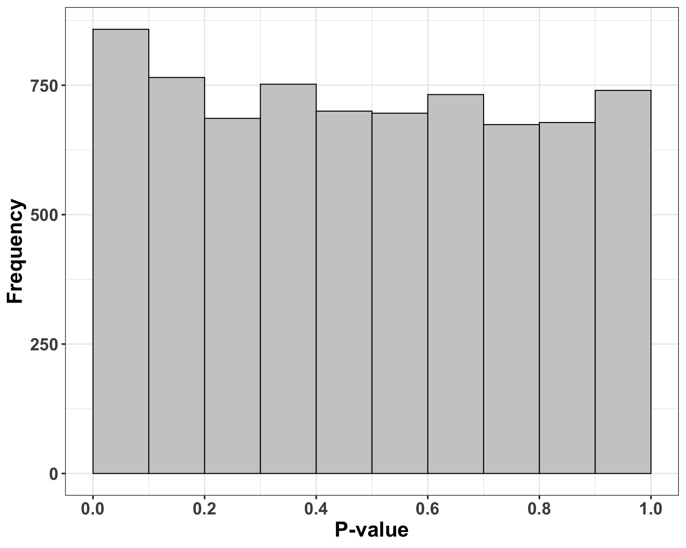
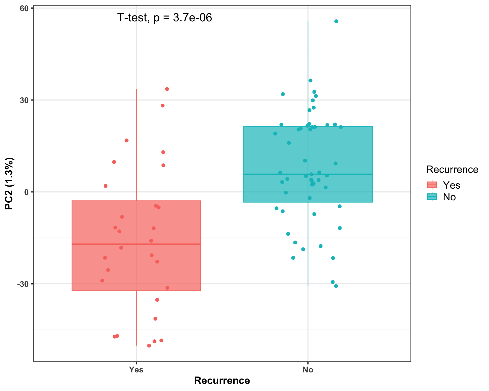
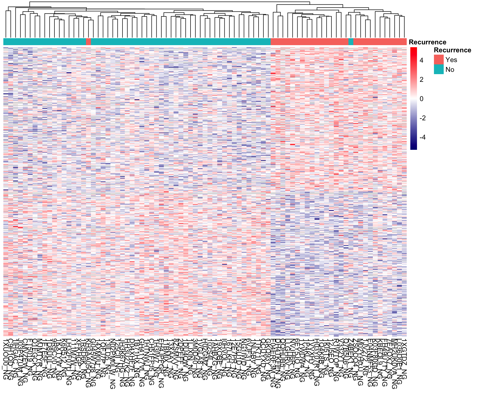
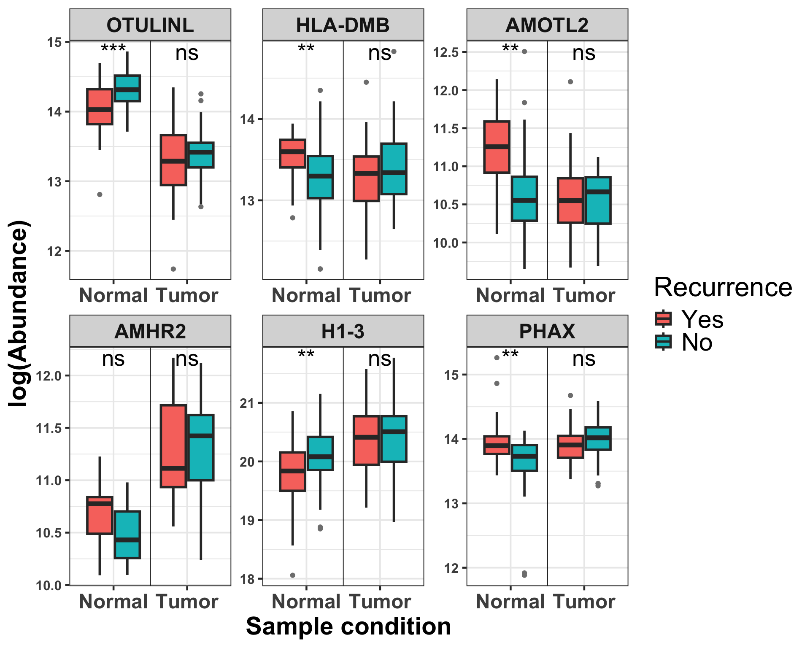
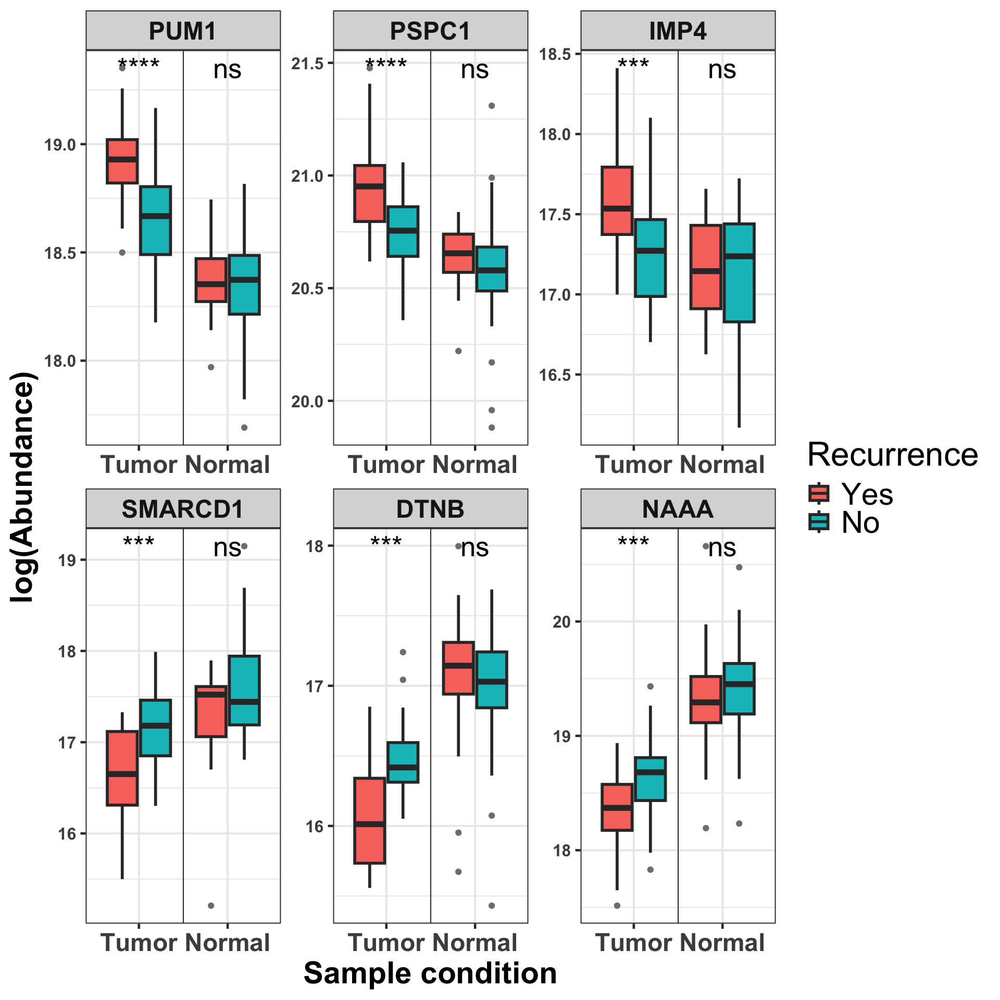
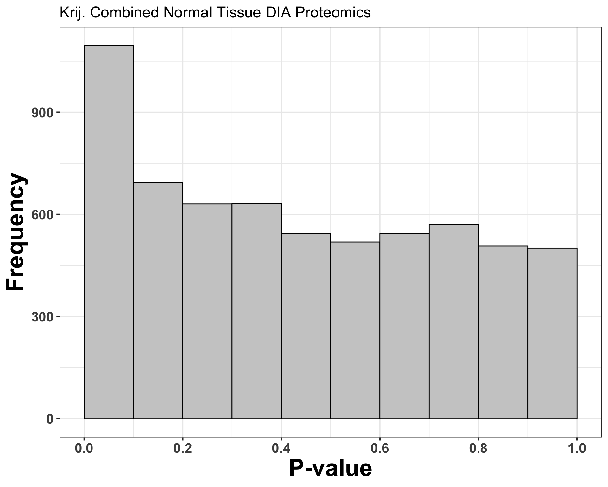
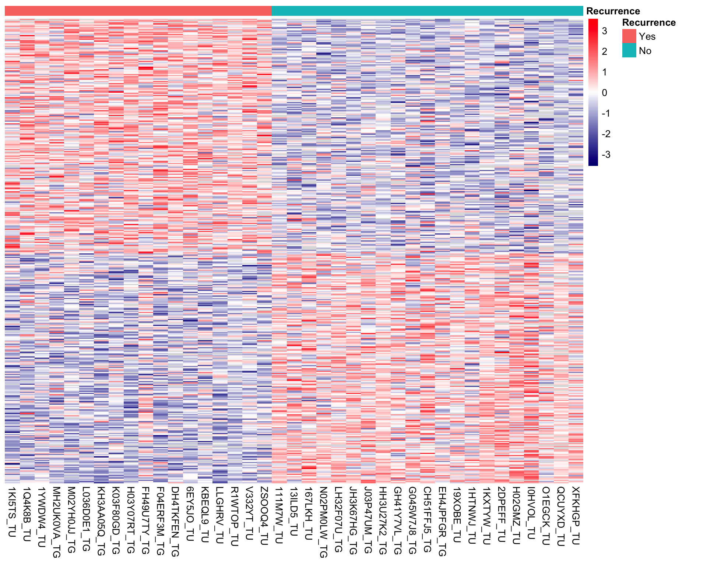
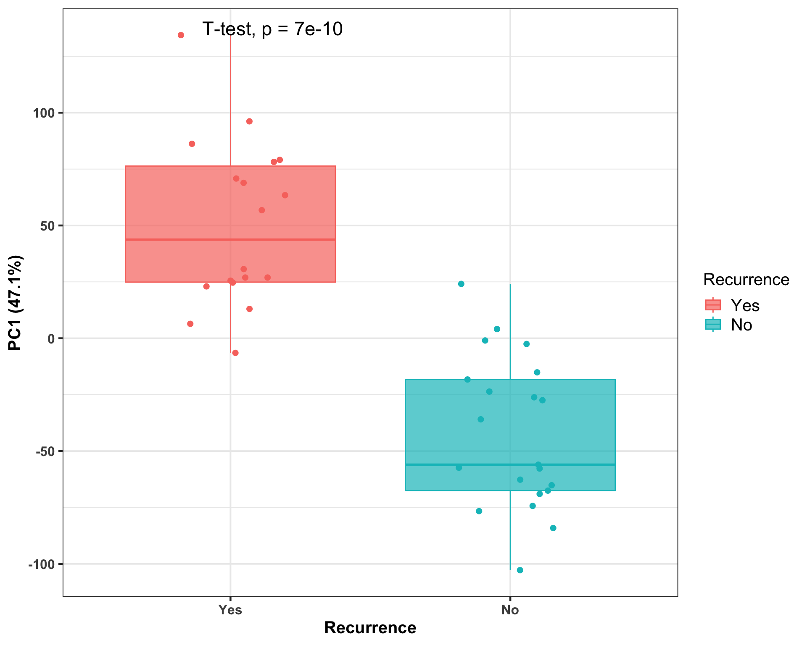
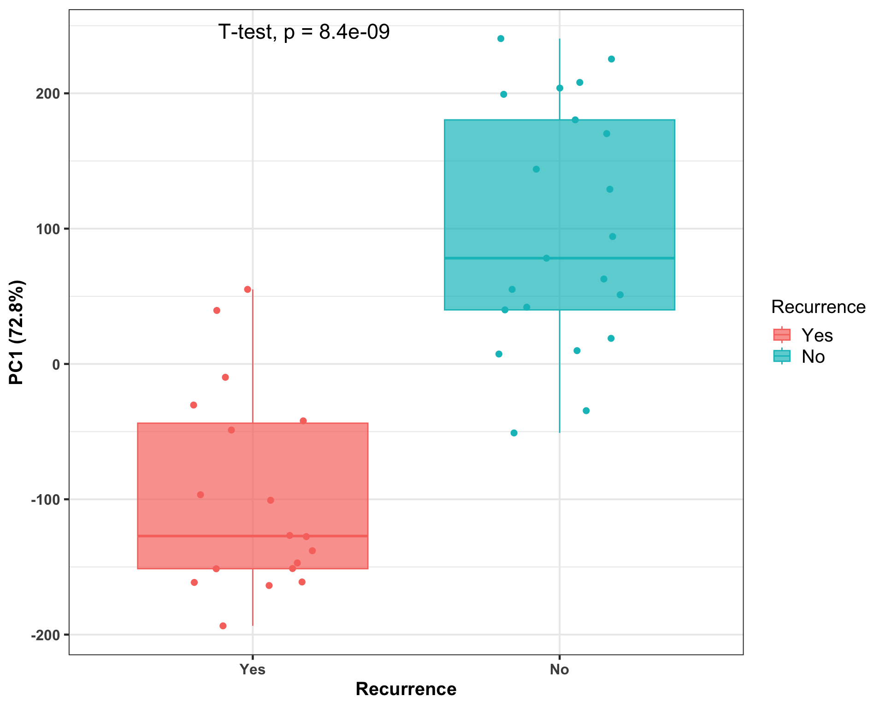
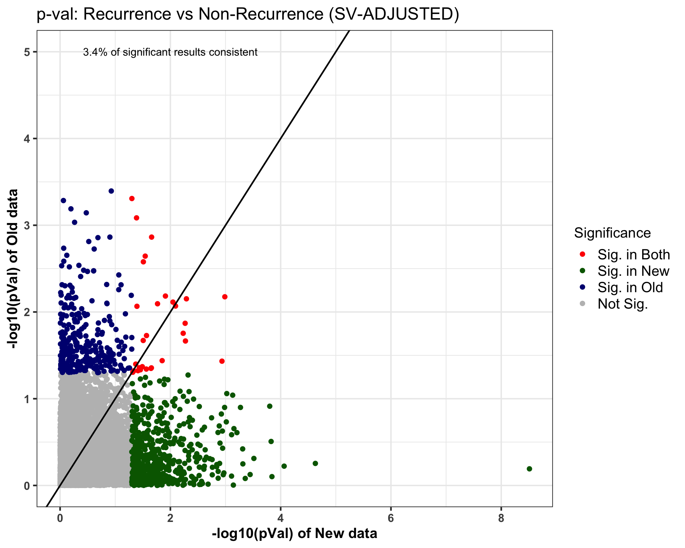

Single-omics analysis: Combined DIA Proteomics (Discovery + MethodDev)
Qian-Wu Liao
Last updated: 2024-10-10
Checks: 6 1
Knit directory: SMART-CARE_LungCancer/
This reproducible R Markdown analysis was created with workflowr (version 1.7.1). The Checks tab describes the reproducibility checks that were applied when the results were created. The Past versions tab lists the development history.
Great! Since the R Markdown file has been committed to the Git repository, you know the exact version of the code that produced these results.
Great job! The global environment was empty. Objects defined in the global environment can affect the analysis in your R Markdown file in unknown ways. For reproduciblity it’s best to always run the code in an empty environment.
The command set.seed(20230425) was run prior to running
the code in the R Markdown file. Setting a seed ensures that any results
that rely on randomness, e.g. subsampling or permutations, are
reproducible.
Great job! Recording the operating system, R version, and package versions is critical for reproducibility.
Nice! There were no cached chunks for this analysis, so you can be confident that you successfully produced the results during this run.
Using absolute paths to the files within your workflowr project makes it difficult for you and others to run your code on a different machine. Change the absolute path(s) below to the suggested relative path(s) to make your code more reproducible.
| absolute | relative |
|---|---|
| /Users/qianwu/Desktop/SMART-CARE_LungCancer | . |
Great! You are using Git for version control. Tracking code development and connecting the code version to the results is critical for reproducibility.
The results in this page were generated with repository version d14c3b3. See the Past versions tab to see a history of the changes made to the R Markdown and HTML files.
Note that you need to be careful to ensure that all relevant files for
the analysis have been committed to Git prior to generating the results
(you can use wflow_publish or
wflow_git_commit). workflowr only checks the R Markdown
file, but you know if there are other scripts or data files that it
depends on. Below is the status of the Git repository when the results
were generated:
Ignored files:
Ignored: .DS_Store
Ignored: .RData
Ignored: .Rhistory
Ignored: analysis/.DS_Store
Ignored: code/.DS_Store
Ignored: data/.DS_Store
Ignored: data/Discovery/
Ignored: data/MethodDev/
Ignored: data/aliquot_metadata.xlsx
Ignored: data/metadata_latest/
Ignored: data/patient_metadata.xlsx
Ignored: data/sample_metadata.xlsx
Ignored: output/.DS_Store
Ignored: output/Discovery/
Ignored: output/Junyan/
Ignored: output/MethodDev/
Ignored: output/SC_meeting/
Untracked files:
Untracked: analysis/CrossCohort_investigation_EXP.Rmd
Untracked: code/archive/
Untracked: code/data_availability.Rmd
Untracked: code/dataset_list.R
Untracked: code/workflowr_commands.R
Unstaged changes:
Modified: analysis/MDev_Dis_02_soa_annotated_untargeted.Rmd
Note that any generated files, e.g. HTML, png, CSS, etc., are not included in this status report because it is ok for generated content to have uncommitted changes.
These are the previous versions of the repository in which changes were
made to the R Markdown (analysis/MDev_Dis_02_soa_DIA.Rmd)
and HTML (docs/MDev_Dis_02_soa_DIA.html) files. If you’ve
configured a remote Git repository (see ?wflow_git_remote),
click on the hyperlinks in the table below to view the files as they
were in that past version.
| File | Version | Author | Date | Message |
|---|---|---|---|---|
| Rmd | 05705b9 | LiaoQianWu | 2024-10-10 | Compare results generated from data either unadjusted or adjusted by SVs and compare result consistency between datasets before and after adjustment -> Data adjusted by SVs constructed from whole tissue datasets with interaction term (Condition:Recurrence) included is chosen |
| html | 4263b1c | LiaoQianWu | 2024-07-30 | Build site. |
| Rmd | 258edf9 | LiaoQianWu | 2024-07-29 | Do protein abundance profiling of potential bad-quality tumor samples and compare analysis results of newly and previously generated data |
| Rmd | 8b66cfb | LiaoQianWu | 2024-07-16 | Do SOA on new Klin. proteomics and combined annotated untargeted lipidomics, recurrence vs nonrecurrence and tumor vs normal |
| Rmd | e957730 | LiaoQianWu | 2024-07-02 | Preprocess combined Method Dev and Discovery Tissue Proteomics from AG Klin. and rename and rearrange source code and analysis results |
Description: Conduct univariate (t-test) and multivariate (PCA) analyses on combined Tissue DIA Proteomics from AG Krijgsveld and AG Klingmüller to have overview of data and take initial look at data power in terms of predicting patient cancer recurrence. Note that surrogate variables estimating unknown, unmeasured, or unmodeled factors are used for hypothesis testing and data adjustment, because we observed that excluding uninteresting variance from data results in better molecular signatures and machine learning predictive models. Check reports on Proteomics SOA Trials and ML model performance Trials for more details. At end, result consistency (Recurrence vs Non-Recurrence) between datasets before and after data adjustment is investigated.
Metadata variables
Patients who got Tissue samples (n = 85):
Recurrence -> Cancer recurrences, Yes:No = 29:56
Gender -> Female:Male = 36:49
Age -> Diagnosis ages ranging from 51 to 84
Smoking -> Smoker:Ex-smoker:Non-Smoker = 18:56:11
Stage -> Pathological stages, IB:IIA:IIB = 50:17:18
Adjuvant -> Adjuvant chemotherapy, True:False = 26:59
Samples:
Condition -> Tumor:Normal = 81:84
Load libraries
library('pcaMethods')
library('sva')
library('limma')
library('proDA')
library('pheatmap')
library('ggplotify')
library('ggrepel')
library('ggvenn')
library('AnnotationDbi')
library('org.Hs.eg.db')
# This annotation object is accessed using AnnotationDbi:select()
hs <- org.Hs.eg.db
library('msigdbr')
library('clusterProfiler')
library(spsUtil)
library('SummarizedExperiment')
library('tidyverse')
# Load user-defined functions
source('./code/analysis_pipeline.R')
source('./code/misc.R')
source('./code/comparison_funcs.R')
# Set plot theme
th <- theme_bw(base_size = 15) +
theme(axis.title = element_text(face = 'bold'),
axis.text = element_text(face = 'bold'),
axis.ticks = element_line(linewidth = 0.8),
legend.text = element_text(size = 15))Display associations between cancer recurrence and the other patient metadata variables to identify potential predictors (or confounders)
# Test associations between cancer recurrence and the other patient metadata variables
# Prepare patient metadata
proTissue <- readRDS('./data/Discovery/AG_Klingmueller/proTissueVsn.rds')
patientMetadat <- tibble::as_tibble(colData(proTissue)) %>%
dplyr::filter(!duplicated(Patient)) %>%
dplyr::select(Patient, Recurrence, Gender, Age, Smoking, Stage, Adjuvant)
patientRecur <- dplyr::select(patientMetadat, Patient, Recurrence)
patientMetadat <- dplyr::select(patientMetadat, -Recurrence)
testAsso(patientMetadat, patientRecur, cmn_col = 'Patient') %>%
dplyr::select(-Stat) Var1 Var2 pVal pValAdj Test
1 Stage Recurrence 0.04766465 0.2383232 Chi-square
2 Smoking Recurrence 0.17097458 0.2470761 Chi-square
3 Adjuvant Recurrence 0.19171812 0.2470761 Chi-square
4 Gender Recurrence 0.19766086 0.2470761 Chi-square
5 Age Recurrence 0.57975337 0.5797534 T-test=> All recruited patients are early-stage lung adenocarcinoma patients and pathological stages can theoretically be associated with tumor recurrence.
Display contingency table between adjuvant chemotherapy and cancer recurrence
table(patientMetadat$Adjuvant, patientRecur$Recurrence)
No Yes
False 42 17
True 14 12=> Probability of patients receiving adjuvant chemotherapy developing tumor recurrence is 46% in our study, and in general, 30-55% lung cancer patients develop tumor recurrence, which implies receiving adjuvant chemotherapy or not should not be confounder in our analysis.
Tissue Proteomics (AG Klingmüller)
Discovery + MethodDev
Metadata-assisted quality control: Tumor vs Normal samples
# Load preprocessed data
proTissue_Klin <- readRDS('./data/Discovery/AG_Klingmueller/proTissueVsn.rds')
# Perform single-omics analysis
proTissueRes_Klin <- doSOA(proTissue_Klin, meta_var = 'Condition', pca_method = 'ppca',
num_PCs = 20, do_onlyPCA = T)
# Visualize PCs
pcTab <- proTissueRes_Klin$pcTab
ggplot(pcTab, aes(x=Condition, y=`PC1 (33.3%)`, col=Condition, fill=Condition)) +
geom_boxplot(alpha = 0.7, outliers = F) +
geom_jitter(position = position_jitter(0.3), size = 2, show.legend = F) +
scale_color_brewer(palette = 'Dark2') +
scale_fill_brewer(palette = 'Dark2') +
th
| Version | Author | Date |
|---|---|---|
| 4263b1c | LiaoQianWu | 2024-07-30 |
Surrogate variable analysis: All Tissue
samples
Prepare SVs for latter use
Display significant associations between estimated SVs and patient metadata variables and show data quality after adjusted by SVs
# Prepare data accounted for SVs for later visualizations
# Do SVA
proTissueSVA_Int_Klin <- doSVA(proTissue_Klin, wantedVar = c('Condition', 'Recurrence', 'Condition:Recurrence'),
numSV_method = 'be', asso_metaVar = c('Condition', 'Recurrence',
'Gender', 'Age', 'Smoking',
'Stage', 'TumorPurity'))
# Show significant associations between SVs and sample metadata variables
# Sample condition accounts for large variance in data, so perhaps to preserve effects
# of recurrence, some variance contributed from condition is eliminated.
proTissueSVA_Int_Klin$sigAssoTab Var1 Var2 pVal pValAdj Stat Test
1 SV4 TumorPurity 2.504272e-07 3.330682e-05 -0.5418794 Correlation
2 SV6 Smoking 7.544081e-04 3.595909e-02 7.5246971 ANOVA
3 SV16 Condition 1.105129e-03 3.595909e-02 -3.3226384 T-test
4 SV8 Smoking 1.373014e-03 3.595909e-02 6.8716498 ANOVA
5 SV7 Condition 1.408088e-03 3.595909e-02 3.2497432 T-test
6 SV15 Age 1.622215e-03 3.595909e-02 -0.2457298 Correlation
7 SV19 Gender 6.850870e-03 1.301665e-01 2.7395547 T-test
8 SV6 Age 9.301398e-03 1.546357e-01 -0.2037655 Correlation
9 SV14 Gender 1.183657e-02 1.635414e-01 -2.5461422 T-test
10 SV2 TumorPurity 1.275362e-02 1.635414e-01 -0.2790688 Correlation
11 SV16 Age 1.352598e-02 1.635414e-01 0.1936898 Correlation
12 SV13 Stage 2.253350e-02 2.497462e-01 3.8846799 ANOVA
13 SV6 Stage 2.668084e-02 2.724076e-01 3.7076702 ANOVA
14 SV13 Age 2.870866e-02 2.724076e-01 0.1719130 Correlation
15 SV6 TumorPurity 3.072267e-02 2.724076e-01 0.2433041 Correlation
16 SV7 Recurrence 3.948052e-02 3.177938e-01 2.0761382 T-test
17 SV9 Age 4.062026e-02 3.177938e-01 0.1610533 Correlation
18 SV11 TumorPurity 4.653968e-02 3.438765e-01 0.2246543 Correlation# Perform single-omics analysis
proTissueSVs_Int_Klin <- proTissueSVA_Int_Klin$summExp_SVs
SVs <- grep('^SV\\d+$', colnames(colData(proTissueSVs_Int_Klin)), value = T)
proTissueRes4Viz_Int_Klin <- doSOA(proTissueSVs_Int_Klin, meta_var = 'Condition', pca_method = 'ppca',
num_PCs = 20, do_onlyPCA = T, unwantVar = SVs)
# Visualize PCs
pcTab <- proTissueRes4Viz_Int_Klin$pcTab
ggplot(pcTab, aes(x=Condition, y=`PC1 (58.1%)`, col=Condition, fill=Condition)) +
geom_boxplot(alpha = 0.7, outliers = F) +
geom_jitter(position = position_jitter(0.3), size = 2, show.legend = F) +
scale_color_brewer(palette = 'Dark2') +
scale_fill_brewer(palette = 'Dark2') +
th => Some SVs are significantly associated with Sample Conditions and
Patient Tumor Recurrence (interesting variance). It may be that
Condition accounts for major variance in data, so some associations with
constructed SVs are inevitable. For Recurrence, it may be due to
outliler samples observed in molecular signatures, especially of Normal
samples (check heatmap right down below). Those outlier samples are
mostly from Recurrence patient groups, and SVA tries to estimate
differences between outlier and the other samples (uninteresting
variance), which makes those SVs associated with Recurrence.
=> Some SVs are significantly associated with Sample Conditions and
Patient Tumor Recurrence (interesting variance). It may be that
Condition accounts for major variance in data, so some associations with
constructed SVs are inevitable. For Recurrence, it may be due to
outliler samples observed in molecular signatures, especially of Normal
samples (check heatmap right down below). Those outlier samples are
mostly from Recurrence patient groups, and SVA tries to estimate
differences between outlier and the other samples (uninteresting
variance), which makes those SVs associated with Recurrence.
Unadjusted Normal samples
Rows are significant features ordered by t-statistics.
proNormalRes <- readRDS('./data/Discovery/AG_Klingmueller/soaRes/trials/proNormalRes.rds')
proNormalRes$sig.feat.heat# Prepare median normalized data accounted for SVs for later computing log2(FC)
# Load preprocessed data
proTissueMedi_Klin <- readRDS('./data/Discovery/AG_Klingmueller/proTissueMedi.rds')
# Do SVA
proTissueMediSVA_Klin <- doSVA(proTissueMedi_Klin, wantedVar = c('Condition', 'Recurrence', 'Condition:Recurrence'),
numSV_method = 'be', asso_metaVar = c('Condition', 'Recurrence',
'Gender', 'Age', 'Smoking',
'Stage', 'TumorPurity'))
# Show significant associations between SVs and sample metadata variables
# proTissueMediSVA_Klin$sigAssoTab
# Perform single-omics analysis
proTissueMediSVs_Klin <- proTissueMediSVA_Klin$summExp_SVs
# SVs <- grep('^SV\\d+$', colnames(colData(proTissueMediSVs_Klin)), value = T)
# proTissueMediRes_Klin <- doSOA(proTissueMediSVs_Klin, meta_var = 'Condition', pca_method = 'ppca',
# num_PCs = 20, do_onlyPCA = T, unwantVar = SVs)
# # Show significant associations between PCs and sample conditions
# proTissueMediRes_Klin$pcSigAssoRes
# # Visualize PCs
# pcTab <- proTissueMediRes_Klin$pcTab
# ggplot(pcTab, aes(x=Condition, y=`PC1 (51.2%)`, col=Condition, fill=Condition)) +
# geom_boxplot(alpha = 0.7, outliers = F) +
# geom_jitter(position = position_jitter(0.3), size = 2, show.legend = F) +
# scale_color_brewer(palette = 'Dark2') +
# scale_fill_brewer(palette = 'Dark2') +
# thTumor samples
Display associations between cancer recurrence and the other patient metadata variables from patients included in tumor sample analysis to identify potential confounders (or predictors)
# Subset certain samples
proTumor_Klin <- proTissueSVs_Int_Klin[, which(colData(proTissueSVs_Int_Klin)$Condition == 'Tumor')]
# Prepare feature annotation table
featAnnoTab <- tibble::as_tibble(rowData(proTumor_Klin), rownames = 'Protein') %>%
tibble::column_to_rownames('Protein')
# Test associations between cancer recurrence and the other patient metadata variables
# Prepare patient metadata
patientMetadat <- tibble::as_tibble(colData(proTumor_Klin)) %>%
dplyr::filter(!duplicated(Patient)) %>%
dplyr::select(Patient, Recurrence, Gender, Age, Smoking, Stage, Adjuvant)
patientRecur <- dplyr::select(patientMetadat, Patient, Recurrence)
patientMetadat <- dplyr::select(patientMetadat, -Recurrence)
testAsso(patientMetadat, patientRecur, cmn_col = 'Patient') %>%
dplyr::select(-Stat) Var1 Var2 pVal pValAdj Test
1 Stage Recurrence 0.06787581 0.3259895 Chi-square
2 Adjuvant Recurrence 0.18196957 0.3259895 Chi-square
3 Smoking Recurrence 0.19559370 0.3259895 Chi-square
4 Gender Recurrence 0.29491461 0.3686433 Chi-square
5 Age Recurrence 0.60138234 0.6013823 T-test# Perform single-omics analysis
# proTumorRes_Klin <- doSingleOmicsAnalysis(proTumor_Klin, soa_metaVar = 'Recurrence', num_sigFeats = 6,
# pca_method = 'ppca', num_PCs = 20, num_PCfeats = 30,
# use_limma = F, use_proDA = T, feat_anno = featAnnoTab,
# feat_conv = T, plot_title = NULL, show_rownames = F,
# pca_metaVar = c('Recurrence', 'Gender', 'Age',
# 'Smoking', 'Stage', 'TumorPurity'),
# soa_unwantVar = grep('^SV\\d+$', colnames(colData(proTumor_Klin)),
# value = T),
# level_metaVar = c('Yes', 'No'))
# saveRDS(proTumorRes_Klin, './data/Discovery/AG_Klingmueller/soaRes/proTumorRes_SVsByProTissueInt.rds')
proTumorRes_Klin <- readRDS('./data/Discovery/AG_Klingmueller/soaRes/proTumorRes_SVsByProTissueInt.rds')Display significant associations between features (Var1) and cancer recurrence (Var2)
dplyr::select(proTumorRes_Klin$sig.feat.tab, -Test) Var1 Var2 pVal pValAdj Stat Gene
1 Q8WXG6 Recurrence 7.95e-05 0.270 4.25 MADD
2 P10515 Recurrence 1.04e-04 0.270 4.17 DLAT
3 P51808 Recurrence 1.11e-04 0.270 -4.15 DYNLT3
4 Q8IYB5 Recurrence 3.06e-04 0.440 3.84 SMAP1
5 Q9Y2J2 Recurrence 3.19e-04 0.440 -3.83 EPB41L3
6 P61019 Recurrence 3.63e-04 0.440 3.79 RAB2A
7 P50238 Recurrence 5.34e-04 0.488 -3.67 CRIP1
8 O75475 Recurrence 6.89e-04 0.488 -3.59 PSIP1
9 P51531 Recurrence 6.89e-04 0.488 -3.59 SMARCA2
10 Q15170 Recurrence 7.75e-04 0.488 3.55 TCEAL1
11 Q8WVM7 Recurrence 8.32e-04 0.488 -3.53 STAG1
12 Q5T6X4 Recurrence 8.65e-04 0.488 -3.51 FAM162B
13 P14854 Recurrence 1.08e-03 0.488 -3.44 COX6B1
14 O00483 Recurrence 1.11e-03 0.488 -3.43 NDUFA4
15 O75923 Recurrence 1.13e-03 0.488 -3.43 DYSF
16 Q8NBJ9 Recurrence 1.13e-03 0.488 3.43 SIDT2
17 Q14CN2 Recurrence 1.14e-03 0.488 3.42 CLCA4
18 Q9UDX4 Recurrence 1.27e-03 0.514 3.39 SEC14L3
19 Q96AB3 Recurrence 1.50e-03 0.538 3.33 ISOC2
20 Q9BYD1 Recurrence 1.50e-03 0.538 3.33 MRPL13
21 P08236 Recurrence 1.55e-03 0.538 -3.32 GUSB
22 P07737 Recurrence 1.66e-03 0.548 3.30 PFN1
23 Q9BYT8 Recurrence 1.73e-03 0.548 3.29 NLN
24 Q9UKZ4 Recurrence 1.95e-03 0.569 3.24 TENM1
25 O75531 Recurrence 1.97e-03 0.569 3.24 BANF1
26 P22105 Recurrence 2.03e-03 0.569 -3.23 TNXB
27 P63104 Recurrence 2.18e-03 0.580 3.21 YWHAZ
28 Q92604 Recurrence 2.33e-03 0.580 3.19 LPGAT1
29 P49959 Recurrence 2.37e-03 0.580 3.18 MRE11
30 O75691 Recurrence 2.43e-03 0.580 3.17 UTP20
31 P23368 Recurrence 2.47e-03 0.580 3.17 ME2
32 P68402 Recurrence 2.65e-03 0.602 3.14 PAFAH1B2
33 Q4G0N4 Recurrence 2.91e-03 0.610 3.11 NADK2
34 Q15386 Recurrence 2.93e-03 0.610 3.11 UBE3C
35 P35442 Recurrence 2.96e-03 0.610 3.10 THBS2
36 Q9H0N0 Recurrence 3.02e-03 0.610 3.10 RAB6C
37 Q86YP4 Recurrence 3.19e-03 0.624 -3.08 GATAD2A
38 P26038 Recurrence 3.27e-03 0.624 -3.07 MSN
39 Q9H082 Recurrence 3.34e-03 0.624 -3.06 RAB33B
40 P49589 Recurrence 3.46e-03 0.629 3.05 CARS1
41 Q9BVG9 Recurrence 3.55e-03 0.630 3.04 PTDSS2
42 Q9P0M6 Recurrence 3.89e-03 0.641 -3.01 MACROH2A2
43 P49585 Recurrence 3.90e-03 0.641 -3.01 PCYT1A
44 Q9Y3B8 Recurrence 3.93e-03 0.641 3.00 REXO2
45 Q9NPG8 Recurrence 4.02e-03 0.641 -3.00 ZDHHC4
46 Q9NRN7 Recurrence 4.15e-03 0.641 2.99 AASDHPPT
47 P41250 Recurrence 4.45e-03 0.641 2.96 GARS1
48 Q08426 Recurrence 4.45e-03 0.641 -2.96 EHHADH
49 O75390 Recurrence 4.71e-03 0.641 2.94 CS
50 Q7Z7H5 Recurrence 4.72e-03 0.641 2.94 TMED4
51 Q8WWP7 Recurrence 4.77e-03 0.641 -2.94 GIMAP1
52 Q15124 Recurrence 4.86e-03 0.641 -2.93 PGM5
53 P20742 Recurrence 4.89e-03 0.641 2.93 PZP
54 Q92526 Recurrence 4.90e-03 0.641 2.93 CCT6B
55 Q8IWV8 Recurrence 5.04e-03 0.641 2.92 UBR2
56 O94804 Recurrence 5.23e-03 0.641 -2.90 STK10
57 Q8IUZ5 Recurrence 5.26e-03 0.641 -2.90 PHYKPL
58 P49755 Recurrence 5.31e-03 0.641 2.90 TMED10
59 O95785 Recurrence 5.35e-03 0.641 -2.89 WIZ
60 P24752 Recurrence 5.42e-03 0.641 2.89 ACAT1
61 Q9Y296 Recurrence 5.50e-03 0.641 2.88 TRAPPC4
62 Q7Z7L9 Recurrence 5.70e-03 0.641 2.87 ZSCAN2
63 Q6UVK1 Recurrence 5.75e-03 0.641 -2.87 CSPG4
64 Q13509 Recurrence 5.84e-03 0.641 2.86 TUBB3
65 Q8N3V7 Recurrence 5.87e-03 0.641 -2.86 SYNPO
66 P14780 Recurrence 5.93e-03 0.641 2.86 MMP9
67 P33151 Recurrence 5.98e-03 0.641 -2.85 CDH5
68 Q8TCE6 Recurrence 6.19e-03 0.641 -2.84 DENND10
69 Q14203 Recurrence 6.41e-03 0.641 -2.83 DCTN1
70 Q9NW97 Recurrence 6.45e-03 0.641 2.83 TMEM51
71 P52565 Recurrence 6.60e-03 0.641 2.82 ARHGDIA
72 Q58FG1 Recurrence 6.61e-03 0.641 2.82 HSP90AA4P
73 P06310 Recurrence 6.64e-03 0.641 2.82 IGKV2-30
74 Q86T13 Recurrence 6.70e-03 0.641 -2.81 CLEC14A
75 Q96FX7 Recurrence 6.80e-03 0.641 2.81 TRMT61A
76 Q9BVM4 Recurrence 6.81e-03 0.641 2.81 GGACT
77 Q9NPB8 Recurrence 6.87e-03 0.641 2.80 GPCPD1
78 Q9H3H3 Recurrence 6.97e-03 0.641 2.80 C11orf68
79 Q8IV50 Recurrence 6.98e-03 0.641 2.80 LYSMD2
80 O76024 Recurrence 7.04e-03 0.641 -2.79 WFS1
81 O95081 Recurrence 7.40e-03 0.648 -2.78 AGFG2
82 O75112 Recurrence 7.44e-03 0.648 -2.77 LDB3
83 P57087 Recurrence 7.59e-03 0.648 -2.77 JAM2
84 P25098 Recurrence 7.63e-03 0.648 2.76 GRK2
85 Q9UPN3 Recurrence 7.64e-03 0.648 -2.76 MACF1
86 O95208 Recurrence 7.66e-03 0.648 -2.76 EPN2
87 Q8NB90 Recurrence 7.76e-03 0.649 -2.76 SPATA5
88 Q7LGA3 Recurrence 7.85e-03 0.650 2.75 HS2ST1
89 Q15172 Recurrence 8.02e-03 0.652 -2.75 PPP2R5A
90 P56385 Recurrence 8.22e-03 0.652 2.74 ATP5ME
91 Q8NHG8 Recurrence 8.38e-03 0.652 2.73 ZNRF2
92 Q8NDV1 Recurrence 8.53e-03 0.652 2.72 ST6GALNAC3
93 Q5T1M5 Recurrence 8.54e-03 0.652 -2.72 FKBP15
94 Q15063 Recurrence 8.67e-03 0.652 2.72 POSTN
95 O94956 Recurrence 8.71e-03 0.652 -2.72 SLCO2B1
96 P61916 Recurrence 8.73e-03 0.652 -2.71 NPC2
97 P49770 Recurrence 8.81e-03 0.652 -2.71 EIF2B2
98 P16930 Recurrence 8.85e-03 0.652 -2.71 FAH
99 P41226 Recurrence 8.87e-03 0.652 -2.71 UBA7
100 Q8TBM8 Recurrence 9.01e-03 0.656 2.70 DNAJB14
101 O14523 Recurrence 9.37e-03 0.669 2.69 C2CD2L
102 Q03167 Recurrence 9.37e-03 0.669 -2.69 TGFBR3
103 O14498 Recurrence 9.60e-03 0.679 2.68 ISLR
104 Q6KB66 Recurrence 9.76e-03 0.683 2.67 KRT80
105 Q8NF91 Recurrence 9.86e-03 0.684 -2.67 SYNE1
106 O00442 Recurrence 1.02e-02 0.693 2.66 RTCA
107 P53677 Recurrence 1.02e-02 0.693 2.66 AP3M2
108 Q5U651 Recurrence 1.03e-02 0.694 -2.65 RASIP1
109 Q13822 Recurrence 1.04e-02 0.694 2.65 ENPP2
110 Q8WUA7 Recurrence 1.06e-02 0.701 2.64 TBC1D22A
111 P01903 Recurrence 1.08e-02 0.702 -2.64 HLA-DRA
112 Q13136 Recurrence 1.09e-02 0.702 2.63 PPFIA1
113 O15021 Recurrence 1.10e-02 0.702 -2.63 MAST4
114 P23528 Recurrence 1.10e-02 0.702 2.63 CFL1
115 O43768 Recurrence 1.12e-02 0.702 2.62 ENSA
116 Q06278 Recurrence 1.12e-02 0.702 -2.62 AOX1
117 Q9H9C1 Recurrence 1.16e-02 0.702 2.61 VIPAS39
118 P18206 Recurrence 1.17e-02 0.702 -2.60 VCL
119 P36955 Recurrence 1.17e-02 0.702 2.60 SERPINF1
120 Q15283 Recurrence 1.17e-02 0.702 2.60 RASA2
121 Q9NP66 Recurrence 1.17e-02 0.702 2.60 HMG20A
122 Q93052 Recurrence 1.18e-02 0.702 -2.60 LPP
123 P00403 Recurrence 1.20e-02 0.702 -2.59 MT-CO2
124 Q9H488 Recurrence 1.20e-02 0.702 2.59 POFUT1
125 P49591 Recurrence 1.21e-02 0.702 2.59 SARS1
126 Q9Y4H4 Recurrence 1.24e-02 0.707 2.58 GPSM3
127 Q96EV2 Recurrence 1.25e-02 0.707 2.58 RBM33
128 P49189 Recurrence 1.26e-02 0.707 -2.58 ALDH9A1
129 Q14520 Recurrence 1.28e-02 0.707 -2.57 HABP2
130 Q96S44 Recurrence 1.30e-02 0.707 2.56 TP53RK
131 P01742 Recurrence 1.31e-02 0.707 -2.56 IGHV1-69
132 O15530 Recurrence 1.32e-02 0.707 2.56 PDPK1
133 Q8NEZ4 Recurrence 1.33e-02 0.707 2.55 KMT2C
134 Q9UK99 Recurrence 1.33e-02 0.707 2.55 FBXO3
135 Q15819 Recurrence 1.35e-02 0.707 2.55 UBE2V2
136 Q8N2G8 Recurrence 1.35e-02 0.707 -2.55 GHDC
137 Q7Z4I7 Recurrence 1.36e-02 0.707 -2.55 LIMS2
138 Q9Y3C4 Recurrence 1.36e-02 0.707 2.55 TPRKB
139 Q6NZI2 Recurrence 1.37e-02 0.707 -2.54 CAVIN1
140 P01599 Recurrence 1.38e-02 0.707 -2.54 IGKV1-17
141 P54709 Recurrence 1.38e-02 0.707 -2.54 ATP1B3
142 Q8IZ73 Recurrence 1.39e-02 0.707 -2.54 RPUSD2
143 P26440 Recurrence 1.40e-02 0.707 -2.53 IVD
144 Q96I59 Recurrence 1.40e-02 0.707 2.53 NARS2
145 P27701 Recurrence 1.41e-02 0.707 -2.53 CD82
146 P28906 Recurrence 1.43e-02 0.707 -2.52 CD34
147 Q6ZNL6 Recurrence 1.44e-02 0.707 2.52 FGD5
148 Q9UGM5 Recurrence 1.44e-02 0.707 2.52 FETUB
149 Q99611 Recurrence 1.45e-02 0.707 2.52 SEPHS2
150 Q9UK76 Recurrence 1.50e-02 0.720 2.51 JPT1
151 P61224 Recurrence 1.51e-02 0.720 2.50 RAP1B
152 O00193 Recurrence 1.53e-02 0.720 2.50 SMAP
153 Q6P1L5 Recurrence 1.55e-02 0.720 -2.49 FAM117B
154 Q07960 Recurrence 1.57e-02 0.720 2.49 ARHGAP1
155 P62847 Recurrence 1.58e-02 0.720 2.49 RPS24
156 P67812 Recurrence 1.58e-02 0.720 2.49 SEC11A
157 Q14789 Recurrence 1.59e-02 0.720 -2.48 GOLGB1
158 O60884 Recurrence 1.60e-02 0.720 -2.48 DNAJA2
159 Q5T5C0 Recurrence 1.60e-02 0.720 2.48 STXBP5
160 P49326 Recurrence 1.61e-02 0.720 -2.48 FMO5
161 P49450 Recurrence 1.61e-02 0.720 -2.48 CENPA
162 Q96EK6 Recurrence 1.62e-02 0.720 2.48 GNPNAT1
163 P40123 Recurrence 1.63e-02 0.720 -2.48 CAP2
164 Q9C037 Recurrence 1.63e-02 0.720 -2.47 TRIM4
165 Q15293 Recurrence 1.65e-02 0.720 2.47 RCN1
166 Q92608 Recurrence 1.65e-02 0.720 -2.47 DOCK2
167 P20036 Recurrence 1.67e-02 0.720 -2.46 HLA-DPA1
168 Q99836 Recurrence 1.68e-02 0.720 2.46 MYD88
169 O60238 Recurrence 1.69e-02 0.720 2.46 BNIP3L
170 P61160 Recurrence 1.69e-02 0.720 2.46 ACTR2
171 P60033 Recurrence 1.71e-02 0.720 -2.46 CD81
172 Q9NY33 Recurrence 1.72e-02 0.720 2.45 DPP3
173 P23193 Recurrence 1.73e-02 0.720 2.45 TCEA1
174 Q6FIF0 Recurrence 1.73e-02 0.720 -2.45 ZFAND6
175 Q9UBI9 Recurrence 1.74e-02 0.720 2.45 HECA
176 Q9Y3Z3 Recurrence 1.74e-02 0.720 -2.45 SAMHD1
177 O95816 Recurrence 1.78e-02 0.725 -2.44 BAG2
178 Q8IWW6 Recurrence 1.78e-02 0.725 -2.44 ARHGAP12
179 Q12765 Recurrence 1.79e-02 0.725 -2.44 SCRN1
180 Q99538 Recurrence 1.79e-02 0.725 2.44 LGMN
181 P61077 Recurrence 1.83e-02 0.736 2.43 UBE2D3
182 Q8WUX9 Recurrence 1.86e-02 0.745 2.42 CHMP7
183 Q99959 Recurrence 1.88e-02 0.749 2.42 PKP2
184 P51784 Recurrence 1.90e-02 0.749 2.41 USP11
185 O60504 Recurrence 1.91e-02 0.749 -2.41 SORBS3
186 Q9H0F6 Recurrence 1.93e-02 0.749 2.41 SHARPIN
187 Q9Y653 Recurrence 1.93e-02 0.749 2.41 ADGRG1
188 Q9UKK9 Recurrence 1.94e-02 0.749 -2.41 NUDT5
189 P25325 Recurrence 1.95e-02 0.749 2.40 MPST
190 Q9UEG4 Recurrence 1.95e-02 0.749 -2.40 ZNF629
191 P21397 Recurrence 1.99e-02 0.757 -2.39 MAOA
192 Q13614 Recurrence 2.01e-02 0.757 -2.39 MTMR2
193 Q8TE77 Recurrence 2.03e-02 0.757 2.39 SSH3
194 P08754 Recurrence 2.04e-02 0.757 2.38 GNAI3
195 Q14914 Recurrence 2.04e-02 0.757 -2.38 PTGR1
196 O75683 Recurrence 2.05e-02 0.757 -2.38 SURF6
197 P62633 Recurrence 2.06e-02 0.757 -2.38 CNBP
198 Q96C19 Recurrence 2.06e-02 0.757 2.38 EFHD2
199 Q9Y490 Recurrence 2.08e-02 0.760 -2.38 TLN1
200 Q3T906 Recurrence 2.09e-02 0.760 2.37 GNPTAB
201 Q9UBP9 Recurrence 2.10e-02 0.760 -2.37 GULP1
202 Q03591 Recurrence 2.11e-02 0.760 -2.37 CFHR1
203 Q96A26 Recurrence 2.13e-02 0.761 -2.37 FAM162A
204 Q9Y4E8 Recurrence 2.13e-02 0.761 2.37 USP15
205 Q9NZQ3 Recurrence 2.16e-02 0.769 -2.36 NCKIPSD
206 O14841 Recurrence 2.19e-02 0.772 2.36 OPLAH
207 Q13404 Recurrence 2.22e-02 0.772 2.35 UBE2V1
208 Q8N1F7 Recurrence 2.26e-02 0.772 -2.34 NUP93
209 Q9NXW2 Recurrence 2.26e-02 0.772 -2.34 DNAJB12
210 Q7L804 Recurrence 2.27e-02 0.772 2.34 RAB11FIP2
211 P23458 Recurrence 2.29e-02 0.772 -2.34 JAK1
212 Q16576 Recurrence 2.32e-02 0.772 -2.33 RBBP7
213 Q16822 Recurrence 2.32e-02 0.772 2.33 PCK2
214 Q86VP3 Recurrence 2.32e-02 0.772 -2.33 PACS2
215 O95470 Recurrence 2.33e-02 0.772 2.33 SGPL1
216 Q9NTZ6 Recurrence 2.34e-02 0.772 2.33 RBM12
217 P29474 Recurrence 2.35e-02 0.772 -2.33 NOS3
218 Q12767 Recurrence 2.35e-02 0.772 -2.33 TMEM94
219 Q63ZY3 Recurrence 2.36e-02 0.772 -2.33 KANK2
220 P50914 Recurrence 2.37e-02 0.772 2.32 RPL14
221 P35573 Recurrence 2.38e-02 0.772 2.32 AGL
222 Q99943 Recurrence 2.38e-02 0.772 2.32 AGPAT1
223 Q9P2T1 Recurrence 2.38e-02 0.772 -2.32 GMPR2
224 Q12874 Recurrence 2.40e-02 0.772 -2.32 SF3A3
225 Q96AT1 Recurrence 2.40e-02 0.772 -2.32 KIAA1143
226 Q6PD62 Recurrence 2.42e-02 0.772 2.31 CTR9
227 P00750 Recurrence 2.43e-02 0.772 -2.31 PLAT
228 P15090 Recurrence 2.43e-02 0.772 -2.31 FABP4
229 Q12982 Recurrence 2.43e-02 0.772 2.31 BNIP2
230 Q5TAQ9 Recurrence 2.44e-02 0.772 -2.31 DCAF8
231 O60220 Recurrence 2.48e-02 0.774 2.30 TIMM8A
232 P21964 Recurrence 2.54e-02 0.774 2.30 COMT
233 P62877 Recurrence 2.54e-02 0.774 2.29 RBX1
234 P35658 Recurrence 2.55e-02 0.774 -2.29 NUP214
235 Q9Y4L1 Recurrence 2.55e-02 0.774 2.29 HYOU1
236 Q96FN9 Recurrence 2.56e-02 0.774 2.29 DTD2
237 Q96JG6 Recurrence 2.56e-02 0.774 2.29 VPS50
238 Q8N699 Recurrence 2.57e-02 0.774 -2.29 MYCT1
239 O75380 Recurrence 2.58e-02 0.774 -2.29 NDUFS6
240 Q9BXK5 Recurrence 2.59e-02 0.774 2.29 BCL2L13
241 P05186 Recurrence 2.60e-02 0.774 -2.29 ALPL
242 Q8IZL8 Recurrence 2.60e-02 0.774 2.28 PELP1
243 P80188 Recurrence 2.61e-02 0.774 2.28 LCN2
244 Q96PZ0 Recurrence 2.63e-02 0.774 2.28 PUS7
245 Q9NR99 Recurrence 2.63e-02 0.774 2.28 MXRA5
246 O60879 Recurrence 2.64e-02 0.774 -2.28 DIAPH2
247 P01906 Recurrence 2.64e-02 0.774 -2.28 HLA-DQA2
248 P0C870 Recurrence 2.64e-02 0.774 -2.28 JMJD7
249 Q7LG56 Recurrence 2.67e-02 0.774 2.27 RRM2B
250 Q9UGU5 Recurrence 2.67e-02 0.774 2.27 HMGXB4
251 O75128 Recurrence 2.69e-02 0.774 2.27 COBL
252 P17813 Recurrence 2.71e-02 0.774 -2.27 ENG
253 Q01082 Recurrence 2.71e-02 0.774 -2.27 SPTBN1
254 Q99988 Recurrence 2.71e-02 0.774 2.27 GDF15
255 P07711 Recurrence 2.73e-02 0.774 -2.26 CTSL
256 P55212 Recurrence 2.74e-02 0.774 2.26 CASP6
257 P78527 Recurrence 2.75e-02 0.774 2.26 PRKDC
258 Q13576 Recurrence 2.75e-02 0.774 -2.26 IQGAP2
259 O75071 Recurrence 2.77e-02 0.774 -2.26 EFCAB14
260 P61225 Recurrence 2.78e-02 0.774 -2.26 RAP2B
261 Q13541 Recurrence 2.78e-02 0.774 2.26 EIF4EBP1
262 Q9NWT6 Recurrence 2.78e-02 0.774 -2.26 HIF1AN
263 P49908 Recurrence 2.89e-02 0.794 -2.24 SELENOP
264 Q9UMS6 Recurrence 2.90e-02 0.794 -2.24 SYNPO2
265 Q14247 Recurrence 2.91e-02 0.794 2.24 CTTN
266 Q8WV93 Recurrence 2.91e-02 0.794 2.24 AFG1L
267 Q9H8L6 Recurrence 2.91e-02 0.794 -2.24 MMRN2
268 P17026 Recurrence 2.94e-02 0.795 -2.23 ZNF22
269 Q9C0B1 Recurrence 2.94e-02 0.795 -2.23 FTO
270 Q5BJF6 Recurrence 2.97e-02 0.798 2.23 ODF2
271 O43314 Recurrence 2.98e-02 0.798 2.23 PPIP5K2
272 O75718 Recurrence 3.00e-02 0.798 2.22 CRTAP
273 Q9BXA6 Recurrence 3.03e-02 0.798 2.22 TSSK6
274 P62826 Recurrence 3.04e-02 0.798 2.22 RAN
275 P16070 Recurrence 3.07e-02 0.798 -2.22 CD44
276 P16284 Recurrence 3.07e-02 0.798 -2.21 PECAM1
277 O75817 Recurrence 3.09e-02 0.798 2.21 POP7
278 Q6IA69 Recurrence 3.09e-02 0.798 2.21 NADSYN1
279 Q9Y625 Recurrence 3.09e-02 0.798 2.21 GPC6
280 Q13642 Recurrence 3.10e-02 0.798 -2.21 FHL1
281 Q92508 Recurrence 3.10e-02 0.798 -2.21 PIEZO1
282 Q9UKY3 Recurrence 3.13e-02 0.798 -2.21 CES1P1
283 Q13451 Recurrence 3.16e-02 0.798 -2.20 FKBP5
284 O75970 Recurrence 3.17e-02 0.798 -2.20 MPDZ
285 Q16627 Recurrence 3.18e-02 0.798 -2.20 CCL14
286 Q3KRA6 Recurrence 3.21e-02 0.798 2.20 C2orf76
287 P21796 Recurrence 3.22e-02 0.798 2.19 VDAC1
288 P49711 Recurrence 3.22e-02 0.798 -2.20 CTCF
289 Q5XKP0 Recurrence 3.22e-02 0.798 2.19 MICOS13
290 Q96TC7 Recurrence 3.24e-02 0.798 -2.19 RMDN3
291 Q969G5 Recurrence 3.28e-02 0.798 -2.19 CAVIN3
292 Q9NZN4 Recurrence 3.28e-02 0.798 -2.19 EHD2
293 Q9BPW8 Recurrence 3.29e-02 0.798 2.19 NIPSNAP1
294 Q9NQ88 Recurrence 3.29e-02 0.798 2.19 TIGAR
295 O60826 Recurrence 3.30e-02 0.798 -2.18 CCDC22
296 P19784 Recurrence 3.30e-02 0.798 -2.18 CSNK2A2
297 Q6ZSY5 Recurrence 3.31e-02 0.798 2.18 PPP1R3F
298 Q96HJ9 Recurrence 3.31e-02 0.798 2.18 FMC1
299 O00330 Recurrence 3.32e-02 0.798 2.18 PDHX
300 Q8TEB9 Recurrence 3.33e-02 0.798 -2.18 RHBDD1
301 P23141 Recurrence 3.37e-02 0.798 -2.18 CES1
302 Q0JRZ9 Recurrence 3.40e-02 0.798 -2.17 FCHO2
303 Q9H8H3 Recurrence 3.40e-02 0.798 -2.17 METTL7A
304 P20340 Recurrence 3.41e-02 0.798 2.17 RAB6A
305 O94886 Recurrence 3.42e-02 0.798 2.17 TMEM63A
306 P24311 Recurrence 3.42e-02 0.798 -2.17 COX7B
307 Q8IUE6 Recurrence 3.42e-02 0.798 2.17 H2AC21
308 Q14671 Recurrence 3.44e-02 0.798 2.17 PUM1
309 P52298 Recurrence 3.46e-02 0.798 -2.16 NCBP2
310 Q6UY14 Recurrence 3.47e-02 0.798 2.16 ADAMTSL4
311 O15247 Recurrence 3.48e-02 0.798 -2.16 CLIC2
312 P04233 Recurrence 3.48e-02 0.798 -2.16 CD74
313 Q96RT7 Recurrence 3.48e-02 0.798 -2.16 TUBGCP6
314 O00291 Recurrence 3.49e-02 0.798 -2.16 HIP1
315 O15014 Recurrence 3.49e-02 0.798 2.16 ZNF609
316 O94762 Recurrence 3.50e-02 0.798 -2.16 RECQL5
317 O95630 Recurrence 3.50e-02 0.798 -2.16 STAMBP
318 Q9BXR0 Recurrence 3.51e-02 0.798 2.16 QTRT1
319 Q9Y4E6 Recurrence 3.51e-02 0.798 2.16 WDR7
320 Q9Y4G8 Recurrence 3.52e-02 0.798 2.16 RAPGEF2
321 Q96AJ9 Recurrence 3.54e-02 0.798 -2.15 VTI1A
322 Q9ULV4 Recurrence 3.56e-02 0.798 -2.15 CORO1C
323 Q9P291 Recurrence 3.57e-02 0.798 -2.15 ARMCX1
324 O60237 Recurrence 3.58e-02 0.798 -2.15 PPP1R12B
325 Q8TEW0 Recurrence 3.58e-02 0.798 -2.15 PARD3
326 P51452 Recurrence 3.59e-02 0.798 2.15 DUSP3
327 P49961 Recurrence 3.61e-02 0.798 -2.15 ENTPD1
328 Q15843 Recurrence 3.61e-02 0.798 2.15 NEDD8
329 Q8IVH2 Recurrence 3.61e-02 0.798 2.15 FOXP4
330 Q7Z4H8 Recurrence 3.64e-02 0.798 2.14 POGLUT3
331 Q9NT62 Recurrence 3.64e-02 0.798 -2.14 ATG3
332 Q53HV7 Recurrence 3.65e-02 0.798 2.14 SMUG1
333 P08195 Recurrence 3.67e-02 0.798 2.14 SLC3A2
334 Q86WA6 Recurrence 3.68e-02 0.798 2.14 BPHL
335 Q9H3Q1 Recurrence 3.68e-02 0.798 -2.14 CDC42EP4
336 O60502 Recurrence 3.69e-02 0.798 -2.14 OGA
337 P50281 Recurrence 3.69e-02 0.798 2.14 MMP14
338 A0A0G2JS06 Recurrence 3.71e-02 0.798 -2.13 IGLV5-39
339 P15907 Recurrence 3.71e-02 0.798 -2.13 ST6GAL1
340 Q9UK41 Recurrence 3.74e-02 0.801 2.13 VPS28
341 Q96D46 Recurrence 3.77e-02 0.801 -2.13 NMD3
342 Q9H492 Recurrence 3.79e-02 0.801 2.12 MAP1LC3A
343 O00712 Recurrence 3.82e-02 0.801 -2.12 NFIB
344 P56199 Recurrence 3.82e-02 0.801 -2.12 ITGA1
345 Q9NQC8 Recurrence 3.82e-02 0.801 -2.12 IFT46
346 Q9UHL4 Recurrence 3.85e-02 0.801 -2.12 DPP7
347 P53420 Recurrence 3.86e-02 0.801 2.12 COL4A4
348 Q9H201 Recurrence 3.86e-02 0.801 -2.12 EPN3
349 Q86TP1 Recurrence 3.88e-02 0.801 2.11 PRUNE1
350 Q9Y606 Recurrence 3.88e-02 0.801 2.11 PUS1
351 Q9BQ04 Recurrence 3.89e-02 0.801 2.11 RBM4B
352 Q9Y680 Recurrence 3.92e-02 0.801 2.11 FKBP7
353 A0M8Q6 Recurrence 3.96e-02 0.801 -2.11 IGLC7
354 O15143 Recurrence 3.99e-02 0.801 2.10 ARPC1B
355 Q9BXW7 Recurrence 3.99e-02 0.801 2.10 HDHD5
356 Q9HBL0 Recurrence 3.99e-02 0.801 -2.10 TNS1
357 P17858 Recurrence 4.00e-02 0.801 2.10 PFKL
358 Q8N488 Recurrence 4.00e-02 0.801 2.10 RYBP
359 Q16527 Recurrence 4.03e-02 0.801 -2.10 CSRP2
360 Q92556 Recurrence 4.03e-02 0.801 -2.10 ELMO1
361 Q9H3U5 Recurrence 4.03e-02 0.801 -2.10 MFSD1
362 Q9HB21 Recurrence 4.03e-02 0.801 2.10 PLEKHA1
363 Q9UBF2 Recurrence 4.04e-02 0.801 2.10 COPG2
364 P53814 Recurrence 4.07e-02 0.801 -2.09 SMTN
365 Q15493 Recurrence 4.07e-02 0.801 -2.09 RGN
366 P21246 Recurrence 4.10e-02 0.801 -2.09 PTN
367 Q96SU4 Recurrence 4.10e-02 0.801 -2.09 OSBPL9
368 Q9Y6H3 Recurrence 4.10e-02 0.801 2.09 ATP23
369 Q86WI3 Recurrence 4.11e-02 0.801 2.09 NLRC5
370 P30626 Recurrence 4.12e-02 0.801 2.09 SRI
371 P63096 Recurrence 4.14e-02 0.801 -2.09 GNAI1
372 Q9H1K0 Recurrence 4.14e-02 0.801 -2.09 RBSN
373 Q9NVG8 Recurrence 4.14e-02 0.801 -2.09 TBC1D13
374 P00568 Recurrence 4.17e-02 0.801 -2.08 AK1
375 Q969U7 Recurrence 4.17e-02 0.801 2.08 PSMG2
376 P30086 Recurrence 4.19e-02 0.801 2.08 PEBP1
377 Q9UBS4 Recurrence 4.19e-02 0.801 -2.08 DNAJB11
378 O75312 Recurrence 4.22e-02 0.801 2.08 ZPR1
379 Q03405 Recurrence 4.22e-02 0.801 2.08 PLAUR
380 Q9BX66 Recurrence 4.22e-02 0.801 -2.08 SORBS1
381 O60941 Recurrence 4.25e-02 0.801 -2.07 DTNB
382 O14910 Recurrence 4.26e-02 0.801 -2.07 LIN7A
383 P49662 Recurrence 4.26e-02 0.801 2.07 CASP4
384 Q52LW3 Recurrence 4.29e-02 0.801 -2.07 ARHGAP29
385 Q969X1 Recurrence 4.29e-02 0.801 2.07 TMBIM1
386 Q9ULV3 Recurrence 4.29e-02 0.801 2.07 CIZ1
387 P62314 Recurrence 4.30e-02 0.801 2.07 SNRPD1
388 Q96LZ7 Recurrence 4.31e-02 0.801 -2.07 RMDN2
389 Q6S8J3 Recurrence 4.32e-02 0.801 2.07 POTEE
390 Q9C086 Recurrence 4.32e-02 0.801 2.07 INO80B
391 Q9NWY4 Recurrence 4.32e-02 0.801 2.07 HPF1
392 Q96CD0 Recurrence 4.33e-02 0.801 2.07 FBXL8
393 P48739 Recurrence 4.36e-02 0.801 2.06 PITPNB
394 Q9Y508 Recurrence 4.38e-02 0.801 2.06 RNF114
395 Q86VB7 Recurrence 4.39e-02 0.801 -2.06 CD163
396 Q6H8Q1 Recurrence 4.40e-02 0.801 2.06 ABLIM2
397 Q32P28 Recurrence 4.41e-02 0.801 2.06 P3H1
398 P50454 Recurrence 4.42e-02 0.801 2.06 SERPINH1
399 Q9H267 Recurrence 4.43e-02 0.801 2.06 VPS33B
400 A0A075B6K0 Recurrence 4.44e-02 0.801 -2.06 IGLV3-16
401 P49746 Recurrence 4.44e-02 0.801 -2.06 THBS3
402 O75410 Recurrence 4.48e-02 0.801 -2.05 TACC1
403 Q8WXF1 Recurrence 4.48e-02 0.801 2.05 PSPC1
404 Q9UBQ0 Recurrence 4.48e-02 0.801 2.05 VPS29
405 Q6ZNW5 Recurrence 4.49e-02 0.801 2.05 GDPGP1
406 P30047 Recurrence 4.51e-02 0.801 -2.05 GCHFR
407 Q16566 Recurrence 4.53e-02 0.801 -2.05 CAMK4
408 P51687 Recurrence 4.55e-02 0.801 -2.04 SUOX
409 Q9HCE6 Recurrence 4.55e-02 0.801 -2.04 ARHGEF10L
410 Q9NVU0 Recurrence 4.58e-02 0.801 2.04 POLR3E
411 O95071 Recurrence 4.59e-02 0.801 2.04 UBR5
412 Q96G46 Recurrence 4.59e-02 0.801 2.04 DUS3L
413 Q13464 Recurrence 4.63e-02 0.801 -2.04 ROCK1
414 O43681 Recurrence 4.65e-02 0.801 -2.03 GET3
415 Q8N0X7 Recurrence 4.65e-02 0.801 -2.03 SPART
416 O95394 Recurrence 4.66e-02 0.801 2.03 PGM3
417 O75781 Recurrence 4.67e-02 0.801 -2.03 PALM
418 P10746 Recurrence 4.67e-02 0.801 -2.03 UROS
419 P08473 Recurrence 4.70e-02 0.801 -2.03 MME
420 Q9NZ01 Recurrence 4.77e-02 0.801 -2.02 TECR
421 O14745 Recurrence 4.80e-02 0.801 -2.02 SLC9A3R1
422 Q6KCM7 Recurrence 4.81e-02 0.801 2.02 SLC25A25
423 Q9BW30 Recurrence 4.81e-02 0.801 -2.02 TPPP3
424 Q96DU7 Recurrence 4.85e-02 0.801 2.02 ITPKC
425 P16333 Recurrence 4.89e-02 0.801 -2.01 NCK1
426 P06746 Recurrence 4.90e-02 0.801 -2.01 POLB
427 Q8N8A6 Recurrence 4.92e-02 0.801 -2.01 DDX51
428 Q9BRD0 Recurrence 4.92e-02 0.801 2.01 BUD13
429 O15061 Recurrence 4.96e-02 0.801 -2.01 SYNM
430 Q53ET0 Recurrence 4.96e-02 0.801 -2.01 CRTC2
431 Q8NAP3 Recurrence 4.97e-02 0.801 -2.00 ZBTB38
432 Q9UHD1 Recurrence 4.99e-02 0.801 2.00 CHORDC1
433 Q9UM07 Recurrence 4.99e-02 0.801 2.00 PADI4Visualize molecular signatures of significant features in data. Note that features in rows are ordered by t-statistics.
proTumorRes_Klin$sig.feat.heat
| Version | Author | Date |
|---|---|---|
| 4263b1c | LiaoQianWu | 2024-07-30 |
Visualize top significant features identified in Tumor samples (ns: p > 0.05, \(*\): p <= 0.05, \(**\): p <= 0.01, \(***\): p <= 0.001)
# Prepare data matrix and metadata including both Tumor and Normal samples
datMat <- proTissueRes4Viz_Int_Klin$dataCorrect
smpAnnoTab <- proTissueRes4Viz_Int_Klin$smpMetadata
# Prepare significant feature table
featSigAssoTab <- proTumorRes_Klin$sig.feat.tab
num_sigFeats <- 6
# Extract top significant features and prepare needed information
topSigFeats <- featSigAssoTab[1:num_sigFeats,] %>%
dplyr::select(Var1, Gene) %>%
dplyr::mutate(Gene = factor(Gene, levels = Gene))
topSigFeatDat <- tibble::as_tibble(datMat[topSigFeats$Var1,], rownames = 'Var1') %>%
tidyr::pivot_longer(cols = -'Var1', names_to = 'Sample', values_to = 'Abundance') %>%
dplyr::left_join(topSigFeats, by = 'Var1') %>%
dplyr::left_join(smpAnnoTab, by = 'Sample') %>%
dplyr::mutate(Condition = factor(Condition, levels = c('Tumor', 'Normal')),
Recurrence = factor(Recurrence, levels = c('Yes', 'No')))
# Visualize top significant features
ggplot(topSigFeatDat, aes(x=Condition, y=Abundance, fill=Recurrence)) +
geom_boxplot(alpha = 1, linewidth = 1, outlier.color = 'grey50') +
ggpubr::stat_compare_means(method = 't.test', paired = F, method.args = list(var.equal = T),
label = 'p.signif', size = 7, vjust = 0.5) +
labs(x = 'Sample condition', y = 'log(Abundance)') +
scale_fill_manual(values = c('#F8766D', '#00BFC4')) +
facet_wrap(vars(Gene), scales = 'free') +
geom_vline(xintercept = 1.5, size = 0.3) +
th +
theme(strip.text = element_text(size = 18, face = 'bold'),
axis.title = element_text(size = 22),
axis.text.x = element_text(size = 18),
legend.title = element_text(size = 24), legend.text = element_text(size = 22))
| Version | Author | Date |
|---|---|---|
| 4263b1c | LiaoQianWu | 2024-07-30 |
Assess data power by p-value histogram
proTumorRes_Klin$pval.hist +
theme(axis.title = element_text(size = 22), axis.text = element_text(size = 18))
| Version | Author | Date |
|---|---|---|
| 4263b1c | LiaoQianWu | 2024-07-30 |
# ggsave('./output/Discovery/25.07.24_LGM/pValHist_combined_proTumor_Klin.png',
# device = 'png', dpi = 400, height = 8, width = 14)Display significant associations between PCs (Var1) and cancer recurrence (Var2)
proTumorRes_Klin$sig.pc.tab Var1 Var2 pVal pValAdj Stat Test
1 PC2 (1.3%) Recurrence 3.66e-06 7.33e-05 -4.99 T-test
2 PC1 (96.1%) Recurrence 3.07e-05 3.07e-04 -4.43 T-test
3 PC3 (0.4%) Recurrence 4.23e-04 2.82e-03 -3.68 T-test
4 PC5 (0.2%) Recurrence 3.25e-03 1.63e-02 3.04 T-testVisualize significant PCs
proTumorRes_Klin$sig.pc.dist$PC2
| Version | Author | Date |
|---|---|---|
| 4263b1c | LiaoQianWu | 2024-07-30 |
p <- proTumorRes_Klin$sig.pc.dist$PC1
p$layers[[2]]$aes_params$size <- 4
p$layers[[3]]$aes_params$size <- 8
p #+ theme(axis.title = element_text(size = 22),
| Version | Author | Date |
|---|---|---|
| 4263b1c | LiaoQianWu | 2024-07-30 |
# axis.text = element_text(size = 14),
# legend.title = element_text(size = 22),
# legend.text = element_text(size = 20))
# ggsave('./output/Discovery/25.07.24_LGM/sigPC1_combined_proTumor_Klin.png',
# device = 'png', dpi = 400, height = 8, width = 11)
pcTab <- proTumorRes_Klin$SOA.res$pcTab %>%
dplyr::mutate(Recurrence = factor(Recurrence, levels = c('Yes', 'No')))
ggplot(pcTab, aes(x=`PC1 (96.1%)`, y=`PC2 (1.3%)`, col=Recurrence)) +
geom_point(size = 5) +
th +
theme(axis.title = element_text(size = 22),
axis.text = element_text(size = 14),
legend.title = element_text(size = 22),
legend.text = element_text(size = 20))# ggsave('./output/Discovery/25.07.24_LGM/sigPC1&2_combined_proTumor_Klin.png',
# device = 'png', dpi = 400, height = 8, width = 11)Visualize feature significance through volcano plot
#### CHANGE HERE ####
soaRes <- proTumorRes_Klin
seMedi <- proTissueMediSVs_Klin[, which(colData(proTissueMediSVs_Klin)$Condition == 'Tumor')]
fcCutoff <- 0.5
# Compute log2(FC) using proDA
# Do SOA to view data structure and p-value histogram
# soaMediRes <- doSingleOmicsAnalysis(seMedi, soa_metaVar = 'Recurrence', pca_method = 'ppca',
# num_PCs = 20, use_proDA = T,
# pca_metaVar = c('Recurrence', 'Gender', 'Age',
# 'Smoking', 'Stage', 'TumorPurity'),
# soa_unwantVar = grep('^SV\\d+$', colnames(colData(seMedi)),
# value = T))
# soaMediRes$pval.hist
# soaMediRes$data.var.source
# Prepare data matrix and sample metadata table for creating model matrices
datMat <- assay(seMedi)
metadatTab <- tibble::as_tibble(colData(seMedi), rownames = 'Sample') %>%
# Make comparison Recurrence vs Nonrecurrence
dplyr::mutate(Recurrence = factor(Recurrence, levels = c('No', 'Yes')))
formu <- paste0('~Recurrence+', paste0(grep('^SV\\d+$', colnames(metadatTab),
value = T), collapse = '+')) %>%
as.formula()
design <- model.matrix(formu, data = metadatTab)
# fit <- proDA(datMat, design = design)
# diffTerm <- proDA::result_names(fit)[2]
# proDARes <- proDA::test_diff(fit, contrast = diffTerm)
# saveRDS(proDARes, './data/Discovery/AG_Klingmueller/soaRes/proTumorLog2FC_SVsByProTissueInt.rds')
proDARes <- readRDS('./data/Discovery/AG_Klingmueller/soaRes/proTumorLog2FC_SVsByProTissueInt.rds')
#####################
# Make volcano plot
# Prepare needed information
pValTab <- soaRes$SOA.res$featAssoRes %>%
dplyr::select(Var1, pVal, pValAdj) %>%
dplyr::rename(Feature = Var1)
log2FCTab <- dplyr::select(proDARes, name, diff) %>%
dplyr::rename(Feature = name, log2FC = diff)
featAnnoTab <- tibble::as_tibble(rowData(seMedi), rownames = 'Feature')
# Combine all needed information
volcanoTab <- dplyr::left_join(pValTab, log2FCTab, by = 'Feature') %>%
dplyr::left_join(featAnnoTab, by = 'Feature') %>%
# Pinpoint significant features
dplyr::mutate(DiffExp = dplyr::case_when(pVal <= 0.05 & log2FC >= fcCutoff ~ 'Recurrence',
pVal <= 0.05 & log2FC <= -fcCutoff ~ 'Nonrecurrence'),
DiffExp = dplyr::case_when(is.na(DiffExp) ~ 'Not significant',
!is.na(DiffExp) ~ DiffExp),
DiffExp = factor(DiffExp, levels = c('Recurrence', 'Nonrecurrence', 'Not significant')),
# Label = dplyr::case_when(!DiffExp %in% 'Not significant' ~ Gene),
Label = dplyr::case_when(pVal <= 0.01 & log2FC >= fcCutoff ~ Gene,
pVal <= 0.01 & log2FC <= -fcCutoff ~ Gene))
ggplot(volcanoTab, aes(x=log2FC, y=-log10(pVal), col=DiffExp, label=Label)) +
geom_point(size = 2, alpha = 0.9) +
geom_hline(yintercept = -log10(0.05), linewidth = 0.2) +
geom_vline(xintercept = c(-fcCutoff, fcCutoff), linewidth = 0.2) +
geom_text_repel(size = 4, show.legend = F) +
scale_color_manual(name = '', values = c('red', 'navy', 'grey')) +
labs(x = 'log2(FC)') +
th
| Version | Author | Date |
|---|---|---|
| 4263b1c | LiaoQianWu | 2024-07-30 |
# theme(axis.title = element_text(size = 22),
# axis.text = element_text(size = 18),
# legend.title = element_text(size = 22),
# legend.text = element_text(size = 20))
# ggsave('./output/Discovery/25.07.24_LGM/volcano_combined_proTumor_Klin.png',
# device = 'png', dpi = 400, height = 8, width = 13)Enrichment analysis
Reference: Hallmark gene sets
t-values
# Prepare ranked gene list
statRes_Klin <- proTumorRes_Klin$SOA.res$featAssoRes %>%
dplyr::select(Var1, Stat) %>%
tibble::column_to_rownames('Var1')
featAnno_Klin <- as.data.frame(rowData(proTissue_Klin))
rankedGeneList_Klin <- prepRankedFeatList(statRes = statRes_Klin, featAnno = featAnno_Klin, to_gene = T)
# Do GSEA
# Hallmark gene sets
gseaRes_H <- doEA(rankedGeneList_Klin, categoryDB = 'H', numSigGS = 10, rmPrefixGS = '^HALLMARK_')
gseaRes_H$plotTopSigGS +
labs(title = 'Hallmark gene sets') +
theme(axis.title = element_text(size = 20, face = 'bold'),
axis.text.x = element_text(size = 18),
axis.text.y = element_text(size = 18, face = 'bold'),
legend.title = element_text(size = 20),
legend.text = element_text(size = 16),
panel.grid.minor = element_blank(),
plot.title = element_text(size = 14, hjust = 0.5, vjust = 2, face = 'bold'))
| Version | Author | Date |
|---|---|---|
| 4263b1c | LiaoQianWu | 2024-07-30 |
PC loadings
=> No gene sets overrepresented using PC1 and PC2 loadings
Normal samples
Display associations between cancer recurrence and the other patient metadata variables from patients included in normal sample analysis to identify potential confounders (or predictors)
# Subset certain samples
proNormal_Klin <- proTissueSVs_Int_Klin[, which(colData(proTissueSVs_Int_Klin)$Condition == 'Normal')]
# Prepare feature annotation table
featAnnoTab <- tibble::as_tibble(rowData(proNormal_Klin), rownames = 'Protein') %>%
tibble::column_to_rownames('Protein')
# Test associations between cancer recurrence and the other patient metadata variables
# Prepare patient metadata
patientMetadat <- tibble::as_tibble(colData(proNormal_Klin)) %>%
dplyr::filter(!duplicated(Patient)) %>%
dplyr::select(Patient, Recurrence, Gender, Age, Smoking, Stage, Adjuvant)
patientRecur <- dplyr::select(patientMetadat, Patient, Recurrence)
patientMetadat <- dplyr::select(patientMetadat, -Recurrence)
testAsso(patientMetadat, patientRecur, cmn_col = 'Patient') %>%
dplyr::select(-Stat) Var1 Var2 pVal pValAdj Test
1 Stage Recurrence 0.04575065 0.2287532 Chi-square
2 Gender Recurrence 0.16090551 0.2783193 Chi-square
3 Smoking Recurrence 0.16699160 0.2783193 Chi-square
4 Adjuvant Recurrence 0.29575327 0.3696916 Chi-square
5 Age Recurrence 0.56386661 0.5638666 T-test# Perform single-omics analysis
# proNormalRes_Klin <- doSingleOmicsAnalysis(proNormal_Klin, soa_metaVar = 'Recurrence', num_sigFeats = 6,
# pca_method = 'ppca', num_PCs = 20, num_PCfeats = 30,
# use_limma = F, use_proDA = T, feat_anno = featAnnoTab,
# feat_conv = T, plot_title = NULL, show_rownames = F,
# pca_metaVar = c('Recurrence', 'Gender', 'Age',
# 'Smoking', 'Stage'),
# soa_unwantVar = grep('^SV\\d+$', colnames(colData(proNormal_Klin)),
# value = T),
# level_metaVar = c('Yes', 'No'))
# saveRDS(proNormalRes_Klin, './data/Discovery/AG_Klingmueller/soaRes/proNormalRes_SVsByProTissueInt.rds')
proNormalRes_Klin <- readRDS('./data/Discovery/AG_Klingmueller/soaRes/proNormalRes_SVsByProTissueInt.rds')Display significant associations between features (Var1) and cancer recurrence (Var2)
dplyr::select(proNormalRes_Klin$sig.feat.tab, -Test) Var1 Var2 pVal pValAdj Stat Gene
1 Q9NUU6 Recurrence 9.98e-05 0.525 -4.16 OTULINL
2 P28068 Recurrence 2.47e-04 0.525 3.89 HLA-DMB
3 Q9Y2J4 Recurrence 2.83e-04 0.525 3.85 AMOTL2
4 Q16671 Recurrence 2.88e-04 0.525 3.84 AMHR2
5 P16402 Recurrence 3.77e-04 0.549 -3.76 H1-3
6 Q9H814 Recurrence 7.74e-04 0.762 3.54 PHAX
7 P48735 Recurrence 8.07e-04 0.762 -3.52 IDH2
8 Q96DB5 Recurrence 1.15e-03 0.762 -3.41 RMDN1
9 O95171 Recurrence 1.17e-03 0.762 -3.40 SCEL
10 P98179 Recurrence 1.22e-03 0.762 -3.39 RBM3
11 O75420 Recurrence 1.60e-03 0.762 3.30 GIGYF1
12 Q14376 Recurrence 1.62e-03 0.762 3.30 GALE
13 P82979 Recurrence 1.72e-03 0.762 -3.28 SARNP
14 Q9HCY8 Recurrence 1.75e-03 0.762 3.27 S100A14
15 Q9BVM4 Recurrence 1.78e-03 0.762 3.27 GGACT
16 Q13615 Recurrence 1.79e-03 0.762 -3.26 MTMR3
17 O75746 Recurrence 1.83e-03 0.762 -3.26 SLC25A12
18 Q9ULL8 Recurrence 1.94e-03 0.762 -3.24 SHROOM4
19 Q5SRE7 Recurrence 2.02e-03 0.762 3.22 PHYHD1
20 Q9Y3D3 Recurrence 2.09e-03 0.762 3.21 MRPS16
21 P43034 Recurrence 2.29e-03 0.775 -3.18 PAFAH1B1
22 Q9Y4F3 Recurrence 2.34e-03 0.775 -3.17 MARF1
23 O95202 Recurrence 2.60e-03 0.804 -3.14 LETM1
24 Q01974 Recurrence 2.66e-03 0.804 3.13 ROR2
25 O15021 Recurrence 2.79e-03 0.804 -3.11 MAST4
26 Q9Y277 Recurrence 2.87e-03 0.804 -3.10 VDAC3
27 P27816 Recurrence 2.99e-03 0.807 -3.09 MAP4
28 Q9NQ48 Recurrence 3.19e-03 0.829 -3.07 LZTFL1
29 Q9NR46 Recurrence 3.32e-03 0.831 3.05 SH3GLB2
30 Q9UBI9 Recurrence 3.56e-03 0.831 3.03 HECA
31 P16401 Recurrence 3.62e-03 0.831 -3.02 H1-5
32 P14317 Recurrence 3.95e-03 0.831 -2.99 HCLS1
33 Q96GX9 Recurrence 3.96e-03 0.831 2.99 APIP
34 Q13094 Recurrence 4.31e-03 0.831 -2.96 LCP2
35 O94888 Recurrence 4.32e-03 0.831 2.96 UBXN7
36 P32856 Recurrence 4.60e-03 0.831 2.94 STX2
37 Q96CV9 Recurrence 4.66e-03 0.831 -2.94 OPTN
38 Q8NI60 Recurrence 4.67e-03 0.831 2.94 COQ8A
39 P21397 Recurrence 4.82e-03 0.831 -2.92 MAOA
40 O43734 Recurrence 4.83e-03 0.831 -2.92 TRAF3IP2
41 Q02108 Recurrence 4.99e-03 0.831 2.91 GUCY1A1
42 Q9BUT1 Recurrence 5.07e-03 0.831 2.91 BDH2
43 Q14938 Recurrence 5.35e-03 0.831 2.89 NFIX
44 P78411 Recurrence 5.57e-03 0.831 2.87 IRX5
45 Q9NQE9 Recurrence 5.61e-03 0.831 -2.87 HINT3
46 A0A0B4J1V0 Recurrence 5.65e-03 0.831 -2.87 IGHV3-15
47 Q15014 Recurrence 5.68e-03 0.831 2.87 MORF4L2
48 Q5W0Z9 Recurrence 6.01e-03 0.831 -2.85 ZDHHC20
49 O94819 Recurrence 6.10e-03 0.831 2.84 KBTBD11
50 Q63HN8 Recurrence 6.15e-03 0.831 -2.84 RNF213
51 P38646 Recurrence 6.16e-03 0.831 -2.84 HSPA9
52 Q08623 Recurrence 6.38e-03 0.831 -2.82 PUDP
53 O00231 Recurrence 6.71e-03 0.831 -2.81 PSMD11
54 Q9BYX2 Recurrence 6.77e-03 0.831 -2.80 TBC1D2
55 Q13546 Recurrence 6.84e-03 0.831 2.80 RIPK1
56 Q8TEA8 Recurrence 6.89e-03 0.831 -2.80 DTD1
57 Q92797 Recurrence 6.97e-03 0.831 2.79 SYMPK
58 P17936 Recurrence 7.05e-03 0.831 2.79 IGFBP3
59 P09038 Recurrence 7.17e-03 0.831 2.78 FGF2
60 Q9H910 Recurrence 7.23e-03 0.831 -2.78 JPT2
61 Q93008 Recurrence 7.28e-03 0.831 -2.78 USP9X
62 Q6P1M0 Recurrence 7.41e-03 0.831 2.77 SLC27A4
63 Q8IX04 Recurrence 7.44e-03 0.831 2.77 UEVLD
64 Q9Y6N5 Recurrence 7.60e-03 0.831 -2.76 SQOR
65 Q13423 Recurrence 7.68e-03 0.831 -2.76 NNT
66 Q99798 Recurrence 7.72e-03 0.831 -2.75 ACO2
67 P68400 Recurrence 7.77e-03 0.831 2.75 CSNK2A1
68 Q16537 Recurrence 7.82e-03 0.831 -2.75 PPP2R5E
69 Q8WU79 Recurrence 7.88e-03 0.831 -2.75 SMAP2
70 A7KAX9 Recurrence 8.14e-03 0.831 2.73 ARHGAP32
71 Q9Y3E0 Recurrence 8.15e-03 0.831 2.73 GOLT1B
72 P07954 Recurrence 8.21e-03 0.831 -2.73 FH
73 O75410 Recurrence 8.92e-03 0.878 -2.70 TACC1
74 P47914 Recurrence 9.13e-03 0.878 -2.69 RPL29
75 Q9Y2D5 Recurrence 9.22e-03 0.878 -2.69 AKAP2
76 Q13619 Recurrence 9.23e-03 0.878 -2.69 CUL4A
77 P56377 Recurrence 9.47e-03 0.878 -2.68 AP1S2
78 Q04637 Recurrence 9.87e-03 0.878 -2.66 EIF4G1
79 P55196 Recurrence 9.93e-03 0.878 -2.66 AFDN
80 Q96EQ0 Recurrence 9.94e-03 0.878 -2.66 SGTB
81 Q96B97 Recurrence 1.01e-02 0.878 -2.65 SH3KBP1
82 O75844 Recurrence 1.03e-02 0.878 -2.65 ZMPSTE24
83 P84243 Recurrence 1.04e-02 0.878 2.64 H3-3B
84 Q16513 Recurrence 1.05e-02 0.878 2.64 PKN2
85 P06748 Recurrence 1.07e-02 0.878 2.63 NPM1
86 Q8NCK3 Recurrence 1.07e-02 0.878 -2.63 ZNF485
87 Q86W50 Recurrence 1.13e-02 0.878 2.61 METTL16
88 Q9UBS8 Recurrence 1.13e-02 0.878 2.61 RNF14
89 P17026 Recurrence 1.14e-02 0.878 2.61 ZNF22
90 P20231;Q15661 Recurrence 1.14e-02 0.878 2.61 TPSB2;TPSAB1
91 O00481 Recurrence 1.16e-02 0.878 -2.60 BTN3A1
92 P16870 Recurrence 1.17e-02 0.878 2.60 CPE
93 Q96HS1 Recurrence 1.18e-02 0.878 -2.59 PGAM5
94 Q15276 Recurrence 1.19e-02 0.878 -2.59 RABEP1
95 Q17R31 Recurrence 1.19e-02 0.878 -2.59 TATDN3
96 O75414 Recurrence 1.22e-02 0.878 -2.58 NME6
97 Q13387 Recurrence 1.24e-02 0.878 -2.57 MAPK8IP2
98 P09497 Recurrence 1.25e-02 0.878 -2.57 CLTB
99 Q15651 Recurrence 1.28e-02 0.878 -2.56 HMGN3
100 Q70J99 Recurrence 1.28e-02 0.878 -2.56 UNC13D
101 Q8NDX1 Recurrence 1.28e-02 0.878 2.56 PSD4
102 Q99952 Recurrence 1.29e-02 0.878 -2.56 PTPN18
103 P24311 Recurrence 1.31e-02 0.878 -2.55 COX7B
104 Q6NSZ9 Recurrence 1.38e-02 0.878 2.54 ZSCAN25
105 O95674 Recurrence 1.39e-02 0.878 -2.53 CDS2
106 P24928 Recurrence 1.39e-02 0.878 -2.53 POLR2A
107 Q53GD3 Recurrence 1.40e-02 0.878 -2.53 SLC44A4
108 Q9BZQ8 Recurrence 1.40e-02 0.878 -2.53 NIBAN1
109 P16989 Recurrence 1.41e-02 0.878 -2.53 YBX3
110 P14174 Recurrence 1.42e-02 0.878 2.52 MIF
111 P00568 Recurrence 1.43e-02 0.878 2.52 AK1
112 P30622 Recurrence 1.46e-02 0.878 -2.51 CLIP1
113 Q96IZ0 Recurrence 1.46e-02 0.878 -2.51 PAWR
114 A0A0B4J1V2 Recurrence 1.47e-02 0.878 -2.51 IGHV2-26
115 Q9H0L4 Recurrence 1.48e-02 0.878 2.51 CSTF2T
116 Q14203 Recurrence 1.49e-02 0.878 -2.50 DCTN1
117 Q86WJ1 Recurrence 1.49e-02 0.878 -2.50 CHD1L
118 Q8WTW3 Recurrence 1.50e-02 0.878 2.50 COG1
119 P21796 Recurrence 1.51e-02 0.878 -2.50 VDAC1
120 O43318 Recurrence 1.52e-02 0.878 2.50 MAP3K7
121 P17480 Recurrence 1.53e-02 0.878 2.49 UBTF
122 P62913 Recurrence 1.53e-02 0.878 2.49 RPL11
123 Q9BXP2 Recurrence 1.53e-02 0.878 2.49 SLC12A9
124 Q96PP9 Recurrence 1.55e-02 0.878 -2.49 GBP4
125 P43699 Recurrence 1.57e-02 0.878 2.48 NKX2-1
126 P36578 Recurrence 1.59e-02 0.878 2.48 RPL4
127 P06729 Recurrence 1.60e-02 0.878 -2.48 CD2
128 O43847 Recurrence 1.63e-02 0.878 -2.47 NRDC
129 Q9UGM3 Recurrence 1.63e-02 0.878 -2.47 DMBT1
130 P54289 Recurrence 1.65e-02 0.878 2.46 CACNA2D1
131 Q13151 Recurrence 1.65e-02 0.878 -2.46 HNRNPA0
132 Q9NPR2 Recurrence 1.67e-02 0.878 2.46 SEMA4B
133 Q15118 Recurrence 1.71e-02 0.878 2.45 PDK1
134 Q8N9T8 Recurrence 1.71e-02 0.878 2.45 KRI1
135 Q9P2Y4 Recurrence 1.71e-02 0.878 2.45 ZNF219
136 P05114 Recurrence 1.73e-02 0.878 -2.45 HMGN1
137 Q9HC21 Recurrence 1.73e-02 0.878 -2.45 SLC25A19
138 P01920 Recurrence 1.74e-02 0.878 2.44 HLA-DQB1
139 P32455 Recurrence 1.74e-02 0.878 -2.44 GBP1
140 Q9P0J1 Recurrence 1.76e-02 0.878 -2.44 PDP1
141 Q9UHK6 Recurrence 1.76e-02 0.878 2.44 AMACR
142 Q9UKZ9 Recurrence 1.78e-02 0.878 -2.43 PCOLCE2
143 P20908 Recurrence 1.79e-02 0.878 2.43 COL5A1
144 O60462 Recurrence 1.82e-02 0.878 2.43 NRP2
145 P19367 Recurrence 1.85e-02 0.878 -2.42 HK1
146 P39687 Recurrence 1.85e-02 0.878 2.42 ANP32A
147 Q9P281 Recurrence 1.86e-02 0.878 2.42 BAHCC1
148 P43403 Recurrence 1.87e-02 0.878 -2.41 ZAP70
149 P29372 Recurrence 1.91e-02 0.878 2.41 MPG
150 Q96GC5 Recurrence 1.93e-02 0.878 2.40 MRPL48
151 Q8WW22 Recurrence 1.95e-02 0.878 -2.40 DNAJA4
152 O95299 Recurrence 1.96e-02 0.878 -2.40 NDUFA10
153 Q8WWM9 Recurrence 1.96e-02 0.878 2.40 CYGB
154 Q9UBK7;Q9UNT1 Recurrence 1.97e-02 0.878 -2.39 RABL2A;RABL2B
155 O15117 Recurrence 2.02e-02 0.878 -2.38 FYB1
156 Q01831 Recurrence 2.02e-02 0.878 2.38 XPC
157 P07332 Recurrence 2.04e-02 0.878 2.38 FES
158 O00160 Recurrence 2.05e-02 0.878 -2.38 MYO1F
159 P05186 Recurrence 2.05e-02 0.878 -2.38 ALPL
160 Q7Z406 Recurrence 2.06e-02 0.878 -2.38 MYH14
161 Q96S99 Recurrence 2.07e-02 0.878 2.37 PLEKHF1
162 P41212 Recurrence 2.07e-02 0.878 2.37 ETV6
163 Q16181 Recurrence 2.08e-02 0.878 2.37 SEPTIN7
164 Q9BW71 Recurrence 2.10e-02 0.878 2.37 HIRIP3
165 Q9H1B7 Recurrence 2.10e-02 0.878 2.37 IRF2BPL
166 P84022 Recurrence 2.11e-02 0.878 2.37 SMAD3
167 Q10471 Recurrence 2.13e-02 0.878 2.36 GALNT2
168 Q93084 Recurrence 2.13e-02 0.878 -2.36 ATP2A3
169 Q9NRX3 Recurrence 2.15e-02 0.878 2.36 NDUFA4L2
170 O95817 Recurrence 2.18e-02 0.878 -2.35 BAG3
171 Q8WVQ1 Recurrence 2.18e-02 0.878 2.35 CANT1
172 O95071 Recurrence 2.19e-02 0.878 2.35 UBR5
173 Q03167 Recurrence 2.21e-02 0.878 -2.35 TGFBR3
174 Q9BYD3 Recurrence 2.21e-02 0.878 2.35 MRPL4
175 O76054 Recurrence 2.25e-02 0.878 2.34 SEC14L2
176 Q9GZR7 Recurrence 2.26e-02 0.878 -2.34 DDX24
177 A0A075B6P5;P01615 Recurrence 2.27e-02 0.878 2.34 IGKV2-28;IGKV2D-28
178 Q9NP97 Recurrence 2.27e-02 0.878 -2.34 DYNLRB1
179 Q460N5 Recurrence 2.28e-02 0.878 -2.33 PARP14
180 Q6NZI2 Recurrence 2.28e-02 0.878 -2.33 CAVIN1
181 Q9BTD8 Recurrence 2.30e-02 0.878 2.33 RBM42
182 Q9NW13 Recurrence 2.31e-02 0.878 2.33 RBM28
183 Q6DN90 Recurrence 2.32e-02 0.878 2.33 IQSEC1
184 Q96P47 Recurrence 2.33e-02 0.878 -2.33 AGAP3
185 Q9UKD2 Recurrence 2.37e-02 0.878 2.32 MRTO4
186 P33992 Recurrence 2.38e-02 0.878 -2.32 MCM5
187 P60174 Recurrence 2.38e-02 0.878 2.32 TPI1
188 Q5UCC4 Recurrence 2.38e-02 0.878 -2.32 EMC10
189 P42224 Recurrence 2.39e-02 0.878 -2.31 STAT1
190 O14817 Recurrence 2.40e-02 0.878 -2.31 TSPAN4
191 P07741 Recurrence 2.41e-02 0.878 2.31 APRT
192 Q7Z6J4 Recurrence 2.42e-02 0.878 2.31 FGD2
193 Q14790 Recurrence 2.43e-02 0.878 -2.31 CASP8
194 Q6JBY9 Recurrence 2.45e-02 0.878 -2.31 RCSD1
195 Q9BV19 Recurrence 2.45e-02 0.878 -2.31 C1orf50
196 P24844 Recurrence 2.46e-02 0.878 -2.30 MYL9
197 P55769 Recurrence 2.46e-02 0.878 2.30 SNU13
198 Q9H9E3 Recurrence 2.46e-02 0.878 2.30 COG4
199 P23470 Recurrence 2.48e-02 0.878 2.30 PTPRG
200 Q9H7B4 Recurrence 2.50e-02 0.878 2.30 SMYD3
201 P22570 Recurrence 2.55e-02 0.878 -2.29 FDXR
202 Q8IWU2 Recurrence 2.55e-02 0.878 2.29 LMTK2
203 O75558 Recurrence 2.56e-02 0.878 -2.29 STX11
204 P27695 Recurrence 2.56e-02 0.878 2.29 APEX1
205 Q9H469 Recurrence 2.57e-02 0.878 2.29 FBXL15
206 O14733 Recurrence 2.58e-02 0.878 2.28 MAP2K7
207 O95760 Recurrence 2.59e-02 0.878 -2.28 IL33
208 Q14141 Recurrence 2.60e-02 0.878 -2.28 SEPTIN6
209 P24941 Recurrence 2.61e-02 0.878 2.28 CDK2
210 Q5T7V8 Recurrence 2.61e-02 0.878 2.28 GORAB
211 Q9H082 Recurrence 2.62e-02 0.878 2.28 RAB33B
212 Q5UIP0 Recurrence 2.63e-02 0.878 2.28 RIF1
213 Q16891 Recurrence 2.68e-02 0.878 -2.27 IMMT
214 P01889 Recurrence 2.69e-02 0.878 -2.27 HLA-B
215 Q8WV41 Recurrence 2.70e-02 0.878 2.27 SNX33
216 P20340 Recurrence 2.74e-02 0.878 -2.26 RAB6A
217 Q6PL18 Recurrence 2.75e-02 0.878 2.26 ATAD2
218 P28332 Recurrence 2.76e-02 0.878 2.26 ADH6
219 P62318 Recurrence 2.76e-02 0.878 2.26 SNRPD3
220 Q9C0A1 Recurrence 2.76e-02 0.878 2.26 ZFHX2
221 Q9UJ14 Recurrence 2.77e-02 0.878 2.25 GGT7
222 Q7Z7B0 Recurrence 2.78e-02 0.878 -2.25 FILIP1
223 A7E2V4 Recurrence 2.78e-02 0.878 2.25 ZSWIM8
224 P23219 Recurrence 2.79e-02 0.878 2.25 PTGS1
225 O60760 Recurrence 2.81e-02 0.878 2.25 HPGDS
226 P51608 Recurrence 2.82e-02 0.878 -2.25 MECP2
227 Q15181 Recurrence 2.82e-02 0.878 -2.25 PPA1
228 Q9H6Y5 Recurrence 2.82e-02 0.878 2.25 MAGIX
229 P25098 Recurrence 2.83e-02 0.878 -2.25 GRK2
230 O75594 Recurrence 2.84e-02 0.878 2.24 PGLYRP1
231 P09493 Recurrence 2.84e-02 0.878 -2.24 TPM1
232 P43897 Recurrence 2.88e-02 0.878 -2.24 TSFM
233 Q9Y250 Recurrence 2.88e-02 0.878 2.24 LZTS1
234 Q8WWI1 Recurrence 2.89e-02 0.878 -2.24 LMO7
235 P22695 Recurrence 2.91e-02 0.878 -2.23 UQCRC2
236 P31930 Recurrence 2.91e-02 0.878 -2.23 UQCRC1
237 Q9BX66 Recurrence 2.94e-02 0.878 -2.23 SORBS1
238 P28062 Recurrence 2.96e-02 0.878 -2.23 PSMB8
239 Q14571 Recurrence 2.96e-02 0.878 -2.23 ITPR2
240 Q9Y679 Recurrence 2.97e-02 0.878 2.23 AUP1
241 Q5T280 Recurrence 2.97e-02 0.878 -2.23 SPOUT1
242 O15264 Recurrence 3.00e-02 0.878 2.22 MAPK13
243 Q9Y2H1 Recurrence 3.00e-02 0.878 2.22 STK38L
244 Q7Z589 Recurrence 3.02e-02 0.878 2.22 EMSY
245 Q9HA77 Recurrence 3.03e-02 0.878 -2.22 CARS2
246 Q9NR30 Recurrence 3.04e-02 0.878 -2.22 DDX21
247 Q9NV96 Recurrence 3.04e-02 0.878 2.21 TMEM30A
248 P36776 Recurrence 3.06e-02 0.878 -2.21 LONP1
249 P05023 Recurrence 3.07e-02 0.878 -2.21 ATP1A1
250 Q02218 Recurrence 3.07e-02 0.878 -2.21 OGDH
251 Q14562 Recurrence 3.07e-02 0.878 -2.21 DHX8
252 Q9NUQ9 Recurrence 3.08e-02 0.878 -2.21 CYRIB
253 Q9Y6R0 Recurrence 3.09e-02 0.878 2.21 NUMBL
254 Q9H098 Recurrence 3.10e-02 0.878 -2.21 FAM107B
255 Q9NX46 Recurrence 3.11e-02 0.878 2.21 ADPRS
256 O75054 Recurrence 3.12e-02 0.878 2.20 IGSF3
257 Q9BXT4 Recurrence 3.12e-02 0.878 2.20 TDRD1
258 O14957 Recurrence 3.15e-02 0.878 2.20 UQCR11
259 Q86VQ6 Recurrence 3.15e-02 0.878 -2.20 TXNRD3
260 Q9BTC0 Recurrence 3.16e-02 0.878 2.20 DIDO1
261 P98095 Recurrence 3.17e-02 0.878 2.20 FBLN2
262 P07858 Recurrence 3.18e-02 0.878 -2.20 CTSB
263 P08590 Recurrence 3.18e-02 0.878 2.20 MYL3
264 P00450 Recurrence 3.19e-02 0.878 -2.20 CP
265 O60841 Recurrence 3.20e-02 0.878 -2.19 EIF5B
266 P10606 Recurrence 3.24e-02 0.887 -2.19 COX5B
267 Q9BUP3 Recurrence 3.27e-02 0.890 -2.18 HTATIP2
268 O60739 Recurrence 3.27e-02 0.890 2.19 EIF1B
269 A0AV96 Recurrence 3.30e-02 0.892 2.18 RBM47
270 P07947 Recurrence 3.32e-02 0.892 -2.18 YES1
271 Q6Q4G3 Recurrence 3.32e-02 0.892 -2.18 LVRN
272 P38935 Recurrence 3.39e-02 0.892 2.17 IGHMBP2
273 Q9P021 Recurrence 3.40e-02 0.892 -2.17 CRIPT
274 Q8NFQ8 Recurrence 3.43e-02 0.892 -2.16 TOR1AIP2
275 Q8TBC4 Recurrence 3.48e-02 0.892 2.16 UBA3
276 Q9UD71 Recurrence 3.48e-02 0.892 2.16 PPP1R1B
277 Q9NQG6 Recurrence 3.48e-02 0.892 -2.16 MIEF1
278 Q07666 Recurrence 3.50e-02 0.892 -2.16 KHDRBS1
279 Q6PCB7 Recurrence 3.51e-02 0.892 2.15 SLC27A1
280 P10619 Recurrence 3.52e-02 0.892 -2.15 CTSA
281 Q6ZRS2 Recurrence 3.52e-02 0.892 -2.15 SRCAP
282 P60520 Recurrence 3.55e-02 0.892 2.15 GABARAPL2
283 Q96E52 Recurrence 3.56e-02 0.892 2.15 OMA1
284 Q6P4F2 Recurrence 3.57e-02 0.892 -2.15 FDX2
285 P99999 Recurrence 3.59e-02 0.892 -2.14 CYCS
286 Q8N392 Recurrence 3.60e-02 0.892 -2.14 ARHGAP18
287 Q32MZ4 Recurrence 3.62e-02 0.892 -2.14 LRRFIP1
288 P48634 Recurrence 3.66e-02 0.892 -2.14 PRRC2A
289 Q6ZT21 Recurrence 3.66e-02 0.892 2.14 TMPPE
290 P61956 Recurrence 3.74e-02 0.892 2.13 SUMO2
291 Q5HYI8 Recurrence 3.74e-02 0.892 2.13 RABL3
292 Q9UNF1 Recurrence 3.74e-02 0.892 -2.13 MAGED2
293 Q9UQ35 Recurrence 3.75e-02 0.892 -2.13 SRRM2
294 Q96DH6 Recurrence 3.76e-02 0.892 2.13 MSI2
295 Q13131 Recurrence 3.77e-02 0.892 2.12 PRKAA1
296 P35659 Recurrence 3.81e-02 0.892 2.12 DEK
297 P40424 Recurrence 3.81e-02 0.892 2.12 PBX1
298 P06312 Recurrence 3.83e-02 0.892 -2.12 IGKV4-1
299 Q01082 Recurrence 3.84e-02 0.892 -2.12 SPTBN1
300 O00443 Recurrence 3.85e-02 0.892 2.11 PIK3C2A
301 Q15628 Recurrence 3.86e-02 0.892 -2.11 TRADD
302 O00203 Recurrence 3.87e-02 0.892 2.11 AP3B1
303 O43639 Recurrence 3.87e-02 0.892 -2.11 NCK2
304 Q96TA2 Recurrence 3.87e-02 0.892 2.11 YME1L1
305 Q99715 Recurrence 3.87e-02 0.892 -2.11 COL12A1
306 P52756 Recurrence 3.88e-02 0.892 2.11 RBM5
307 Q86V85 Recurrence 3.88e-02 0.892 -2.11 GPR180
308 Q9H2U2 Recurrence 3.89e-02 0.892 -2.11 PPA2
309 O14662 Recurrence 3.90e-02 0.892 2.11 STX16
310 Q02224 Recurrence 3.90e-02 0.892 -2.11 CENPE
311 Q5SSJ5 Recurrence 3.95e-02 0.892 2.10 HP1BP3
312 P98170 Recurrence 3.99e-02 0.892 2.10 XIAP
313 Q969X1 Recurrence 4.02e-02 0.892 2.10 TMBIM1
314 H7BZ55 Recurrence 4.04e-02 0.892 2.09 CROCC2
315 O60341 Recurrence 4.07e-02 0.892 2.09 KDM1A
316 Q9NUA8 Recurrence 4.07e-02 0.892 2.09 ZBTB40
317 A0FGR8 Recurrence 4.09e-02 0.892 -2.09 ESYT2
318 Q96IU4 Recurrence 4.11e-02 0.892 -2.09 ABHD14B
319 Q8N118 Recurrence 4.12e-02 0.892 -2.08 CYP4X1
320 P0DOX7 Recurrence 4.14e-02 0.892 2.08
321 P62877 Recurrence 4.14e-02 0.892 2.08 RBX1
322 Q7Z4Q2 Recurrence 4.14e-02 0.892 2.08 HEATR3
323 Q8WUN7 Recurrence 4.16e-02 0.892 2.08 UBTD2
324 O75525 Recurrence 4.17e-02 0.892 2.08 KHDRBS3
325 P35251 Recurrence 4.19e-02 0.892 2.08 RFC1
326 Q92900 Recurrence 4.19e-02 0.892 2.08 UPF1
327 Q9H3G5 Recurrence 4.21e-02 0.892 2.08 CPVL
328 Q9H6S3 Recurrence 4.22e-02 0.892 -2.07 EPS8L2
329 Q9NRA2 Recurrence 4.23e-02 0.892 -2.07 SLC17A5
330 Q9H0A0 Recurrence 4.25e-02 0.892 2.07 NAT10
331 O95498 Recurrence 4.26e-02 0.892 -2.07 VNN2
332 Q02539 Recurrence 4.28e-02 0.892 -2.07 H1-1
333 Q13200 Recurrence 4.30e-02 0.892 -2.07 PSMD2
334 P62851 Recurrence 4.31e-02 0.892 2.07 RPS25
335 P06576 Recurrence 4.32e-02 0.892 -2.06 ATP5F1B
336 Q96HR9 Recurrence 4.32e-02 0.892 2.06 REEP6
337 Q9Y6C9 Recurrence 4.32e-02 0.892 -2.06 MTCH2
338 Q16836 Recurrence 4.35e-02 0.892 -2.06 HADH
339 O43374 Recurrence 4.35e-02 0.892 2.06 RASA4
340 Q9Y4Z0 Recurrence 4.36e-02 0.892 2.06 LSM4
341 Q9H9A6 Recurrence 4.37e-02 0.892 2.06 LRRC40
342 Q7Z569 Recurrence 4.39e-02 0.892 2.06 BRAP
343 P08865 Recurrence 4.40e-02 0.892 2.06 RPSA
344 P61221 Recurrence 4.41e-02 0.892 2.05 ABCE1
345 Q9Y266 Recurrence 4.44e-02 0.892 -2.05 NUDC
346 P83111 Recurrence 4.45e-02 0.892 -2.05 LACTB
347 P02461 Recurrence 4.46e-02 0.892 2.05 COL3A1
348 Q16774 Recurrence 4.48e-02 0.892 -2.05 GUK1
349 Q969P0 Recurrence 4.49e-02 0.892 -2.05 IGSF8
350 P14209 Recurrence 4.51e-02 0.892 2.04 CD99
351 Q9UBB5 Recurrence 4.51e-02 0.892 2.05 MBD2
352 Q8NHJ6 Recurrence 4.51e-02 0.892 -2.05 LILRB4
353 O00483 Recurrence 4.52e-02 0.892 -2.04 NDUFA4
354 P15311 Recurrence 4.52e-02 0.892 -2.04 EZR
355 O75348 Recurrence 4.54e-02 0.892 -2.04 ATP6V1G1
356 P35270 Recurrence 4.55e-02 0.892 2.04 SPR
357 P30086 Recurrence 4.56e-02 0.892 2.04 PEBP1
358 O94788 Recurrence 4.58e-02 0.892 2.04 ALDH1A2
359 P05204 Recurrence 4.58e-02 0.892 -2.04 HMGN2
360 Q96GM5 Recurrence 4.61e-02 0.892 2.04 SMARCD1
361 Q71SY5 Recurrence 4.62e-02 0.892 -2.03 MED25
362 A6NHR9 Recurrence 4.63e-02 0.892 -2.03 SMCHD1
363 Q9Y2Q5 Recurrence 4.63e-02 0.892 2.03 LAMTOR2
364 Q6VN20 Recurrence 4.67e-02 0.892 2.03 RANBP10
365 Q9Y3M8 Recurrence 4.67e-02 0.892 2.03 STARD13
366 Q9NYB9 Recurrence 4.69e-02 0.892 -2.03 ABI2
367 O14639 Recurrence 4.70e-02 0.892 -2.03 ABLIM1
368 O75940 Recurrence 4.71e-02 0.892 -2.03 SMNDC1
369 Q06546 Recurrence 4.72e-02 0.892 2.02 GABPA
370 O75569 Recurrence 4.74e-02 0.892 2.02 PRKRA
371 Q9UGQ3 Recurrence 4.75e-02 0.892 2.02 SLC2A6
372 Q12931 Recurrence 4.79e-02 0.892 -2.02 TRAP1
373 O95810 Recurrence 4.82e-02 0.892 -2.02 CAVIN2
374 P62269 Recurrence 4.82e-02 0.892 2.02 RPS18
375 Q6P4Q7 Recurrence 4.82e-02 0.892 -2.02 CNNM4
376 Q9H799 Recurrence 4.82e-02 0.892 -2.01 CPLANE1
377 P09132 Recurrence 4.85e-02 0.892 2.01 SRP19
378 Q7Z7L9 Recurrence 4.85e-02 0.892 2.01 ZSCAN2
379 A6NET4 Recurrence 4.87e-02 0.892 2.01 OR5K3
380 O60701 Recurrence 4.88e-02 0.892 2.01 UGDH
381 Q9BU61 Recurrence 4.90e-02 0.892 -2.01 NDUFAF3
382 P23142 Recurrence 4.91e-02 0.892 2.01 FBLN1
383 O95278 Recurrence 4.91e-02 0.892 2.01 EPM2A
384 Q8WV74 Recurrence 4.91e-02 0.892 -2.01 NUDT8
385 O43157 Recurrence 4.93e-02 0.892 -2.01 PLXNB1
386 Q7L775 Recurrence 4.94e-02 0.892 2.00 EPM2AIP1
387 Q9NYJ1 Recurrence 4.94e-02 0.892 2.00 COA4
388 Q9Y296 Recurrence 4.96e-02 0.892 2.00 TRAPPC4
389 P12955 Recurrence 4.97e-02 0.892 2.00 PEPD
390 P23193 Recurrence 4.97e-02 0.892 2.00 TCEA1
391 Q9UBU9 Recurrence 4.97e-02 0.892 2.00 NXF1
392 O96008 Recurrence 5.00e-02 0.892 -2.00 TOMM40
393 Q16539 Recurrence 5.00e-02 0.892 2.00 MAPK14
394 Q96ST3 Recurrence 5.00e-02 0.892 2.00 SIN3AVisualize molecular signatures of significant features in data. Note that features in rows are ordered by t-statistics.
proNormalRes_Klin$sig.feat.heat
Visualize top significant features identified in Normal samples (ns: p > 0.05, \(*\): p <= 0.05, \(**\): p <= 0.01, \(***\): p <= 0.001)
# Prepare data matrix and metadata including both Tumor and Normal samples
datMat <- proTissueRes4Viz_Int_Klin$dataCorrect
smpAnnoTab <- proTissueRes4Viz_Int_Klin$smpMetadata
# Prepare significant feature table
featSigAssoTab <- proNormalRes_Klin$sig.feat.tab
num_sigFeats <- 6
# Extract top significant features and prepare needed information
topSigFeats <- featSigAssoTab[1:num_sigFeats,] %>%
dplyr::select(Var1, Gene) %>%
dplyr::mutate(Gene = factor(Gene, levels = Gene))
topSigFeatDat <- tibble::as_tibble(datMat[topSigFeats$Var1,], rownames = 'Var1') %>%
tidyr::pivot_longer(cols = -'Var1', names_to = 'Sample', values_to = 'Abundance') %>%
dplyr::left_join(topSigFeats, by = 'Var1') %>%
dplyr::left_join(smpAnnoTab, by = 'Sample') %>%
dplyr::mutate(Condition = factor(Condition, levels = c('Normal', 'Tumor')),
Recurrence = factor(Recurrence, levels = c('Yes', 'No')))
# Visualize top significant features
ggplot(topSigFeatDat, aes(x=Condition, y=Abundance, fill=Recurrence)) +
geom_boxplot(alpha = 1, linewidth = 1, outlier.color = 'grey50') +
ggpubr::stat_compare_means(method = 't.test', paired = F, method.args = list(var.equal = T),
label = 'p.signif', size = 7, vjust = 0.5) +
labs(x = 'Sample condition', y = 'log(Abundance)') +
scale_fill_manual(values = c('#F8766D', '#00BFC4')) +
facet_wrap(vars(Gene), scales = 'free') +
geom_vline(xintercept = 1.5, size = 0.3) +
th +
theme(strip.text = element_text(size = 18, face = 'bold'),
axis.title = element_text(size = 22),
axis.text.x = element_text(size = 18),
legend.title = element_text(size = 24), legend.text = element_text(size = 22))
| Version | Author | Date |
|---|---|---|
| 4263b1c | LiaoQianWu | 2024-07-30 |
# theme(strip.text = element_text(size = 20, face = 'bold'),
# axis.title = element_text(size = 22),
# axis.text.x = element_text(size = 20), axis.text.y = element_text(size = 14),
# legend.title = element_text(size = 22), legend.text = element_text(size = 20))
# ggsave('./output/Discovery/25.07.24_LGM/topSigFeats_combined_proNormal_Klin.png',
# device = 'png', dpi = 400, height = 8, width = 11)Assess data power by p-value histogram
proNormalRes_Klin$pval.hist +
theme(axis.title = element_text(size = 22), axis.text = element_text(size = 18))
| Version | Author | Date |
|---|---|---|
| 4263b1c | LiaoQianWu | 2024-07-30 |
# ggsave('./output/Discovery/25.07.24_LGM/pValHist_combined_proNormal_Klin.png',
# device = 'png', dpi = 400, height = 8, width = 14)Display significant associations between PCs (Var1) and cancer recurrence (Var2)
proNormalRes_Klin$sig.pc.tab Var1 Var2 pVal pValAdj Stat Test
1 PC1 (13.1%) Recurrence 1.1e-25 2.19e-24 15.3 T-testVisualize significant PCs
p <- proNormalRes_Klin$sig.pc.dist$PC1
p$layers[[2]]$aes_params$size <- 4
p$layers[[3]]$aes_params$size <- 8
p #+ theme(axis.title = element_text(size = 22), # axis.text = element_text(size = 14),
# legend.title = element_text(size = 22),
# legend.text = element_text(size = 20))
# ggsave('./output/Discovery/25.07.24_LGM/sigPC1_combined_proNormal_Klin.png',
# device = 'png', dpi = 400, height = 8, width = 11)Visualize feature significance through volcano plot
#### CHANGE HERE ####
soaRes <- proNormalRes_Klin
seMedi <- proTissueMediSVs_Klin[, which(colData(proTissueMediSVs_Klin)$Condition == 'Normal')]
fcCutoff <- 0.5
# Compute log2(FC) using proDA
# Do SOA to view data structure and p-value histogram
# soaMediRes <- doSingleOmicsAnalysis(seMedi, soa_metaVar = 'Recurrence', pca_method = 'ppca',
# num_PCs = 20, use_proDA = T,
# pca_metaVar = c('Recurrence', 'Gender', 'Age',
# 'Smoking', 'Stage'),
# soa_unwantVar = grep('^SV\\d+$', colnames(colData(seMedi)),
# value = T))
# soaMediRes$pval.hist
# soaMediRes$data.var.source
# Prepare data matrix and sample metadata table for creating model matrices
datMat <- assay(seMedi)
metadatTab <- tibble::as_tibble(colData(seMedi), rownames = 'Sample') %>%
# Make comparison Recurrence vs Nonrecurrence
dplyr::mutate(Recurrence = factor(Recurrence, levels = c('No', 'Yes')))
formu <- paste0('~Recurrence+', paste0(grep('^SV\\d+$', colnames(metadatTab),
value = T), collapse = '+')) %>%
as.formula()
design <- model.matrix(formu, data = metadatTab)
# fit <- proDA(datMat, design = design)
# diffTerm <- proDA::result_names(fit)[2]
# proDARes <- proDA::test_diff(fit, contrast = diffTerm)
# saveRDS(proDARes, './data/Discovery/AG_Klingmueller/soaRes/proNormalLog2FC_SVsByProTissueInt.rds')
proDARes <- readRDS('./data/Discovery/AG_Klingmueller/soaRes/proNormalLog2FC_SVsByProTissueInt.rds')
#####################
# Make volcano plot
# Prepare needed information
pValTab <- soaRes$SOA.res$featAssoRes %>%
dplyr::select(Var1, pVal, pValAdj) %>%
dplyr::rename(Feature = Var1)
log2FCTab <- dplyr::select(proDARes, name, diff) %>%
dplyr::rename(Feature = name, log2FC = diff)
featAnnoTab <- tibble::as_tibble(rowData(seMedi), rownames = 'Feature')
# Combine all needed information
volcanoTab <- dplyr::left_join(pValTab, log2FCTab, by = 'Feature') %>%
dplyr::left_join(featAnnoTab, by = 'Feature') %>%
# Pinpoint significant features
dplyr::mutate(DiffExp = dplyr::case_when(pVal <= 0.05 & log2FC >= fcCutoff ~ 'Recurrence',
pVal <= 0.05 & log2FC <= -fcCutoff ~ 'Nonrecurrence'),
DiffExp = dplyr::case_when(is.na(DiffExp) ~ 'Not significant',
!is.na(DiffExp) ~ DiffExp),
DiffExp = factor(DiffExp, levels = c('Recurrence', 'Nonrecurrence', 'Not significant')),
# Label = dplyr::case_when(!DiffExp %in% 'Not significant' ~ Gene),
Label = dplyr::case_when(pVal <= 0.01 & log2FC >= fcCutoff ~ Gene,
pVal <= 0.01 & log2FC <= -fcCutoff ~ Gene))
ggplot(volcanoTab, aes(x=log2FC, y=-log10(pVal), col=DiffExp, label=Label)) +
geom_point(size = 2, alpha = 0.9) +
geom_hline(yintercept = -log10(0.05), linewidth = 0.2) +
geom_vline(xintercept = c(-fcCutoff, fcCutoff), linewidth = 0.2) +
geom_text_repel(size = 4, show.legend = F) +
scale_color_manual(name = '', values = c('red', 'navy', 'grey')) +
labs(x = 'log2(FC)') +
th# theme(axis.title = element_text(size = 22),
# axis.text = element_text(size = 18),
# legend.title = element_text(size = 22),
# legend.text = element_text(size = 20))
# ggsave('./output/Discovery/25.07.24_LGM/volcano_combined_proNormal_Klin.png',
# device = 'png', dpi = 400, height = 8, width = 13)Enrichment analysis
t-values
# Prepare ranked gene list
statRes_Klin <- proNormalRes_Klin$SOA.res$featAssoRes %>%
dplyr::select(Var1, Stat) %>%
tibble::column_to_rownames('Var1')
featAnno_Klin <- as.data.frame(rowData(proTissue_Klin))
rankedGeneList_Klin <- prepRankedFeatList(statRes = statRes_Klin, featAnno = featAnno_Klin, to_gene = T)
# Do GSEA
# Hallmark gene sets
gseaRes_H <- doEA(rankedGeneList_Klin, categoryDB = 'H', numSigGS = 20, rmPrefixGS = '^HALLMARK_')
gseaRes_H$plotTopSigGS +
labs(title = 'Hallmark gene sets') +
theme(axis.title = element_text(size = 20, face = 'bold'),
axis.text.x = element_text(size = 18),
axis.text.y = element_text(size = 18, face = 'bold'),
legend.title = element_text(size = 20),
legend.text = element_text(size = 16),
panel.grid.minor = element_blank(),
plot.title = element_text(size = 14, hjust = 0.5, vjust = 2, face = 'bold'))# ggsave('./output/Discovery/25.07.24_LGM/gsea_tStat_overrepGS_combined_proNormal_Klin_H.png',
# device = 'png', dpi = 400, height = 8, width = 11)PC loadings
=> No gene sets overrepresented using PC1 loadings
Tissue Proteomics (AG Krijgsveld)
Discovery + MethodDev
Metadata-assisted quality control: Tumor vs Normal samples
# Load preprocessed data
proTissue_Krij <- readRDS('./data/Discovery/AG_Krijgsveld/combined_proTissueVsnBC.rds')
# Perform single-omics analysis
proTissueRes_Krij <- doSOA(proTissue_Krij, meta_var = c('Condition', 'Cohort'),
pca_method = 'ppca', num_PCs = 20, do_onlyPCA = T)
# Visualize PCs
pcTab <- proTissueRes_Krij$pcTab
ggplot(pcTab, aes(x=Condition, y=`PC1 (40.7%)`, color=Condition, fill=Condition)) +
geom_boxplot(alpha = 0.7, outlier.shape = NA) +
geom_jitter(position = position_jitter(0.3), size = 3, show.legend = F) +
scale_color_brewer(palette = 'Dark2') +
scale_fill_brewer(palette = 'Dark2') +
labs(x = 'Sample condition') +
th
| Version | Author | Date |
|---|---|---|
| 4263b1c | LiaoQianWu | 2024-07-30 |
Surrogate variable analysis: All Tissue
samples
Prepare SVs for latter use
Display significant associations between estimated SVs and patient metadata variables and show data quality after adjusted by SVs
# Prepare data accounted for SVs for later visualizations
# Do SVA
proTissueSVA_Int_Krij <- doSVA(proTissue_Krij, wantedVar = c('Condition', 'Recurrence', 'Condition:Recurrence'),
numSV_method = 'be', asso_metaVar = c('Condition', 'Recurrence',
'Gender', 'Age', 'Smoking',
'Stage', 'TumorPurity'))
# Show significant associations between SVs and sample metadata variables
# Sample condition accounts for large variance in data, so perhaps to preserve effects
# of recurrence, some variance contributed from condition is eliminated.
proTissueSVA_Int_Krij$sigAssoTab Var1 Var2 pVal pValAdj Stat Test
1 SV7 Smoking 3.805947e-07 5.328325e-05 16.2256564 ANOVA
2 SV5 TumorPurity 3.349353e-05 2.344547e-03 0.4436532 Correlation
3 SV8 Gender 7.354025e-04 3.431878e-02 -3.4417526 T-test
4 SV14 Stage 2.310154e-03 8.085541e-02 6.3051879 ANOVA
5 SV2 Smoking 3.486712e-03 9.762793e-02 5.8624339 ANOVA
6 SV6 Condition 1.265280e-02 1.883156e-01 2.5214599 T-test
7 SV3 Stage 1.274155e-02 1.883156e-01 4.4832810 ANOVA
8 SV9 Gender 1.290067e-02 1.883156e-01 2.5143525 T-test
9 SV4 Stage 1.298523e-02 1.883156e-01 4.4632838 ANOVA
10 SV9 Age 1.345112e-02 1.883156e-01 0.1926612 Correlation
11 SV8 Age 1.629934e-02 1.959937e-01 0.1873449 Correlation
12 SV15 Age 1.679946e-02 1.959937e-01 0.1864964 Correlation
13 SV4 Gender 2.095315e-02 2.246321e-01 -2.3315964 T-test
14 SV6 Stage 2.246321e-02 2.246321e-01 3.8867947 ANOVA
15 SV17 Condition 2.560293e-02 2.389607e-01 2.2529752 T-test
16 SV5 Condition 3.255207e-02 2.776083e-01 -2.1560902 T-test
17 SV14 Gender 3.370958e-02 2.776083e-01 2.1417331 T-test# Perform single-omics analysis
proTissueSVs_Int_Krij <- proTissueSVA_Int_Krij$summExp_SVs
SVs <- grep('^SV\\d+$', colnames(colData(proTissueSVs_Int_Krij)), value = T)
proTissueRes4Viz_Int_Krij <- doSOA(proTissueSVs_Int_Krij, meta_var = 'Condition', pca_method = 'ppca',
num_PCs = 20, do_onlyPCA = T, unwantVar = SVs)
# Visualize PCs
pcTab <- proTissueRes4Viz_Int_Krij$pcTab
ggplot(pcTab, aes(x=Condition, y=`PC1 (64.6%)`, col=Condition, fill=Condition)) +
geom_boxplot(alpha = 0.7, outliers = F) +
geom_jitter(position = position_jitter(0.3), size = 2, show.legend = F) +
scale_color_brewer(palette = 'Dark2') +
scale_fill_brewer(palette = 'Dark2') +
th => Some SVs are significantly associated with Sample Conditions
(interesting variance). It may be that Condition accounts for major
variance in data, so some associations with constructed SVs are
inevitable.
=> Some SVs are significantly associated with Sample Conditions
(interesting variance). It may be that Condition accounts for major
variance in data, so some associations with constructed SVs are
inevitable.
# Prepare median normalized data accounted for SVs for later computing log2(FC)
# Load preprocessed data
proTissueMedi_Krij <- readRDS('./data/Discovery/AG_Krijgsveld/combined_proTissueMediBC.rds')
# Do SVA
proTissueMediSVA_Krij <- doSVA(proTissueMedi_Krij, wantedVar = c('Condition', 'Recurrence', 'Condition:Recurrence'),
numSV_method = 'be', asso_metaVar = c('Condition', 'Recurrence',
'Gender', 'Age', 'Smoking',
'Stage', 'TumorPurity'))
# Show significant associations between SVs and sample metadata variables
# proTissueMediSVA_Krij$sigAssoTab
# Perform single-omics analysis
proTissueMediSVs_Krij <- proTissueMediSVA_Krij$summExp_SVs
# SVs <- grep('^SV\\d+$', colnames(colData(proTissueMediSVs_Krij)), value = T)
# proTissueMediRes_Krij <- doSOA(proTissueMediSVs_Krij, meta_var = 'Condition',
# pca_method = 'ppca', num_PCs = 20, do_onlyPCA = T, unwantVar = SVs)
# # Show significant associations between PCs and sample conditions
# proTissueMediRes_Krij$pcSigAssoRes
# # Visualize PCs
# pcTab <- proTissueMediRes_Krij$pcTab
# ggplot(pcTab, aes(x=Condition, y=`PC1 (63%)`, col=Condition, fill=Condition)) +
# geom_boxplot(alpha = 0.7, outliers = F) +
# geom_jitter(position = position_jitter(0.3), size = 2, show.legend = F) +
# scale_color_brewer(palette = 'Dark2') +
# scale_fill_brewer(palette = 'Dark2') +
# thTumor samples
Display associations between cancer recurrence and the other patient metadata variables from patients included in tumor sample analysis to identify potential confounders (or predictors)
# Subset certain samples
proTumor_Krij <- proTissueSVs_Int_Krij[, which(colData(proTissueSVs_Int_Krij)$Condition == 'Tumor')]
# Prepare feature annotation table
featAnnoTab <- tibble::as_tibble(rowData(proTumor_Krij), rownames = 'Protein') %>%
tibble::column_to_rownames('Protein')
# Test associations between cancer recurrence and the other patient metadata variables
# Prepare patient metadata
patientMetadat <- tibble::as_tibble(colData(proTumor_Krij)) %>%
dplyr::filter(!duplicated(Patient)) %>%
dplyr::select(Patient, Recurrence, Gender, Age, Smoking, Stage, Adjuvant)
patientRecur <- dplyr::select(patientMetadat, Patient, Recurrence)
patientMetadat <- dplyr::select(patientMetadat, -Recurrence)
testAsso(patientMetadat, patientRecur, cmn_col = 'Patient') %>%
dplyr::select(-Stat) Var1 Var2 pVal pValAdj Test
1 Stage Recurrence 0.05970389 0.2587357 Chi-square
2 Adjuvant Recurrence 0.16431430 0.2587357 Chi-square
3 Gender Recurrence 0.19380275 0.2587357 Chi-square
4 Smoking Recurrence 0.20698860 0.2587357 Chi-square
5 Age Recurrence 0.71150243 0.7115024 T-test# Perform single-omics analysis
# proTumorRes_Krij <- doSingleOmicsAnalysis(proTumor_Krij, soa_metaVar = 'Recurrence', num_sigFeats = 6,
# pca_method = 'ppca', num_PCs = 20, num_PCfeats = 30,
# use_limma = F, use_proDA = T, feat_anno = featAnnoTab,
# feat_conv = T, plot_title = NULL, show_rownames = F,
# pca_metaVar = c('Recurrence', 'Gender', 'Age',
# 'Smoking', 'Stage', 'TumorPurity'),
# soa_unwantVar = grep('^SV\\d+$', colnames(colData(proTumor_Krij)),
# value = T),
# level_metaVar = c('Yes', 'No'))
# saveRDS(proTumorRes_Krij, './data/Discovery/AG_Krijgsveld/soaRes/combined_proTumorRes_SVsByProTissueInt.rds')
proTumorRes_Krij <- readRDS('./data/Discovery/AG_Krijgsveld/soaRes/combined_proTumorRes_SVsByProTissueInt.rds')Display significant associations between features (Var1) and cancer recurrence (Var2). Owing to missing values, there may be situation that only few observations in sample groups, resulting in unreliable t-statistics. To this end, we used probabilistic dropout model (proDA) to account for data missingness.
dplyr::select(proTumorRes_Krij$sig.feat.tab, -c(Test, Protein.Names)) Var1 Var2 pVal pValAdj Stat Genes
1 Q14671 Recurrence 6.68e-07 0.00417 5.57 PUM1
2 Q8WXF1 Recurrence 2.58e-05 0.07250 4.57 PSPC1
3 Q96G21 Recurrence 3.49e-05 0.07250 4.48 IMP4
4 Q96GM5 Recurrence 6.95e-05 0.10500 -4.28 SMARCD1
5 O60941 Recurrence 8.98e-05 0.10500 -4.21 DTNB
6 Q02083 Recurrence 1.07e-04 0.10500 -4.15 NAAA
7 Q96Q05 Recurrence 1.18e-04 0.10500 -4.13 TRAPPC9
8 P30626 Recurrence 1.73e-04 0.12100 4.01 SRI
9 O14495 Recurrence 2.08e-04 0.12100 -3.95 PLPP3
10 Q12769 Recurrence 2.23e-04 0.12100 3.93 NUP160
11 P41218 Recurrence 2.28e-04 0.12100 -3.93 MNDA
12 Q9ULC3 Recurrence 2.34e-04 0.12100 -3.92 RAB23
13 Q9BV38 Recurrence 2.68e-04 0.12200 3.88 WDR18
14 Q9UKK3 Recurrence 2.73e-04 0.12200 3.87 PARP4
15 Q8WUM0 Recurrence 3.07e-04 0.12500 3.84 NUP133
16 O60832 Recurrence 3.31e-04 0.12500 3.81 DKC1
17 Q9Y6C9 Recurrence 3.57e-04 0.12500 3.79 MTCH2
18 Q8IZL8 Recurrence 3.74e-04 0.12500 3.77 PELP1
19 Q86W50 Recurrence 3.95e-04 0.12500 3.76 METTL16
20 P19387 Recurrence 4.14e-04 0.12500 3.74 POLR2C
21 Q9BVT8 Recurrence 4.34e-04 0.12500 3.73 TMUB1
22 Q96EV8 Recurrence 4.42e-04 0.12500 3.72 DTNBP1
23 Q92878 Recurrence 4.92e-04 0.13000 3.69 RAD50
24 Q8NFH5 Recurrence 5.17e-04 0.13000 3.67 NUP35
25 P23497 Recurrence 5.23e-04 0.13000 3.67 SP100
26 Q53H12 Recurrence 6.09e-04 0.14000 3.62 AGK
27 Q9NZK5 Recurrence 6.19e-04 0.14000 -3.62 ADA2
28 Q16527 Recurrence 6.27e-04 0.14000 -3.61 CSRP2
29 P08069 Recurrence 6.50e-04 0.14000 -3.60 IGF1R
30 Q96C01 Recurrence 8.00e-04 0.16600 3.54 FAM136A
31 Q9H936 Recurrence 8.74e-04 0.17600 3.51 SLC25A22
32 P34947 Recurrence 9.29e-04 0.17700 -3.49 GRK5
33 P00395 Recurrence 9.37e-04 0.17700 -3.48 MT-CO1
34 Q8NBM8 Recurrence 1.13e-03 0.20300 -3.42 PCYOX1L
35 Q99538 Recurrence 1.14e-03 0.20300 3.42 LGMN
36 Q9BXB4 Recurrence 1.23e-03 0.21200 -3.40 OSBPL11
37 Q96QD9 Recurrence 1.33e-03 0.21600 -3.37 FYTTD1
38 P49959 Recurrence 1.34e-03 0.21600 3.37 MRE11
39 Q5TEC6 Recurrence 1.36e-03 0.21600 -3.36 H3-2
40 P01893 Recurrence 1.41e-03 0.21600 -3.35 HLA-H
41 P41250 Recurrence 1.42e-03 0.21600 3.35 GARS1
42 Q9BST9 Recurrence 1.51e-03 0.22400 3.33 RTKN
43 Q8TEB1 Recurrence 1.68e-03 0.23500 -3.29 DCAF11
44 Q13683 Recurrence 1.69e-03 0.23500 -3.29 ITGA7
45 Q969X1 Recurrence 1.72e-03 0.23500 3.28 TMBIM1
46 Q02809 Recurrence 1.77e-03 0.23500 3.27 PLOD1
47 Q9BZL4 Recurrence 1.83e-03 0.23500 -3.26 PPP1R12C
48 Q15269 Recurrence 1.84e-03 0.23500 3.26 PWP2
49 Q9NX24 Recurrence 1.84e-03 0.23500 3.26 NHP2
50 Q9NVV5 Recurrence 1.92e-03 0.23900 -3.25 AIG1
51 P08294 Recurrence 1.98e-03 0.24300 -3.24 SOD3
52 Q9UIA9 Recurrence 2.18e-03 0.25000 3.20 XPO7
53 P03950 Recurrence 2.22e-03 0.25000 -3.20 ANG
54 Q9BX95 Recurrence 2.23e-03 0.25000 -3.20 SGPP1
55 Q9NRW1 Recurrence 2.25e-03 0.25000 -3.19 RAB6B
56 Q9BRP4 Recurrence 2.31e-03 0.25000 -3.19 PAAF1
57 Q14151 Recurrence 2.37e-03 0.25000 3.18 SAFB2
58 O15211 Recurrence 2.38e-03 0.25000 -3.18 RGL2
59 O15438 Recurrence 2.41e-03 0.25000 -3.17 ABCC3
60 P56377 Recurrence 2.47e-03 0.25000 -3.16 AP1S2
61 Q96KC8 Recurrence 2.47e-03 0.25000 -3.16 DNAJC1
62 Q9UPY8 Recurrence 2.49e-03 0.25000 -3.16 MAPRE3
63 O75347 Recurrence 2.55e-03 0.25200 3.15 TBCA
64 Q92973 Recurrence 2.62e-03 0.25400 3.14 TNPO1
65 Q13287 Recurrence 2.71e-03 0.25400 3.13 NMI
66 Q13303 Recurrence 2.73e-03 0.25400 -3.13 KCNAB2
67 P20160 Recurrence 2.74e-03 0.25400 -3.13 AZU1
68 Q8TCS8 Recurrence 2.77e-03 0.25400 3.12 PNPT1
69 O60306 Recurrence 2.86e-03 0.25400 -3.11 AQR
70 Q63HN8 Recurrence 2.86e-03 0.25400 3.11 RNF213
71 Q15165 Recurrence 2.90e-03 0.25400 3.11 PON2
72 Q8NF91 Recurrence 2.97e-03 0.25400 -3.10 SYNE1
73 Q99543 Recurrence 3.00e-03 0.25400 -3.10 DNAJC2
74 Q9H0A0 Recurrence 3.07e-03 0.25400 3.09 NAT10
75 P0C870 Recurrence 3.08e-03 0.25400 -3.09 JMJD7
76 Q15047 Recurrence 3.11e-03 0.25400 3.08 SETDB1
77 Q92621 Recurrence 3.14e-03 0.25400 3.08 NUP205
78 Q9P003 Recurrence 3.21e-03 0.25600 -3.07 CNIH4
79 Q9NY12 Recurrence 3.31e-03 0.25900 3.06 GAR1
80 Q9UKD2 Recurrence 3.32e-03 0.25900 3.06 MRTO4
81 P54760 Recurrence 3.45e-03 0.26500 3.05 EPHB4
82 P01903 Recurrence 3.48e-03 0.26500 -3.04 HLA-DRA
83 Q9HD89 Recurrence 3.54e-03 0.26600 -3.04 RETN
84 Q9UQ13 Recurrence 3.69e-03 0.26700 3.02 SHOC2
85 P08236 Recurrence 3.72e-03 0.26700 -3.02 GUSB
86 Q8IZ73 Recurrence 3.74e-03 0.26700 -3.02 RPUSD2
87 Q9Y6D6 Recurrence 3.76e-03 0.26700 3.02 ARFGEF1
88 O75379 Recurrence 3.77e-03 0.26700 3.02 VAMP4
89 O75832 Recurrence 3.87e-03 0.26800 -3.01 PSMD10
90 Q9H3Q1 Recurrence 3.90e-03 0.26800 -3.00 CDC42EP4
91 Q9NTZ6 Recurrence 3.94e-03 0.26800 3.00 RBM12
92 Q9NXF1 Recurrence 3.95e-03 0.26800 3.00 TEX10
93 Q9UJS0 Recurrence 4.13e-03 0.27600 2.98 SLC25A13
94 P61513 Recurrence 4.16e-03 0.27600 -2.98 RPL37A
95 Q9NRN7 Recurrence 4.22e-03 0.27700 2.98 AASDHPPT
96 Q15052 Recurrence 4.35e-03 0.27700 -2.97 ARHGEF6
97 P60891 Recurrence 4.40e-03 0.27700 -2.96 PRPS1
98 Q8N2F6 Recurrence 4.43e-03 0.27700 2.96 ARMC10
99 Q9BYT8 Recurrence 4.47e-03 0.27700 2.96 NLN
100 Q15293 Recurrence 4.50e-03 0.27700 2.95 RCN1
101 Q9BW91 Recurrence 4.51e-03 0.27700 2.95 NUDT9
102 Q01196 Recurrence 4.56e-03 0.27700 2.95 RUNX1
103 P08133 Recurrence 4.62e-03 0.27700 -2.94 ANXA6
104 O95573 Recurrence 4.65e-03 0.27700 2.94 ACSL3
105 P10515 Recurrence 4.70e-03 0.27700 2.94 DLAT
106 P20036 Recurrence 4.71e-03 0.27700 -2.94 HLA-DPA1
107 A4D1E9 Recurrence 5.01e-03 0.29200 2.92 GTPBP10
108 Q15080 Recurrence 5.09e-03 0.29400 -2.91 NCF4
109 Q9H1C4 Recurrence 5.21e-03 0.29700 2.90 UNC93B1
110 Q12792 Recurrence 5.44e-03 0.29700 2.89 TWF1
111 Q9UBX1 Recurrence 5.44e-03 0.29700 -2.89 CTSF
112 Q9HCC0 Recurrence 5.54e-03 0.29700 2.88 MCCC2
113 P16070 Recurrence 5.56e-03 0.29700 -2.88 CD44
114 O43818 Recurrence 5.67e-03 0.29700 2.87 RRP9
115 Q96JH7 Recurrence 5.73e-03 0.29700 2.87 VCPIP1
116 Q9H583 Recurrence 5.74e-03 0.29700 2.87 HEATR1
117 P78527 Recurrence 5.78e-03 0.29700 2.86 PRKDC
118 Q9NZR2 Recurrence 5.81e-03 0.29700 -2.86 LRP1B
119 Q8NFU3 Recurrence 5.86e-03 0.29700 2.86 TSTD1
120 O00567 Recurrence 5.92e-03 0.29700 2.86 NOP56
121 Q13505 Recurrence 5.93e-03 0.29700 2.86 MTX1
122 P23083 Recurrence 5.94e-03 0.29700 -2.85 IGHV1-2
123 O75592 Recurrence 5.95e-03 0.29700 -2.85 MYCBP2
124 P20700 Recurrence 5.95e-03 0.29700 2.85 LMNB1
125 Q6P1M3 Recurrence 5.96e-03 0.29700 2.85 LLGL2
126 A6NDU8 Recurrence 6.00e-03 0.29700 -2.85 C5orf51
127 Q6UWE0 Recurrence 6.08e-03 0.29800 2.85 LRSAM1
128 P17612 Recurrence 6.11e-03 0.29800 -2.84 PRKACA
129 P08246 Recurrence 6.25e-03 0.30200 -2.84 ELANE
130 O43312 Recurrence 6.33e-03 0.30400 -2.83 MTSS1
131 O14569 Recurrence 6.44e-03 0.30500 -2.82 CYB561D2
132 Q8NHU6 Recurrence 6.46e-03 0.30500 2.82 TDRD7
133 O75688 Recurrence 6.56e-03 0.30600 2.82 PPM1B
134 Q13425 Recurrence 6.60e-03 0.30600 -2.82 SNTB2
135 Q9H871 Recurrence 6.61e-03 0.30600 2.82 RMND5A
136 Q14761 Recurrence 6.80e-03 0.31200 -2.80 PTPRCAP
137 O95140 Recurrence 7.01e-03 0.31300 2.79 MFN2
138 Q7Z7L8 Recurrence 7.03e-03 0.31300 -2.79 C11orf96
139 Q96T76 Recurrence 7.13e-03 0.31300 2.79 MMS19
140 Q9UJ14 Recurrence 7.25e-03 0.31300 -2.78 GGT7
141 Q8N3R9 Recurrence 7.29e-03 0.31300 -2.78 MPP5
142 Q9Y6N7 Recurrence 7.35e-03 0.31300 -2.78 ROBO1
143 Q07092 Recurrence 7.38e-03 0.31300 -2.78 COL16A1
144 Q02447 Recurrence 7.40e-03 0.31300 2.77 SP3
145 P05164 Recurrence 7.44e-03 0.31300 -2.77 MPO
146 Q9NVH1 Recurrence 7.47e-03 0.31300 2.77 DNAJC11
147 Q9Y2J2 Recurrence 7.47e-03 0.31300 -2.77 EPB41L3
148 O75935 Recurrence 7.48e-03 0.31300 -2.77 DCTN3
149 P22087 Recurrence 7.57e-03 0.31300 2.77 FBL
150 P26022 Recurrence 7.58e-03 0.31300 -2.77 PTX3
151 Q13153 Recurrence 7.65e-03 0.31300 2.76 PAK1
152 O75475 Recurrence 7.69e-03 0.31300 -2.76 PSIP1
153 Q8TBM8 Recurrence 7.70e-03 0.31300 2.76 DNAJB14
154 P85037 Recurrence 7.75e-03 0.31300 2.76 FOXK1
155 O00330 Recurrence 7.78e-03 0.31300 2.76 PDHX
156 Q969G5 Recurrence 8.02e-03 0.32100 -2.74 CAVIN3
157 Q9NRX1 Recurrence 8.22e-03 0.32600 2.74 PNO1
158 Q9NYH9 Recurrence 8.28e-03 0.32700 2.73 UTP6
159 Q8TEQ8 Recurrence 8.37e-03 0.32700 2.73 PIGO
160 Q15386 Recurrence 8.41e-03 0.32700 2.73 UBE3C
161 O95487 Recurrence 8.54e-03 0.32700 2.72 SEC24B
162 Q9NVR2 Recurrence 8.58e-03 0.32700 2.72 INTS10
163 P56181 Recurrence 8.61e-03 0.32700 2.72 NDUFV3
164 P55212 Recurrence 8.62e-03 0.32700 2.72 CASP6
165 Q9UHL4 Recurrence 8.65e-03 0.32700 -2.72 DPP7
166 Q96HS1 Recurrence 8.76e-03 0.32800 2.71 PGAM5
167 Q6BDS2 Recurrence 8.79e-03 0.32800 2.71 UHRF1BP1
168 P26045 Recurrence 8.94e-03 0.33200 2.70 PTPN3
169 Q9Y2X3 Recurrence 9.05e-03 0.33400 2.70 NOP58
170 Q92925 Recurrence 9.39e-03 0.34500 2.69 SMARCD2
171 Q92851 Recurrence 9.49e-03 0.34600 -2.68 CASP10
172 P01732 Recurrence 9.63e-03 0.34900 -2.68 CD8A
173 Q9NXE4 Recurrence 9.76e-03 0.34900 2.67 SMPD4
174 P24310 Recurrence 9.83e-03 0.34900 -2.67 COX7A1
175 O14617 Recurrence 9.87e-03 0.34900 2.67 AP3D1
176 P11532 Recurrence 9.92e-03 0.34900 -2.66 DMD
177 Q8N163 Recurrence 9.93e-03 0.34900 2.66 CCAR2
178 P55263 Recurrence 1.00e-02 0.34900 2.66 ADK
179 Q8NFD5 Recurrence 1.00e-02 0.34900 -2.66 ARID1B
180 P29474 Recurrence 1.01e-02 0.34900 -2.66 NOS3
181 P09493 Recurrence 1.02e-02 0.34900 -2.65 TPM1
182 Q15102 Recurrence 1.02e-02 0.34900 2.66 PAFAH1B3
183 P63027 Recurrence 1.03e-02 0.34900 -2.65 VAMP2
184 Q9Y4K1 Recurrence 1.03e-02 0.34900 -2.65 CRYBG1
185 O95139 Recurrence 1.05e-02 0.34900 -2.64 NDUFB6
186 Q5TBB1 Recurrence 1.05e-02 0.34900 2.64 RNASEH2B
187 O15247 Recurrence 1.06e-02 0.34900 -2.64 CLIC2
188 O94829 Recurrence 1.06e-02 0.34900 -2.64 IPO13
189 Q8N6S5 Recurrence 1.06e-02 0.34900 -2.64 ARL6IP6
190 O75608 Recurrence 1.07e-02 0.34900 2.63 LYPLA1
191 P18074 Recurrence 1.08e-02 0.34900 2.63 ERCC2
192 P26440 Recurrence 1.08e-02 0.34900 -2.63 IVD
193 Q9H974 Recurrence 1.08e-02 0.34900 2.63 QTRT2
194 O60934 Recurrence 1.09e-02 0.34900 2.63 NBN
195 O76024 Recurrence 1.10e-02 0.34900 -2.63 WFS1
196 P55774 Recurrence 1.10e-02 0.34900 2.63 CCL18
197 Q8NI36 Recurrence 1.10e-02 0.34900 2.62 WDR36
198 P57740 Recurrence 1.12e-02 0.34900 2.62 NUP107
199 Q92759 Recurrence 1.12e-02 0.34900 2.62 GTF2H4
200 Q9BVI4 Recurrence 1.12e-02 0.34900 2.62 NOC4L
201 Q12965 Recurrence 1.13e-02 0.34900 2.62 MYO1E
202 Q92918 Recurrence 1.13e-02 0.34900 -2.61 MAP4K1
203 Q9HA65 Recurrence 1.14e-02 0.34900 -2.61 TBC1D17
204 P40925 Recurrence 1.15e-02 0.34900 -2.61 MDH1
205 Q01650 Recurrence 1.16e-02 0.34900 2.60 SLC7A5
206 Q6NUQ1 Recurrence 1.16e-02 0.34900 2.60 RINT1
207 Q9H4B0 Recurrence 1.16e-02 0.34900 2.61 OSGEPL1
208 P78347 Recurrence 1.17e-02 0.34900 2.60 GTF2I
209 Q96JJ3 Recurrence 1.17e-02 0.34900 -2.60 ELMO2
210 P31994 Recurrence 1.19e-02 0.35300 -2.59 FCGR2B
211 Q0P6H9 Recurrence 1.19e-02 0.35200 2.60 TMEM62
212 O95801 Recurrence 1.21e-02 0.35700 2.59 TTC4
213 Q13616 Recurrence 1.24e-02 0.36400 2.58 CUL1
214 Q9BQ24 Recurrence 1.25e-02 0.36400 -2.58 ZFYVE21
215 P48634 Recurrence 1.26e-02 0.36400 2.57 PRRC2A
216 Q9UKG9 Recurrence 1.26e-02 0.36400 -2.57 CROT
217 Q9NXR1 Recurrence 1.27e-02 0.36400 2.57 NDE1
218 Q8WWC4 Recurrence 1.31e-02 0.37500 2.56 MAIP1
219 P22352 Recurrence 1.32e-02 0.37500 -2.55 GPX3
220 P07858 Recurrence 1.33e-02 0.37500 2.55 CTSB
221 P52756 Recurrence 1.33e-02 0.37500 -2.55 RBM5
222 Q8NFX7 Recurrence 1.33e-02 0.37500 -2.55 STXBP6
223 Q4LDE5 Recurrence 1.34e-02 0.37500 -2.55 SVEP1
224 Q9NRD1 Recurrence 1.37e-02 0.38000 2.54 FBXO6
225 P27708 Recurrence 1.38e-02 0.38000 2.54 CAD
226 P42224 Recurrence 1.38e-02 0.38000 2.54 STAT1
227 Q92576 Recurrence 1.38e-02 0.38000 2.54 PHF3
228 Q6P1N0 Recurrence 1.40e-02 0.38300 -2.53 CC2D1A
229 Q9NYU1 Recurrence 1.41e-02 0.38500 2.53 UGGT2
230 P20292 Recurrence 1.44e-02 0.38500 -2.52 ALOX5AP
231 Q96EK6 Recurrence 1.44e-02 0.38500 2.52 GNPNAT1
232 Q01433 Recurrence 1.45e-02 0.38500 2.52 AMPD2
233 Q6NXG1 Recurrence 1.45e-02 0.38500 2.52 ESRP1
234 P19525 Recurrence 1.46e-02 0.38500 2.52 EIF2AK2
235 Q9BR61 Recurrence 1.47e-02 0.38500 -2.51 ACBD6
236 Q9BZZ5 Recurrence 1.47e-02 0.38500 2.51 API5
237 Q9UNX3 Recurrence 1.47e-02 0.38500 -2.51 RPL26L1
238 P51688 Recurrence 1.48e-02 0.38500 -2.51 SGSH
239 O43566 Recurrence 1.49e-02 0.38500 -2.51 RGS14
240 Q9BRX2 Recurrence 1.49e-02 0.38500 -2.51 PELO
241 Q13084 Recurrence 1.50e-02 0.38500 2.51 MRPL28
242 Q5SY16 Recurrence 1.50e-02 0.38500 2.51 NOL9
243 P06127 Recurrence 1.52e-02 0.38500 -2.50 CD5
244 Q9NRX2 Recurrence 1.53e-02 0.38500 2.50 MRPL17
245 P51157 Recurrence 1.54e-02 0.38500 -2.49 RAB28
246 Q5T280 Recurrence 1.55e-02 0.38500 -2.49 SPOUT1
247 P01911 Recurrence 1.56e-02 0.38500 -2.49 HLA-DRB1
248 P09622 Recurrence 1.56e-02 0.38500 2.49 DLD
249 P16333 Recurrence 1.56e-02 0.38500 -2.49 NCK1
250 Q9P0V3 Recurrence 1.56e-02 0.38500 -2.49 SH3BP4
251 O15213 Recurrence 1.57e-02 0.38500 2.49 WDR46
252 P04921 Recurrence 1.57e-02 0.38500 2.49 GYPC
253 Q14527 Recurrence 1.57e-02 0.38500 -2.49 HLTF
254 P27169 Recurrence 1.59e-02 0.38500 -2.48 PON1
255 Q6P3W7 Recurrence 1.59e-02 0.38500 2.48 SCYL2
256 Q9UPN9 Recurrence 1.59e-02 0.38500 2.48 TRIM33
257 O75694 Recurrence 1.60e-02 0.38500 2.48 NUP155
258 P37235 Recurrence 1.60e-02 0.38500 -2.48 HPCAL1
259 Q7Z434 Recurrence 1.60e-02 0.38500 2.48 MAVS
260 P20591 Recurrence 1.62e-02 0.38800 2.47 MX1
261 P79483 Recurrence 1.62e-02 0.38800 -2.47 HLA-DRB3
262 O75874 Recurrence 1.65e-02 0.39200 2.47 IDH1
263 O75122 Recurrence 1.68e-02 0.39900 -2.46 CLASP2
264 Q9H9C1 Recurrence 1.70e-02 0.40100 2.46 VIPAS39
265 Q04837 Recurrence 1.72e-02 0.40100 2.45 SSBP1
266 O43708 Recurrence 1.73e-02 0.40100 2.45 GSTZ1
267 P23141 Recurrence 1.73e-02 0.40100 -2.45 CES1
268 Q9UHI6 Recurrence 1.74e-02 0.40100 2.45 DDX20
269 Q9UPN7 Recurrence 1.75e-02 0.40100 -2.44 PPP6R1
270 P24752 Recurrence 1.76e-02 0.40100 2.44 ACAT1
271 Q12931 Recurrence 1.77e-02 0.40100 2.44 TRAP1
272 Q14244 Recurrence 1.79e-02 0.40100 -2.44 MAP7
273 Q15819 Recurrence 1.80e-02 0.40100 2.43 UBE2V2
274 Q9UHD1 Recurrence 1.81e-02 0.40100 2.43 CHORDC1
275 O43617 Recurrence 1.82e-02 0.40100 -2.43 TRAPPC3
276 Q96CN9 Recurrence 1.82e-02 0.40100 2.43 GCC1
277 Q9ULR0 Recurrence 1.82e-02 0.40100 -2.43 ISY1
278 Q96HY6 Recurrence 1.83e-02 0.40100 -2.43 DDRGK1
279 A2RRP1 Recurrence 1.84e-02 0.40100 2.42 NBAS
280 Q9Y312 Recurrence 1.84e-02 0.40100 2.42 AAR2
281 P52630 Recurrence 1.85e-02 0.40100 2.42 STAT2
282 Q8N755 Recurrence 1.85e-02 0.40100 2.42 SLC66A3
283 Q96I59 Recurrence 1.85e-02 0.40100 2.42 NARS2
284 Q9BYM8 Recurrence 1.85e-02 0.40100 2.42 RBCK1
285 Q460N5 Recurrence 1.86e-02 0.40100 2.42 PARP14
286 O95721 Recurrence 1.87e-02 0.40100 -2.42 SNAP29
287 P52292 Recurrence 1.87e-02 0.40100 -2.42 KPNA2
288 Q13601 Recurrence 1.87e-02 0.40100 2.42 KRR1
289 Q969Q5 Recurrence 1.88e-02 0.40100 -2.42 RAB24
290 P30536 Recurrence 1.89e-02 0.40100 2.41 TSPO
291 P49961 Recurrence 1.89e-02 0.40100 -2.41 ENTPD1
292 Q8IVV8 Recurrence 1.89e-02 0.40100 -2.41 NKAIN4
293 Q9UL54 Recurrence 1.89e-02 0.40100 2.41 TAOK2
294 P18858 Recurrence 1.90e-02 0.40100 2.41 LIG1
295 Q8N2S1 Recurrence 1.90e-02 0.40100 -2.41 LTBP4
296 P35580 Recurrence 1.91e-02 0.40100 -2.41 MYH10
297 Q9BVL4 Recurrence 1.91e-02 0.40100 -2.41 SELENOO
298 Q15061 Recurrence 1.92e-02 0.40200 2.41 WDR43
299 Q5TC84 Recurrence 1.93e-02 0.40200 -2.41 OGFRL1
300 Q9P2J5 Recurrence 1.94e-02 0.40300 2.40 LARS1
301 P19174 Recurrence 1.95e-02 0.40300 -2.40 PLCG1
302 P26038 Recurrence 1.95e-02 0.40300 -2.40 MSN
303 Q9Y6R9 Recurrence 1.96e-02 0.40300 -2.40 CCDC61
304 O94979 Recurrence 1.97e-02 0.40400 2.40 SEC31A
305 Q8IYB8 Recurrence 1.97e-02 0.40400 2.40 SUPV3L1
306 P19878 Recurrence 1.98e-02 0.40400 -2.40 NCF2
307 O75390 Recurrence 2.01e-02 0.40500 2.39 CS
308 Q14160 Recurrence 2.01e-02 0.40500 2.39 SCRIB
309 Q14161 Recurrence 2.01e-02 0.40500 -2.39 GIT2
310 Q6UVK1 Recurrence 2.01e-02 0.40500 -2.39 CSPG4
311 O43759 Recurrence 2.04e-02 0.40800 -2.38 SYNGR1
312 P67936 Recurrence 2.04e-02 0.40800 -2.38 TPM4
313 Q96BM9 Recurrence 2.05e-02 0.40800 -2.38 ARL8A
314 P12109 Recurrence 2.06e-02 0.40800 -2.38 COL6A1
315 Q14444 Recurrence 2.06e-02 0.40800 2.38 CAPRIN1
316 Q15024 Recurrence 2.08e-02 0.41100 -2.37 EXOSC7
317 Q15417 Recurrence 2.10e-02 0.41100 -2.37 CNN3
318 O43390 Recurrence 2.11e-02 0.41100 2.37 HNRNPR
319 P01721 Recurrence 2.11e-02 0.41100 -2.37 IGLV6-57
320 Q12894 Recurrence 2.11e-02 0.41100 2.37 IFRD2
321 Q13232 Recurrence 2.13e-02 0.41100 2.37 NME3
322 Q9Y679 Recurrence 2.13e-02 0.41100 2.37 AUP1
323 Q8TD16 Recurrence 2.14e-02 0.41100 -2.36 BICD2
324 P20585 Recurrence 2.15e-02 0.41100 2.36 MSH3
325 Q53EL6 Recurrence 2.15e-02 0.41100 2.36 PDCD4
326 Q86YQ8 Recurrence 2.15e-02 0.41100 2.36 CPNE8
327 Q92629 Recurrence 2.15e-02 0.41100 -2.36 SGCD
328 P49589 Recurrence 2.17e-02 0.41200 2.36 CARS1
329 Q9BRJ2 Recurrence 2.18e-02 0.41200 2.36 MRPL45
330 P61964 Recurrence 2.21e-02 0.41200 2.35 WDR5
331 Q16774 Recurrence 2.21e-02 0.41200 2.35 GUK1
332 Q99614 Recurrence 2.21e-02 0.41200 -2.35 TTC1
333 Q9BSD7 Recurrence 2.21e-02 0.41200 -2.35 NTPCR
334 Q8IUR0 Recurrence 2.22e-02 0.41200 -2.35 TRAPPC5
335 O00423 Recurrence 2.23e-02 0.41200 -2.35 EML1
336 P15586 Recurrence 2.23e-02 0.41200 -2.35 GNS
337 Q8NE86 Recurrence 2.23e-02 0.41200 2.35 MCU
338 Q96I51 Recurrence 2.23e-02 0.41200 2.35 RCC1L
339 Q9BQI0 Recurrence 2.25e-02 0.41300 -2.34 AIF1L
340 P09326 Recurrence 2.26e-02 0.41400 -2.34 CD48
341 P04792 Recurrence 2.27e-02 0.41400 2.34 HSPB1
342 Q8WUA4 Recurrence 2.27e-02 0.41400 2.34 GTF3C2
343 Q00653 Recurrence 2.28e-02 0.41400 2.34 NFKB2
344 O43166 Recurrence 2.30e-02 0.41700 -2.33 SIPA1L1
345 Q8TDR0 Recurrence 2.30e-02 0.41700 -2.33 TRAF3IP1
346 Q68DQ2 Recurrence 2.33e-02 0.41700 -2.33 CRYBG3
347 P48200 Recurrence 2.34e-02 0.41700 2.33 IREB2
348 P63098 Recurrence 2.34e-02 0.41700 -2.33 PPP3R1
349 Q14242 Recurrence 2.34e-02 0.41700 -2.33 SELPLG
350 P23470 Recurrence 2.37e-02 0.41700 -2.32 PTPRG
351 P49908 Recurrence 2.37e-02 0.41700 -2.32 SELENOP
352 Q7L9L4;Q9H8S9 Recurrence 2.37e-02 0.41700 -2.32 MOB1A;MOB1B
353 Q8IZE3 Recurrence 2.37e-02 0.41700 -2.32 SCYL3
354 Q96QZ7 Recurrence 2.37e-02 0.41700 -2.32 MAGI1
355 P35237 Recurrence 2.38e-02 0.41700 2.32 SERPINB6
356 Q9H2U1 Recurrence 2.38e-02 0.41700 2.32 DHX36
357 Q00537 Recurrence 2.39e-02 0.41700 2.32 CDK17
358 Q9Y672 Recurrence 2.43e-02 0.42400 -2.31 ALG6
359 Q86X83 Recurrence 2.44e-02 0.42400 2.31 COMMD2
360 Q6PGP7 Recurrence 2.46e-02 0.42600 2.31 TTC37
361 Q9NX00 Recurrence 2.48e-02 0.42700 -2.30 TMEM160
362 A8TX70 Recurrence 2.49e-02 0.42700 -2.30 COL6A5
363 P27338 Recurrence 2.50e-02 0.42700 -2.30 MAOB
364 Q96CX2 Recurrence 2.50e-02 0.42700 -2.30 KCTD12
365 Q96LD4 Recurrence 2.50e-02 0.42700 2.30 TRIM47
366 Q9BSH5 Recurrence 2.51e-02 0.42800 2.30 HDHD3
367 O43665 Recurrence 2.52e-02 0.42800 2.30 RGS10
368 P08311 Recurrence 2.54e-02 0.42900 -2.29 CTSG
369 P41226 Recurrence 2.54e-02 0.42900 -2.29 UBA7
370 O95466 Recurrence 2.55e-02 0.42900 -2.29 FMNL1
371 Q14119 Recurrence 2.55e-02 0.42900 2.29 VEZF1
372 O95861 Recurrence 2.56e-02 0.42900 2.29 BPNT1
373 P52948 Recurrence 2.56e-02 0.42900 2.29 NUP98
374 P07951 Recurrence 2.61e-02 0.43300 -2.28 TPM2
375 O15056 Recurrence 2.62e-02 0.43300 -2.28 SYNJ2
376 O43765 Recurrence 2.62e-02 0.43300 2.28 SGTA
377 O00255 Recurrence 2.63e-02 0.43300 -2.28 MEN1
378 Q9NP66 Recurrence 2.63e-02 0.43300 2.28 HMG20A
379 Q9Y572 Recurrence 2.63e-02 0.43300 2.28 RIPK3
380 Q5VYK3 Recurrence 2.67e-02 0.43500 2.27 ECPAS
381 Q8NG11 Recurrence 2.67e-02 0.43500 2.27 TSPAN14
382 P84085 Recurrence 2.68e-02 0.43500 2.27 ARF5
383 A5YKK6 Recurrence 2.69e-02 0.43500 2.27 CNOT1
384 Q53QZ3 Recurrence 2.69e-02 0.43500 -2.27 ARHGAP15
385 Q9Y2T2 Recurrence 2.69e-02 0.43500 2.27 AP3M1
386 Q9GZT3 Recurrence 2.70e-02 0.43500 2.27 SLIRP
387 Q15746 Recurrence 2.71e-02 0.43500 -2.27 MYLK
388 Q5VW36 Recurrence 2.71e-02 0.43500 2.27 FOCAD
389 P12268 Recurrence 2.72e-02 0.43600 2.26 IMPDH2
390 Q5VYS8 Recurrence 2.72e-02 0.43600 -2.26 TUT7
391 P21359 Recurrence 2.74e-02 0.43700 -2.26 NF1
392 O00478 Recurrence 2.76e-02 0.43800 -2.26 BTN3A3
393 Q8N392 Recurrence 2.76e-02 0.43800 -2.26 ARHGAP18
394 P42696 Recurrence 2.77e-02 0.43800 -2.26 RBM34
395 O75695 Recurrence 2.78e-02 0.43800 -2.26 RP2
396 P12110 Recurrence 2.79e-02 0.43800 -2.25 COL6A2
397 Q9UPT5 Recurrence 2.79e-02 0.43800 -2.25 EXOC7
398 O95786 Recurrence 2.80e-02 0.43800 2.25 DDX58
399 Q8TB36 Recurrence 2.81e-02 0.43900 2.25 GDAP1
400 Q9Y2V7 Recurrence 2.81e-02 0.43900 2.25 COG6
401 O15484 Recurrence 2.82e-02 0.43900 2.25 CAPN5
402 Q9HB19 Recurrence 2.83e-02 0.43900 -2.25 PLEKHA2
403 P43699 Recurrence 2.85e-02 0.44100 2.25 NKX2-1
404 Q9UI08 Recurrence 2.90e-02 0.44800 -2.24 EVL
405 Q70J99 Recurrence 2.92e-02 0.44800 2.24 UNC13D
406 Q7Z2T5 Recurrence 2.92e-02 0.44800 2.24 TRMT1L
407 Q641Q2 Recurrence 2.93e-02 0.44900 2.23 WASHC2A
408 O75157 Recurrence 2.98e-02 0.45200 2.23 TSC22D2
409 Q96JD6 Recurrence 2.98e-02 0.45200 -2.23 AKR1E2
410 Q9Y5L0 Recurrence 2.98e-02 0.45200 2.23 TNPO3
411 P10644 Recurrence 2.99e-02 0.45200 -2.23 PRKAR1A
412 Q08211 Recurrence 2.99e-02 0.45200 2.23 DHX9
413 P06276 Recurrence 3.00e-02 0.45200 -2.22 BCHE
414 P11215 Recurrence 3.01e-02 0.45200 -2.22 ITGAM
415 Q9H0V9 Recurrence 3.01e-02 0.45200 -2.22 LMAN2L
416 P02788 Recurrence 3.02e-02 0.45200 -2.22 LTF
417 P16150 Recurrence 3.04e-02 0.45200 -2.22 SPN
418 P51911 Recurrence 3.04e-02 0.45200 -2.22 CNN1
419 Q9H3H3 Recurrence 3.04e-02 0.45200 2.22 C11orf68
420 O60825 Recurrence 3.05e-02 0.45200 -2.22 PFKFB2
421 Q9UII2 Recurrence 3.05e-02 0.45200 2.22 ATP5IF1
422 Q13568 Recurrence 3.06e-02 0.45200 2.22 IRF5
423 O15372 Recurrence 3.07e-02 0.45300 2.21 EIF3H
424 P43304 Recurrence 3.11e-02 0.45800 2.21 GPD2
425 Q9NQC7 Recurrence 3.12e-02 0.45800 -2.21 CYLD
426 A1L0T0 Recurrence 3.13e-02 0.45800 -2.21 ILVBL
427 P28906 Recurrence 3.14e-02 0.45800 -2.20 CD34
428 Q5T5U3 Recurrence 3.15e-02 0.45900 -2.20 ARHGAP21
429 P21397 Recurrence 3.18e-02 0.46000 -2.20 MAOA
430 Q92598 Recurrence 3.18e-02 0.46000 2.20 HSPH1
431 Q9H9E3 Recurrence 3.18e-02 0.46000 2.20 COG4
432 P15169 Recurrence 3.20e-02 0.46100 -2.20 CPN1
433 Q9NVH6 Recurrence 3.21e-02 0.46300 -2.19 TMLHE
434 Q6ZXV5 Recurrence 3.24e-02 0.46500 2.19 TMTC3
435 O00182 Recurrence 3.27e-02 0.46700 2.19 LGALS9
436 P19838 Recurrence 3.28e-02 0.46700 2.19 NFKB1
437 P42785 Recurrence 3.28e-02 0.46700 -2.19 PRCP
438 Q96PZ0 Recurrence 3.28e-02 0.46700 2.19 PUS7
439 Q6PCB7 Recurrence 3.32e-02 0.46900 -2.18 SLC27A1
440 Q96C10 Recurrence 3.32e-02 0.46900 -2.18 DHX58
441 O00764 Recurrence 3.33e-02 0.46900 -2.18 PDXK
442 Q9NY33 Recurrence 3.33e-02 0.46900 2.18 DPP3
443 Q7Z7H5 Recurrence 3.35e-02 0.46900 2.18 TMED4
444 Q92841 Recurrence 3.35e-02 0.46900 2.18 DDX17
445 Q96N67 Recurrence 3.35e-02 0.46900 2.18 DOCK7
446 P14598 Recurrence 3.36e-02 0.46900 -2.18 NCF1
447 Q9P291 Recurrence 3.36e-02 0.46900 -2.18 ARMCX1
448 Q2M1Z3 Recurrence 3.37e-02 0.46900 -2.17 ARHGAP31
449 Q8TBC4 Recurrence 3.37e-02 0.46900 2.17 UBA3
450 P15170 Recurrence 3.40e-02 0.47000 2.17 GSPT1
451 Q16875 Recurrence 3.40e-02 0.47000 -2.17 PFKFB3
452 Q9H6S3 Recurrence 3.43e-02 0.47400 2.17 EPS8L2
453 P25490 Recurrence 3.44e-02 0.47400 -2.17 YY1
454 P63218 Recurrence 3.47e-02 0.47400 2.16 GNG5
455 P68402 Recurrence 3.47e-02 0.47400 2.16 PAFAH1B2
456 O14975 Recurrence 3.48e-02 0.47400 -2.16 SLC27A2
457 O75689 Recurrence 3.49e-02 0.47400 -2.16 ADAP1
458 Q29RF7 Recurrence 3.49e-02 0.47400 2.16 PDS5A
459 Q8IWB7 Recurrence 3.49e-02 0.47400 2.16 WDFY1
460 Q9HD45 Recurrence 3.52e-02 0.47700 2.16 TM9SF3
461 P13796 Recurrence 3.54e-02 0.48000 -2.15 LCP1
462 P54725 Recurrence 3.55e-02 0.48000 -2.15 RAD23A
463 O75923 Recurrence 3.57e-02 0.48100 -2.15 DYSF
464 P29536 Recurrence 3.59e-02 0.48100 -2.15 LMOD1
465 P51784 Recurrence 3.59e-02 0.48100 2.15 USP11
466 Q9H4L5 Recurrence 3.59e-02 0.48100 2.15 OSBPL3
467 Q641Q3 Recurrence 3.61e-02 0.48100 -2.14 METRNL
468 Q9NQT8 Recurrence 3.61e-02 0.48100 2.15 KIF13B
469 Q7RTV0 Recurrence 3.62e-02 0.48100 2.14 PHF5A
470 P42330 Recurrence 3.64e-02 0.48300 -2.14 AKR1C3
471 P35270 Recurrence 3.66e-02 0.48400 2.14 SPR
472 P21589 Recurrence 3.67e-02 0.48400 -2.14 NT5E
473 P25067 Recurrence 3.67e-02 0.48400 -2.14 COL8A2
474 P54709 Recurrence 3.70e-02 0.48400 -2.13 ATP1B3
475 O00168 Recurrence 3.71e-02 0.48400 -2.13 FXYD1
476 P13647 Recurrence 3.71e-02 0.48400 -2.13 KRT5
477 Q8N5C1 Recurrence 3.71e-02 0.48400 -2.13 CALHM5
478 P30041 Recurrence 3.72e-02 0.48400 -2.13 PRDX6
479 P58546 Recurrence 3.73e-02 0.48400 2.13 MTPN
480 Q9P2Y5 Recurrence 3.73e-02 0.48400 -2.13 UVRAG
481 Q8IWA4 Recurrence 3.74e-02 0.48400 2.13 MFN1
482 O75822 Recurrence 3.75e-02 0.48400 2.13 EIF3J
483 P21283 Recurrence 3.76e-02 0.48400 2.13 ATP6V1C1
484 Q02750 Recurrence 3.78e-02 0.48400 -2.12 MAP2K1
485 Q9BXF6 Recurrence 3.78e-02 0.48400 -2.12 RAB11FIP5
486 P30837 Recurrence 3.79e-02 0.48400 -2.12 ALDH1B1
487 Q8ND71 Recurrence 3.79e-02 0.48400 -2.12 GIMAP8
488 Q9HD20 Recurrence 3.79e-02 0.48400 2.12 ATP13A1
489 O00712 Recurrence 3.80e-02 0.48400 -2.12 NFIB
490 Q9UGI8 Recurrence 3.80e-02 0.48400 2.12 TES
491 Q5JTB6 Recurrence 3.81e-02 0.48500 -2.12 PLAC9
492 P08174 Recurrence 3.84e-02 0.48700 -2.12 CD55
493 P49795 Recurrence 3.89e-02 0.49000 -2.11 RGS19
494 Q5T4S7 Recurrence 3.90e-02 0.49000 2.11 UBR4
495 Q9NX62 Recurrence 3.90e-02 0.49000 -2.11 BPNT2
496 Q9Y450 Recurrence 3.90e-02 0.49000 -2.11 HBS1L
497 P46976 Recurrence 3.93e-02 0.49200 -2.11 GYG1
498 P19367 Recurrence 3.95e-02 0.49200 2.11 HK1
499 Q96EL2 Recurrence 3.95e-02 0.49200 2.11 MRPS24
500 Q8IV04 Recurrence 3.96e-02 0.49200 -2.10 TBC1D10C
501 Q6DT37 Recurrence 3.97e-02 0.49200 2.10 CDC42BPG
502 Q9NX76 Recurrence 3.97e-02 0.49200 2.10 CMTM6
503 P06702 Recurrence 4.00e-02 0.49200 -2.10 S100A9
504 P08195 Recurrence 4.01e-02 0.49200 2.10 SLC3A2
505 Q02539 Recurrence 4.01e-02 0.49200 -2.10 H1-1
506 Q8N128 Recurrence 4.01e-02 0.49200 -2.10 FAM177A1
507 P51532 Recurrence 4.02e-02 0.49200 2.10 SMARCA4
508 P61626 Recurrence 4.02e-02 0.49200 -2.10 LYZ
509 Q5H8C1 Recurrence 4.02e-02 0.49200 -2.10 FREM1
510 P21291 Recurrence 4.04e-02 0.49400 -2.10 CSRP1
511 Q05397 Recurrence 4.05e-02 0.49400 2.09 PTK2
512 P53814 Recurrence 4.06e-02 0.49400 -2.09 SMTN
513 P49411 Recurrence 4.08e-02 0.49500 2.09 TUFM
514 P54577 Recurrence 4.08e-02 0.49500 2.09 YARS1
515 Q14642 Recurrence 4.09e-02 0.49500 -2.09 INPP5A
516 Q9Y2Q3 Recurrence 4.10e-02 0.49500 2.09 GSTK1
517 P23368 Recurrence 4.14e-02 0.49700 2.09 ME2
518 Q562R1 Recurrence 4.14e-02 0.49700 2.08 ACTBL2
519 O43294 Recurrence 4.15e-02 0.49700 -2.08 TGFB1I1
520 O43592 Recurrence 4.15e-02 0.49700 2.08 XPOT
521 Q6P1X6 Recurrence 4.15e-02 0.49700 2.08 C8orf82
522 Q15637 Recurrence 4.18e-02 0.49800 2.08 SF1
523 Q96PE2 Recurrence 4.19e-02 0.49800 -2.08 ARHGEF17
524 Q99829 Recurrence 4.19e-02 0.49800 2.08 CPNE1
525 P33240 Recurrence 4.20e-02 0.49800 2.08 CSTF2
526 P12081 Recurrence 4.21e-02 0.49800 2.08 HARS1
527 Q16822 Recurrence 4.21e-02 0.49800 2.08 PCK2
528 O00139 Recurrence 4.22e-02 0.49800 2.08 KIF2A
529 O94855 Recurrence 4.24e-02 0.49900 2.07 SEC24D
530 P23193 Recurrence 4.24e-02 0.49900 2.07 TCEA1
531 Q5TBA9 Recurrence 4.26e-02 0.49900 -2.07 FRY
532 O95445 Recurrence 4.28e-02 0.49900 -2.07 APOM
533 P98170 Recurrence 4.28e-02 0.49900 2.07 XIAP
534 Q99572 Recurrence 4.28e-02 0.49900 -2.07 P2RX7
535 Q9UN76 Recurrence 4.28e-02 0.49900 -2.07 SLC6A14
536 P08651 Recurrence 4.30e-02 0.50100 -2.07 NFIC
537 O96007 Recurrence 4.31e-02 0.50100 2.07 MOCS2
538 Q9Y277 Recurrence 4.34e-02 0.50300 2.06 VDAC3
539 Q8N5M1 Recurrence 4.35e-02 0.50300 2.06 ATPAF2
540 Q9H977 Recurrence 4.36e-02 0.50300 -2.06 WDR54
541 P35442 Recurrence 4.37e-02 0.50300 2.06 THBS2
542 P43403 Recurrence 4.39e-02 0.50400 -2.06 ZAP70
543 P61086 Recurrence 4.39e-02 0.50400 2.06 UBE2K
544 P48739 Recurrence 4.41e-02 0.50400 2.06 PITPNB
545 Q8N3C0 Recurrence 4.41e-02 0.50400 -2.06 ASCC3
546 Q5TA45 Recurrence 4.43e-02 0.50400 2.06 INTS11
547 O94903 Recurrence 4.44e-02 0.50400 -2.05 PLPBP
548 P24158 Recurrence 4.45e-02 0.50400 -2.05 PRTN3
549 P55265 Recurrence 4.45e-02 0.50400 2.05 ADAR
550 Q96MW5 Recurrence 4.46e-02 0.50400 2.05 COG8
551 P21695 Recurrence 4.47e-02 0.50400 -2.05 GPD1
552 Q8NBF6 Recurrence 4.47e-02 0.50400 2.05 AVL9
553 Q96RS6 Recurrence 4.47e-02 0.50400 2.05 NUDCD1
554 P21796 Recurrence 4.51e-02 0.50600 2.05 VDAC1
555 P26639 Recurrence 4.52e-02 0.50600 2.05 TARS1
556 P09917 Recurrence 4.53e-02 0.50600 -2.05 ALOX5
557 Q32P28 Recurrence 4.53e-02 0.50600 2.05 P3H1
558 P01730 Recurrence 4.55e-02 0.50600 -2.04 CD4
559 Q9NVD7 Recurrence 4.55e-02 0.50600 -2.04 PARVA
560 Q9NVS9 Recurrence 4.55e-02 0.50600 -2.04 PNPO
561 P78559 Recurrence 4.56e-02 0.50600 -2.04 MAP1A
562 Q6NUM9 Recurrence 4.56e-02 0.50600 2.04 RETSAT
563 Q96GA3 Recurrence 4.58e-02 0.50700 -2.04 LTV1
564 Q9HAV4 Recurrence 4.59e-02 0.50800 2.04 XPO5
565 P02749 Recurrence 4.61e-02 0.50800 -2.04 APOH
566 P51149 Recurrence 4.62e-02 0.50800 -2.04 RAB7A
567 Q15477 Recurrence 4.62e-02 0.50800 2.04 SKIV2L
568 Q8IVD9 Recurrence 4.66e-02 0.51100 2.03 NUDCD3
569 Q14318 Recurrence 4.67e-02 0.51100 -2.03 FKBP8
570 Q99720 Recurrence 4.67e-02 0.51100 -2.03 SIGMAR1
571 P35555 Recurrence 4.69e-02 0.51200 -2.03 FBN1
572 Q5XPI4 Recurrence 4.70e-02 0.51200 2.03 RNF123
573 Q75T13 Recurrence 4.74e-02 0.51600 -2.03 PGAP1
574 Q04726 Recurrence 4.75e-02 0.51600 -2.02 TLE3
575 Q8IY21 Recurrence 4.78e-02 0.51700 2.02 DDX60
576 A6NI28 Recurrence 4.81e-02 0.51700 -2.02 ARHGAP42
577 O14879 Recurrence 4.83e-02 0.51700 2.02 IFIT3
578 Q99611 Recurrence 4.83e-02 0.51700 2.02 SEPHS2
579 Q96IQ7 Recurrence 4.85e-02 0.51700 2.01 VSIG2
580 Q9BVS5 Recurrence 4.85e-02 0.51700 -2.02 TRMT61B
581 Q86UA1 Recurrence 4.87e-02 0.51700 -2.01 PRPF39
582 P33241 Recurrence 4.88e-02 0.51700 -2.01 LSP1
583 Q56VL3 Recurrence 4.88e-02 0.51700 2.01 OCIAD2
584 O60268 Recurrence 4.91e-02 0.51700 -2.01 KIAA0513
585 P35914 Recurrence 4.91e-02 0.51700 2.01 HMGCL
586 P07741 Recurrence 4.92e-02 0.51700 2.01 APRT
587 P57764 Recurrence 4.92e-02 0.51700 2.01 GSDMD
588 Q5SNT2 Recurrence 4.92e-02 0.51700 -2.01 TMEM201
589 P12270 Recurrence 4.93e-02 0.51700 2.01 TPR
590 P49184 Recurrence 4.94e-02 0.51700 2.01 DNASE1L1
591 Q13332 Recurrence 4.94e-02 0.51700 2.01 PTPRS
592 Q5S007 Recurrence 4.95e-02 0.51700 -2.01 LRRK2
593 Q99828 Recurrence 4.95e-02 0.51700 2.01 CIB1
594 Q9BVP2 Recurrence 4.96e-02 0.51700 2.00 GNL3
595 Q9BXX0 Recurrence 4.99e-02 0.51700 -2.00 EMILIN2Visualize molecular signatures of significant features in data. Note that features in rows are ordered by t-statistics.
proTumorRes_Krij$sig.feat.heat
| Version | Author | Date |
|---|---|---|
| 4263b1c | LiaoQianWu | 2024-07-30 |
Visualize top significant features identified in Tumor samples (ns: p > 0.05, \(*\): p <= 0.05, \(**\): p <= 0.01)
# Prepare data matrix and metadata including both Tumor and Normal samples
datMat <- proTissueRes4Viz_Int_Krij$dataCorrect
smpAnnoTab <- proTissueRes4Viz_Int_Krij$smpMetadata
# Prepare significant feature table
featSigAssoTab <- proTumorRes_Krij$sig.feat.tab %>%
dplyr::rename(Gene = Genes) %>%
dplyr::select(-Protein.Names)
num_sigFeats <- 6
# Extract top significant features and prepare needed information
topSigFeats <- featSigAssoTab[1:num_sigFeats,] %>%
dplyr::select(Var1, Gene) %>%
dplyr::mutate(Gene = factor(Gene, levels = Gene))
topSigFeatDat <- tibble::as_tibble(datMat[topSigFeats$Var1,], rownames = 'Var1') %>%
tidyr::pivot_longer(cols = -'Var1', names_to = 'Sample', values_to = 'Abundance') %>%
dplyr::left_join(topSigFeats, by = 'Var1') %>%
dplyr::left_join(smpAnnoTab, by = 'Sample') %>%
dplyr::mutate(Condition = factor(Condition, levels = c('Tumor', 'Normal')),
Recurrence = factor(Recurrence, levels = c('Yes', 'No')))
# Visualize top significant features
ggplot(topSigFeatDat, aes(x=Condition, y=Abundance, fill=Recurrence)) +
geom_boxplot(alpha = 1, linewidth = 1, outlier.color = 'grey50') +
ggpubr::stat_compare_means(method = 't.test', paired = F, method.args = list(var.equal = T),
label = 'p.signif', size = 7, vjust = 0.5) +
labs(x = 'Sample condition', y = 'log(Abundance)') +
scale_fill_manual(values = c('#F8766D', '#00BFC4')) +
facet_wrap(vars(Gene), scales = 'free') +
geom_vline(xintercept = 1.5, size = 0.3) +
th +
theme(strip.text = element_text(size = 18, face = 'bold'),
axis.title = element_text(size = 22),
axis.text.x = element_text(size = 18),
legend.title = element_text(size = 24), legend.text = element_text(size = 22))
| Version | Author | Date |
|---|---|---|
| 4263b1c | LiaoQianWu | 2024-07-30 |
Assess data power by p-value histogram
proTumorRes_Krij$pval.hist
| Version | Author | Date |
|---|---|---|
| 4263b1c | LiaoQianWu | 2024-07-30 |
Display significant associations between PCs (Var1) and cancer recurrence (Var2)
proTumorRes_Krij$sig.pc.tab Var1 Var2 pVal pValAdj Stat Test
1 PC1 (14.2%) Recurrence 3.10e-12 6.20e-11 -8.23 T-test
2 PC2 (10.2%) Recurrence 8.45e-03 8.45e-02 2.70 T-test
3 PC4 (5.5%) Recurrence 1.38e-02 9.22e-02 -2.52 T-testVisualize significant PCs and display their top features with greatest absolute loadings
proTumorRes_Krij$sig.pc.dist$PC1
| Version | Author | Date |
|---|---|---|
| 4263b1c | LiaoQianWu | 2024-07-30 |
proTumorRes_Krij$sig.pc.dist$PC2Visualize feature significance through volcano plot
#### CHANGE HERE ####
soaRes <- proTumorRes_Krij
seMedi <- proTissueMediSVs_Krij[, which(colData(proTissueMediSVs_Krij)$Condition == 'Tumor')]
fcCutoff <- 0.5
# Compute log2(FC) using proDA
# Do SOA to view data structure and p-value histogram
# soaMediRes <- doSingleOmicsAnalysis(seMedi, soa_metaVar = 'Recurrence', pca_method = 'ppca',
# num_PCs = 20, use_proDA = T,
# pca_metaVar = c('Recurrence', 'Gender', 'Age',
# 'Smoking', 'Stage', 'TumorPurity'),
# soa_unwantVar = grep('^SV\\d+$', colnames(colData(seMedi)),
# value = T))
# soaMediRes$pval.hist
# soaMediRes$data.var.source
# Prepare data matrix and sample metadata table for creating model matrices
datMat <- assay(seMedi)
metadatTab <- tibble::as_tibble(colData(seMedi), rownames = 'Sample') %>%
# Make comparison Recurrence vs Nonrecurrence
dplyr::mutate(Recurrence = factor(Recurrence, levels = c('No', 'Yes')))
formu <- paste0('~Recurrence+', paste0(grep('^SV\\d+$', colnames(metadatTab),
value = T), collapse = '+')) %>%
as.formula()
design <- model.matrix(formu, data = metadatTab)
# fit <- proDA(datMat, design = design)
# diffTerm <- proDA::result_names(fit)[2]
# proDARes <- proDA::test_diff(fit, contrast = diffTerm)
# saveRDS(proDARes, './data/Discovery/AG_Krijgsveld/soaRes/proTumorLog2FC_SVsByProTissueInt.rds')
proDARes <- readRDS('./data/Discovery/AG_Krijgsveld/soaRes/proTumorLog2FC_SVsByProTissueInt.rds')
#####################
# Make volcano plot
# Prepare needed information
pValTab <- soaRes$SOA.res$featAssoRes %>%
dplyr::select(Var1, pVal, pValAdj) %>%
dplyr::rename(Feature = Var1)
log2FCTab <- dplyr::select(proDARes, name, diff) %>%
dplyr::rename(Feature = name, log2FC = diff)
featAnnoTab <- tibble::as_tibble(rowData(seMedi), rownames = 'Feature') %>%
dplyr::select(Feature, Genes) %>%
dplyr::rename(Gene = Genes)
# Combine all needed information
volcanoTab <- dplyr::left_join(pValTab, log2FCTab, by = 'Feature') %>%
dplyr::left_join(featAnnoTab, by = 'Feature') %>%
# Pinpoint significant features
dplyr::mutate(DiffExp = dplyr::case_when(pVal <= 0.05 & log2FC >= fcCutoff ~ 'Recurrence',
pVal <= 0.05 & log2FC <= -fcCutoff ~ 'Nonrecurrence'),
DiffExp = dplyr::case_when(is.na(DiffExp) ~ 'Not significant',
!is.na(DiffExp) ~ DiffExp),
DiffExp = factor(DiffExp, levels = c('Recurrence', 'Nonrecurrence', 'Not significant')),
# Label = dplyr::case_when(!DiffExp %in% 'Not significant' ~ Gene),
Label = dplyr::case_when(pVal <= 0.01 & log2FC >= fcCutoff ~ Gene,
pVal <= 0.01 & log2FC <= -fcCutoff ~ Gene))
ggplot(volcanoTab, aes(x=log2FC, y=-log10(pVal), col=DiffExp, label=Label)) +
geom_point(size = 2, alpha = 0.9) +
geom_hline(yintercept = -log10(0.05), linewidth = 0.2) +
geom_vline(xintercept = c(-fcCutoff, fcCutoff), linewidth = 0.2) +
geom_text_repel(size = 4, show.legend = F) +
scale_color_manual(name = '', values = c('red', 'navy', 'grey')) +
labs(x = 'log2(FC)') +
th# theme(axis.title = element_text(size = 22),
# axis.text = element_text(size = 18),
# legend.title = element_text(size = 22),
# legend.text = element_text(size = 20))Enrichment analysis
Reference: Hallmark gene sets
t-values
# Prepare ranked gene list
statRes_Krij <- proTumorRes_Krij$SOA.res$featAssoRes %>%
dplyr::select(Var1, Stat) %>%
tibble::column_to_rownames('Var1')
featAnno_Krij <- as.data.frame(rowData(proTissue_Krij)) %>%
dplyr::select(Genes)
rankedGeneList_Krij <- prepRankedFeatList(statRes = statRes_Krij, featAnno = featAnno_Krij, to_gene = T)
# Do GSEA
# Hallmark gene sets
gseaRes_H <- doEA(rankedGeneList_Krij, categoryDB = 'H', numSigGS = 10, rmPrefixGS = '^HALLMARK_')
gseaRes_H$plotTopSigGS +
labs(title = 'Hallmark gene sets')PC loadings
PC1
# Prepare ranked gene list
statRes_Krij <- proTumorRes_Krij$SOA.res$pcaRes@loadings %>%
tibble::as_tibble(rownames = 'Feature') %>%
dplyr::select(Feature, PC1) %>%
tibble::column_to_rownames('Feature')
featAnno_Krij <- as.data.frame(rowData(proTissue_Krij)) %>%
dplyr::select(Genes)
rankedGeneList_Krij <- prepRankedFeatList(statRes = statRes_Krij, featAnno = featAnno_Krij, to_gene = T)
rankedGeneList_Krij <- sort(-rankedGeneList_Krij, decreasing = T)
# Do GSEA
# Hallmark gene sets
gseaResH <- doEA(rankedGeneList_Krij, categoryDB = 'H', numSigGS = 10, rmPrefixGS = '^HALLMARK_')
gseaResH$plotTopSigGS
Normal samples
Display associations between cancer recurrence and the other patient metadata variables from patients included in normal sample analysis to identify potential confounders (or predictors)
# Subset certain samples
proNormal_Krij <- proTissueSVs_Int_Krij[, which(colData(proTissueSVs_Int_Krij)$Condition == 'Normal')]
# Prepare feature annotation table
featAnnoTab <- tibble::as_tibble(rowData(proNormal_Krij), rownames = 'Protein') %>%
tibble::column_to_rownames('Protein')
# Test associations between cancer recurrence and the other patient metadata variables
# Prepare patient metadata
patientMetadat <- tibble::as_tibble(colData(proNormal_Krij)) %>%
dplyr::filter(!duplicated(Patient)) %>%
dplyr::select(Patient, Recurrence, Gender, Age, Smoking, Stage, Adjuvant)
patientRecur <- dplyr::select(patientMetadat, Patient, Recurrence)
patientMetadat <- dplyr::select(patientMetadat, -Recurrence)
testAsso(patientMetadat, patientRecur, cmn_col = 'Patient') %>%
dplyr::select(-Stat) Var1 Var2 pVal pValAdj Test
1 Stage Recurrence 0.05526583 0.2763292 Chi-square
2 Smoking Recurrence 0.15118874 0.2881408 Chi-square
3 Gender Recurrence 0.20330067 0.2881408 Chi-square
4 Adjuvant Recurrence 0.23051264 0.2881408 Chi-square
5 Age Recurrence 0.44923908 0.4492391 T-test# Perform single-omics analysis
# proNormalRes_Krij <- doSingleOmicsAnalysis(proNormal_Krij, soa_metaVar = 'Recurrence', num_sigFeats = 6,
# pca_method = 'ppca', num_PCs = 20, num_PCfeats = 30,
# use_limma = F, use_proDA = T, feat_anno = featAnnoTab,
# feat_conv = T, plot_title = NULL, show_rownames = F,
# pca_metaVar = c('Recurrence', 'Gender', 'Age',
# 'Smoking', 'Stage'),
# soa_unwantVar = grep('^SV\\d+$', colnames(colData(proNormal_Krij)),
# value = T),
# level_metaVar = c('Yes', 'No'))
# saveRDS(proNormalRes_Krij, './data/Discovery/AG_Krijgsveld/soaRes/combined_proNormalRes_SVsByProTissueInt.rds')
proNormalRes_Krij <- readRDS('./data/Discovery/AG_Krijgsveld/soaRes/combined_proNormalRes_SVsByProTissueInt.rds')Display significant associations between features (Var1) and cancer recurrence (Var2)
dplyr::select(proNormalRes_Krij$sig.feat.tab, -c(Test, Protein.Names)) Var1 Var2 pVal pValAdj Stat Genes
1 Q6ZWT7 Recurrence 7.41e-07 0.00462 -5.52 MBOAT2
2 O43731 Recurrence 1.27e-05 0.03970 -4.75 KDELR3
3 P33993 Recurrence 2.55e-05 0.04040 -4.56 MCM7
4 O14548 Recurrence 2.59e-05 0.04040 -4.55 COX7A2L
5 Q02040 Recurrence 3.66e-05 0.04200 -4.45 AKAP17A
6 Q9BUT1 Recurrence 4.23e-05 0.04200 4.41 BDH2
7 P10599 Recurrence 5.33e-05 0.04200 -4.35 TXN
8 P43405 Recurrence 5.75e-05 0.04200 4.32 SYK
9 O43182 Recurrence 6.63e-05 0.04200 4.28 ARHGAP6
10 Q86SR1 Recurrence 6.73e-05 0.04200 -4.28 GALNT10
11 P09619 Recurrence 9.24e-05 0.05240 4.19 PDGFRB
12 Q9Y2Q0 Recurrence 1.22e-04 0.06350 4.10 ATP8A1
13 P29317 Recurrence 1.61e-04 0.07750 -4.02 EPHA2
14 Q05707 Recurrence 1.76e-04 0.07820 4.00 COL14A1
15 P09429 Recurrence 2.22e-04 0.08320 3.93 HMGB1
16 P63241 Recurrence 2.27e-04 0.08320 -3.92 EIF5A
17 Q15811 Recurrence 2.27e-04 0.08320 3.92 ITSN1
18 Q9H1Z4 Recurrence 2.77e-04 0.09590 3.86 WDR13
19 Q96CT7 Recurrence 2.96e-04 0.09720 3.84 CCDC124
20 P49773 Recurrence 3.80e-04 0.11600 -3.76 HINT1
21 Q9NQ66 Recurrence 4.01e-04 0.11600 3.75 PLCB1
22 P61916 Recurrence 4.08e-04 0.11600 -3.74 NPC2
23 O75607 Recurrence 4.46e-04 0.12100 -3.71 NPM3
24 P82930 Recurrence 5.20e-04 0.12800 -3.67 MRPS34
25 P34947 Recurrence 5.21e-04 0.12800 -3.66 GRK5
26 P09543 Recurrence 5.43e-04 0.12800 3.65 CNP
27 Q86TG7 Recurrence 6.26e-04 0.12800 3.61 PEG10
28 O43924 Recurrence 6.60e-04 0.12800 3.59 PDE6D
29 O43708 Recurrence 6.84e-04 0.12800 3.58 GSTZ1
30 P05114 Recurrence 6.87e-04 0.12800 3.58 HMGN1
31 P11177 Recurrence 7.18e-04 0.12800 -3.56 PDHB
32 Q13868 Recurrence 7.23e-04 0.12800 -3.56 EXOSC2
33 P47895 Recurrence 7.25e-04 0.12800 3.56 ALDH1A3
34 Q13257 Recurrence 7.34e-04 0.12800 -3.56 MAD2L1
35 O95167 Recurrence 7.62e-04 0.12800 3.54 NDUFA3
36 P22059 Recurrence 7.67e-04 0.12800 3.54 OSBP
37 P17174 Recurrence 7.75e-04 0.12800 -3.54 GOT1
38 O43237 Recurrence 7.86e-04 0.12800 -3.53 DYNC1LI2
39 P09758 Recurrence 8.00e-04 0.12800 -3.53 TACSTD2
40 P51608 Recurrence 8.22e-04 0.12800 3.52 MECP2
41 Q9H6Z4 Recurrence 8.86e-04 0.13300 3.50 RANBP3
42 Q96N67 Recurrence 9.24e-04 0.13300 3.48 DOCK7
43 O76003 Recurrence 9.32e-04 0.13300 -3.48 GLRX3
44 Q9UHD8 Recurrence 9.39e-04 0.13300 3.48 SEPTIN9
45 O60701 Recurrence 1.01e-03 0.13500 3.45 UGDH
46 Q16836 Recurrence 1.01e-03 0.13500 -3.45 HADH
47 Q9BZE9 Recurrence 1.01e-03 0.13500 3.45 ASPSCR1
48 Q9ULA0 Recurrence 1.07e-03 0.13900 3.43 DNPEP
49 Q96LD4 Recurrence 1.13e-03 0.14300 3.42 TRIM47
50 Q9P2B2 Recurrence 1.21e-03 0.15100 3.40 PTGFRN
51 Q15181 Recurrence 1.24e-03 0.15100 -3.39 PPA1
52 Q9Y2Q9 Recurrence 1.36e-03 0.16100 -3.36 MRPS28
53 Q9BUJ2 Recurrence 1.38e-03 0.16100 3.35 HNRNPUL1
54 Q9NUU6 Recurrence 1.39e-03 0.16100 -3.35 OTULINL
55 P28702 Recurrence 1.50e-03 0.17000 3.32 RXRB
56 O00499 Recurrence 1.53e-03 0.17000 3.32 BIN1
57 Q6NWY9 Recurrence 1.60e-03 0.17000 -3.30 PRPF40B
58 Q71U36 Recurrence 1.63e-03 0.17000 -3.30 TUBA1A
59 Q9NRW3 Recurrence 1.63e-03 0.17000 3.30 APOBEC3C
60 Q9NVZ3 Recurrence 1.64e-03 0.17000 3.30 NECAP2
61 P50213 Recurrence 1.71e-03 0.17500 -3.28 IDH3A
62 Q14152 Recurrence 1.74e-03 0.17500 3.28 EIF3A
63 Q03252 Recurrence 1.93e-03 0.18600 3.24 LMNB2
64 Q15024 Recurrence 1.93e-03 0.18600 3.24 EXOSC7
65 Q9H8H3 Recurrence 1.93e-03 0.18600 3.24 METTL7A
66 O95873 Recurrence 1.99e-03 0.18800 3.23 C6orf47
67 P49755 Recurrence 2.09e-03 0.18900 3.22 TMED10
68 Q9UJU6 Recurrence 2.12e-03 0.18900 3.21 DBNL
69 Q86TX2 Recurrence 2.13e-03 0.18900 -3.21 ACOT1
70 Q9NVA2 Recurrence 2.15e-03 0.18900 3.21 SEPTIN11
71 O60784 Recurrence 2.19e-03 0.18900 3.20 TOM1
72 Q05513 Recurrence 2.20e-03 0.18900 -3.20 PRKCZ
73 Q96EL3 Recurrence 2.25e-03 0.18900 -3.19 MRPL53
74 Q4L180 Recurrence 2.28e-03 0.18900 -3.19 FILIP1L
75 P82979 Recurrence 2.29e-03 0.18900 3.18 SARNP
76 Q8WUF8 Recurrence 2.34e-03 0.18900 3.18 FAM172A
77 Q9Y5X2 Recurrence 2.34e-03 0.18900 3.18 SNX8
78 P07737 Recurrence 2.41e-03 0.19300 -3.17 PFN1
79 Q6PL24 Recurrence 2.45e-03 0.19400 3.16 TMED8
80 P02545 Recurrence 2.51e-03 0.19600 3.15 LMNA
81 O43760 Recurrence 2.57e-03 0.19800 -3.15 SYNGR2
82 O60869 Recurrence 2.62e-03 0.19800 3.14 EDF1
83 Q7L0Y3 Recurrence 2.64e-03 0.19800 -3.14 TRMT10C
84 Q2M296 Recurrence 2.75e-03 0.20200 -3.12 MTHFSD
85 Q9NP97 Recurrence 2.75e-03 0.20200 -3.12 DYNLRB1
86 Q9GZY8 Recurrence 3.04e-03 0.22000 -3.09 MFF
87 Q14112 Recurrence 3.20e-03 0.22800 3.07 NID2
88 P07305 Recurrence 3.28e-03 0.22800 3.06 H1-0
89 P78417 Recurrence 3.28e-03 0.22800 -3.06 GSTO1
90 P18887 Recurrence 3.29e-03 0.22800 3.06 XRCC1
91 O94811 Recurrence 3.54e-03 0.24300 -3.03 TPPP
92 Q9BXJ9 Recurrence 3.68e-03 0.24500 -3.02 NAA15
93 Q99733 Recurrence 3.70e-03 0.24500 -3.02 NAP1L4
94 P35754 Recurrence 3.72e-03 0.24500 -3.02 GLRX
95 Q14938 Recurrence 3.73e-03 0.24500 3.02 NFIX
96 Q00722 Recurrence 3.79e-03 0.24600 3.01 PLCB2
97 Q9BY43 Recurrence 3.85e-03 0.24700 3.00 CHMP4A
98 Q15642 Recurrence 3.88e-03 0.24700 3.00 TRIP10
99 P60981 Recurrence 4.22e-03 0.26200 -2.97 DSTN
100 P48059 Recurrence 4.29e-03 0.26200 -2.97 LIMS1
101 O95490 Recurrence 4.38e-03 0.26200 -2.96 ADGRL2
102 Q9BWF3 Recurrence 4.39e-03 0.26200 2.96 RBM4
103 Q6UXI9 Recurrence 4.50e-03 0.26200 -2.95 NPNT
104 Q96GM5 Recurrence 4.59e-03 0.26200 -2.94 SMARCD1
105 Q92954 Recurrence 4.60e-03 0.26200 -2.94 PRG4
106 Q9Y2I1 Recurrence 4.63e-03 0.26200 2.94 NISCH
107 O95136 Recurrence 4.67e-03 0.26200 2.94 S1PR2
108 Q12929 Recurrence 4.68e-03 0.26200 2.94 EPS8
109 P08670 Recurrence 4.71e-03 0.26200 2.93 VIM
110 Q8TC12 Recurrence 4.71e-03 0.26200 -2.93 RDH11
111 Q687X5 Recurrence 4.72e-03 0.26200 -2.93 STEAP4
112 O00192 Recurrence 4.80e-03 0.26200 2.93 ARVCF
113 Q9H488 Recurrence 4.85e-03 0.26200 2.92 POFUT1
114 Q09161 Recurrence 4.96e-03 0.26200 -2.92 NCBP1
115 Q13404 Recurrence 4.97e-03 0.26200 -2.91 UBE2V1
116 P62937 Recurrence 5.00e-03 0.26200 -2.91 PPIA
117 O14976 Recurrence 5.05e-03 0.26200 2.91 GAK
118 Q9Y281 Recurrence 5.09e-03 0.26200 -2.91 CFL2
119 P03891 Recurrence 5.14e-03 0.26200 2.90 MT-ND2
120 Q68EM7 Recurrence 5.15e-03 0.26200 2.90 ARHGAP17
121 P51911 Recurrence 5.18e-03 0.26200 -2.90 CNN1
122 Q9BRT2 Recurrence 5.18e-03 0.26200 -2.90 UQCC2
123 P55087 Recurrence 5.25e-03 0.26200 -2.90 AQP4
124 Q9BZV1 Recurrence 5.29e-03 0.26200 2.89 UBXN6
125 O00479 Recurrence 5.36e-03 0.26200 2.89 HMGN4
126 Q8N163 Recurrence 5.36e-03 0.26200 2.89 CCAR2
127 Q02388 Recurrence 5.40e-03 0.26200 2.89 COL7A1
128 Q96F63 Recurrence 5.40e-03 0.26200 -2.89 CCDC97
129 Q13308 Recurrence 5.65e-03 0.26200 2.87 PTK7
130 P51991 Recurrence 5.70e-03 0.26200 2.87 HNRNPA3
131 Q8N1F7 Recurrence 5.72e-03 0.26200 2.86 NUP93
132 P09913 Recurrence 5.73e-03 0.26200 -2.86 IFIT2
133 Q14289 Recurrence 5.76e-03 0.26200 2.86 PTK2B
134 Q01433 Recurrence 5.77e-03 0.26200 2.86 AMPD2
135 O43809 Recurrence 5.84e-03 0.26200 2.86 NUDT21
136 O75934 Recurrence 5.84e-03 0.26200 2.86 BCAS2
137 O94788 Recurrence 5.85e-03 0.26200 2.86 ALDH1A2
138 P23921 Recurrence 5.88e-03 0.26200 -2.85 RRM1
139 P05090 Recurrence 5.89e-03 0.26200 2.85 APOD
140 P80723 Recurrence 5.89e-03 0.26200 2.85 BASP1
141 P17936 Recurrence 5.99e-03 0.26400 2.85 IGFBP3
142 O00267 Recurrence 6.01e-03 0.26400 2.85 SUPT5H
143 Q04917 Recurrence 6.08e-03 0.26400 -2.84 YWHAH
144 P04920 Recurrence 6.10e-03 0.26400 2.84 SLC4A2
145 P40123 Recurrence 6.15e-03 0.26400 -2.84 CAP2
146 Q8N6G5 Recurrence 6.24e-03 0.26500 2.83 CSGALNACT2
147 P35580 Recurrence 6.28e-03 0.26500 -2.83 MYH10
148 Q9Y5K5 Recurrence 6.32e-03 0.26500 -2.83 UCHL5
149 P48595 Recurrence 6.34e-03 0.26500 -2.83 SERPINB10
150 Q9UII2 Recurrence 6.40e-03 0.26500 2.82 ATP5IF1
151 Q92888 Recurrence 6.41e-03 0.26500 2.82 ARHGEF1
152 O15118 Recurrence 6.49e-03 0.26600 2.82 NPC1
153 Q86U44 Recurrence 6.64e-03 0.26900 2.81 METTL3
154 P51531 Recurrence 6.66e-03 0.26900 2.81 SMARCA2
155 P55287 Recurrence 6.68e-03 0.26900 2.81 CDH11
156 Q9BS40 Recurrence 6.79e-03 0.26900 2.80 LXN
157 P11274 Recurrence 6.80e-03 0.26900 2.80 BCR
158 Q9P107 Recurrence 6.81e-03 0.26900 2.80 GMIP
159 Q6BCY4 Recurrence 6.87e-03 0.27000 2.80 CYB5R2
160 P07099 Recurrence 6.96e-03 0.27100 2.79 EPHX1
161 Q96AA3 Recurrence 7.02e-03 0.27200 -2.79 RFT1
162 Q9Y2R0 Recurrence 7.19e-03 0.27200 -2.78 COA3
163 Q0VDG4 Recurrence 7.20e-03 0.27200 2.78 SCRN3
164 Q96FW1 Recurrence 7.21e-03 0.27200 2.78 OTUB1
165 O75608 Recurrence 7.23e-03 0.27200 -2.78 LYPLA1
166 O75503 Recurrence 7.24e-03 0.27200 -2.78 CLN5
167 Q9BTD8 Recurrence 7.41e-03 0.27700 2.77 RBM42
168 O94851 Recurrence 7.50e-03 0.27700 -2.77 MICAL2
169 Q8NCC3 Recurrence 7.50e-03 0.27700 -2.77 PLA2G15
170 Q8N4T8 Recurrence 7.56e-03 0.27700 2.76 CBR4
171 Q9BV38 Recurrence 7.71e-03 0.28100 2.76 WDR18
172 Q9UPY3 Recurrence 7.84e-03 0.28400 -2.75 DICER1
173 Q8N139 Recurrence 7.95e-03 0.28700 2.74 ABCA6
174 P42226 Recurrence 8.06e-03 0.28800 2.74 STAT6
175 P50897 Recurrence 8.08e-03 0.28800 -2.74 PPT1
176 Q9UEY8 Recurrence 8.14e-03 0.28800 2.74 ADD3
177 O43464 Recurrence 8.18e-03 0.28800 2.73 HTRA2
178 Q96PE7 Recurrence 8.40e-03 0.29400 -2.72 MCEE
179 Q9NP64 Recurrence 8.52e-03 0.29400 2.72 ZCCHC17
180 P15529 Recurrence 8.53e-03 0.29400 -2.72 CD46
181 P24941 Recurrence 8.54e-03 0.29400 2.72 CDK2
182 Q9NNX6 Recurrence 8.59e-03 0.29400 2.72 CD209
183 Q15796 Recurrence 8.71e-03 0.29600 2.71 SMAD2
184 Q7L5Y9 Recurrence 8.74e-03 0.29600 -2.71 MAEA
185 P49821 Recurrence 8.83e-03 0.29600 2.71 NDUFV1
186 O75911 Recurrence 8.84e-03 0.29600 -2.71 DHRS3
187 O00625 Recurrence 8.99e-03 0.29900 -2.70 PIR
188 Q96JG6 Recurrence 9.04e-03 0.29900 2.70 VPS50
189 Q92572 Recurrence 9.10e-03 0.29900 2.69 AP3S1
190 O60749 Recurrence 9.21e-03 0.29900 2.69 SNX2
191 P49959 Recurrence 9.21e-03 0.29900 2.69 MRE11
192 Q16630 Recurrence 9.21e-03 0.29900 2.69 CPSF6
193 Q8IZ07 Recurrence 9.41e-03 0.30200 2.68 ANKRD13A
194 A4D1P6 Recurrence 9.45e-03 0.30200 2.68 WDR91
195 P29972 Recurrence 9.51e-03 0.30200 -2.68 AQP1
196 Q9Y5X1 Recurrence 9.51e-03 0.30200 2.68 SNX9
197 Q14790 Recurrence 9.66e-03 0.30200 -2.67 CASP8
198 P31949 Recurrence 9.73e-03 0.30200 -2.67 S100A11
199 P55789 Recurrence 9.73e-03 0.30200 -2.67 GFER
200 Q86YB7 Recurrence 9.77e-03 0.30200 2.67 ECHDC2
201 O43752 Recurrence 9.79e-03 0.30200 2.67 STX6
202 P17252 Recurrence 9.79e-03 0.30200 2.67 PRKCA
203 P48200 Recurrence 9.84e-03 0.30200 2.66 IREB2
204 Q86Y82 Recurrence 9.97e-03 0.30500 -2.66 STX12
205 O94973 Recurrence 1.01e-02 0.30600 2.65 AP2A2
206 Q8IZP0 Recurrence 1.01e-02 0.30600 2.65 ABI1
207 P52597 Recurrence 1.02e-02 0.30700 2.65 HNRNPF
208 Q9H444 Recurrence 1.02e-02 0.30600 2.65 CHMP4B
209 Q02094 Recurrence 1.03e-02 0.30900 -2.65 RHAG
210 Q9NX05 Recurrence 1.04e-02 0.31000 -2.64 FAM120C
211 P55795 Recurrence 1.06e-02 0.31300 2.64 HNRNPH2
212 Q15843 Recurrence 1.06e-02 0.31300 -2.64 NEDD8
213 Q9Y6W3 Recurrence 1.07e-02 0.31300 2.63 CAPN7
214 P61923 Recurrence 1.08e-02 0.31300 2.63 COPZ1
215 Q9Y5X3 Recurrence 1.08e-02 0.31300 2.63 SNX5
216 P49356 Recurrence 1.09e-02 0.31300 2.62 FNTB
217 Q8N5F7 Recurrence 1.10e-02 0.31300 2.62 NKAP
218 P60604 Recurrence 1.12e-02 0.31300 -2.61 UBE2G2
219 Q9UQ90 Recurrence 1.12e-02 0.31300 2.61 SPG7
220 P17858 Recurrence 1.13e-02 0.31300 2.61 PFKL
221 P23458 Recurrence 1.13e-02 0.31300 2.61 JAK1
222 P55064 Recurrence 1.13e-02 0.31300 2.61 AQP5
223 Q9BZQ6 Recurrence 1.13e-02 0.31300 -2.61 EDEM3
224 Q01650 Recurrence 1.14e-02 0.31300 -2.61 SLC7A5
225 Q15075 Recurrence 1.14e-02 0.31300 2.61 EEA1
226 Q9Y3A2 Recurrence 1.14e-02 0.31300 2.61 UTP11
227 Q9Y6A9 Recurrence 1.14e-02 0.31300 2.61 SPCS1
228 P01023 Recurrence 1.15e-02 0.31300 -2.61 A2M
229 Q7KZF4 Recurrence 1.15e-02 0.31300 2.60 SND1
230 Q9BSD7 Recurrence 1.16e-02 0.31300 -2.60 NTPCR
231 Q14005 Recurrence 1.17e-02 0.31300 2.60 IL16
232 Q8WWY3 Recurrence 1.17e-02 0.31300 2.60 PRPF31
233 Q92623 Recurrence 1.17e-02 0.31300 -2.60 TTC9
234 Q86UE4 Recurrence 1.21e-02 0.32100 2.58 MTDH
235 P13861 Recurrence 1.22e-02 0.32100 2.58 PRKAR2A
236 P61956 Recurrence 1.22e-02 0.32100 2.58 SUMO2
237 Q15047 Recurrence 1.22e-02 0.32100 2.58 SETDB1
238 Q9BU40 Recurrence 1.24e-02 0.32400 -2.58 CHRDL1
239 Q9UHP3 Recurrence 1.24e-02 0.32500 -2.58 USP25
240 Q96P11 Recurrence 1.25e-02 0.32500 -2.57 NSUN5
241 Q9H8M1 Recurrence 1.25e-02 0.32500 -2.57 COQ10B
242 Q8N118 Recurrence 1.27e-02 0.32500 -2.57 CYP4X1
243 Q8N201 Recurrence 1.27e-02 0.32500 2.57 INTS1
244 Q99973 Recurrence 1.27e-02 0.32500 -2.57 TEP1
245 O95833 Recurrence 1.29e-02 0.32900 -2.56 CLIC3
246 P11137 Recurrence 1.30e-02 0.32900 -2.56 MAP2
247 O95140 Recurrence 1.31e-02 0.32900 -2.55 MFN2
248 P56589 Recurrence 1.31e-02 0.32900 -2.55 PEX3
249 Q8WX93 Recurrence 1.31e-02 0.32900 -2.55 PALLD
250 O43808 Recurrence 1.33e-02 0.32900 2.55 SLC25A17
251 P30626 Recurrence 1.33e-02 0.32900 -2.55 SRI
252 Q6UX46 Recurrence 1.34e-02 0.32900 -2.55 ALKAL2
253 Q7Z7K6 Recurrence 1.34e-02 0.32900 2.55 CENPV
254 Q8TDW0 Recurrence 1.35e-02 0.32900 -2.54 LRRC8C
255 Q9GZT3 Recurrence 1.35e-02 0.32900 -2.55 SLIRP
256 Q9NZC3 Recurrence 1.35e-02 0.32900 2.54 GDE1
257 Q8WYP5 Recurrence 1.36e-02 0.32900 2.54 AHCTF1
258 O60264 Recurrence 1.38e-02 0.33200 2.54 SMARCA5
259 Q99747 Recurrence 1.38e-02 0.33200 -2.54 NAPG
260 Q9UBS8 Recurrence 1.39e-02 0.33400 -2.53 RNF14
261 O75781 Recurrence 1.40e-02 0.33400 2.53 PALM
262 Q96KA5 Recurrence 1.41e-02 0.33600 -2.53 CLPTM1L
263 Q9BYD1 Recurrence 1.42e-02 0.33700 -2.52 MRPL13
264 Q92930 Recurrence 1.43e-02 0.33700 2.52 RAB8B
265 Q9UGM3 Recurrence 1.43e-02 0.33700 -2.52 DMBT1
266 O95347 Recurrence 1.44e-02 0.33700 -2.52 SMC2
267 P37108 Recurrence 1.44e-02 0.33700 2.52 SRP14
268 Q8IZ83 Recurrence 1.45e-02 0.33800 2.52 ALDH16A1
269 Q9H9T3 Recurrence 1.46e-02 0.33800 2.51 ELP3
270 P61803 Recurrence 1.47e-02 0.34000 2.51 DAD1
271 P04003 Recurrence 1.49e-02 0.34400 -2.51 C4BPA
272 O15439 Recurrence 1.51e-02 0.34400 2.50 ABCC4
273 Q03188 Recurrence 1.51e-02 0.34400 2.50 CENPC
274 Q6ZVM7 Recurrence 1.51e-02 0.34400 -2.50 TOM1L2
275 Q96A73 Recurrence 1.52e-02 0.34500 -2.50 KIAA1191
276 P30084 Recurrence 1.53e-02 0.34600 2.50 ECHS1
277 P26583 Recurrence 1.54e-02 0.34700 2.49 HMGB2
278 Q06278 Recurrence 1.57e-02 0.34700 2.49 AOX1
279 Q9H6W3 Recurrence 1.57e-02 0.34700 2.48 RIOX1
280 O60524 Recurrence 1.58e-02 0.34700 2.48 NEMF
281 Q32P28 Recurrence 1.58e-02 0.34700 2.48 P3H1
282 Q6P3W7 Recurrence 1.58e-02 0.34700 2.48 SCYL2
283 Q8N4P3 Recurrence 1.58e-02 0.34700 2.48 HDDC3
284 O43913 Recurrence 1.60e-02 0.34700 -2.48 ORC5
285 Q9HAV7 Recurrence 1.60e-02 0.34700 -2.48 GRPEL1
286 A0A0C4DH31 Recurrence 1.61e-02 0.34700 -2.48 IGHV1-18
287 O15379 Recurrence 1.61e-02 0.34700 -2.48 HDAC3
288 P46782 Recurrence 1.61e-02 0.34700 -2.48 RPS5
289 O60826 Recurrence 1.62e-02 0.34700 2.47 CCDC22
290 P17096 Recurrence 1.63e-02 0.34700 2.47 HMGA1
291 P51397 Recurrence 1.63e-02 0.34700 2.47 DAP
292 Q5T2E6 Recurrence 1.63e-02 0.34700 2.47 ARMH3
293 Q92621 Recurrence 1.63e-02 0.34700 2.47 NUP205
294 P29622 Recurrence 1.64e-02 0.34800 2.47 SERPINA4
295 O95171 Recurrence 1.65e-02 0.34800 -2.47 SCEL
296 O95298 Recurrence 1.65e-02 0.34800 2.47 NDUFC2
297 Q5JRX3 Recurrence 1.66e-02 0.34800 2.46 PITRM1
298 P27695 Recurrence 1.67e-02 0.34800 2.46 APEX1
299 P21333 Recurrence 1.68e-02 0.34800 -2.46 FLNA
300 Q17RN3 Recurrence 1.69e-02 0.34800 -2.46 FAM98C
301 Q969G3 Recurrence 1.69e-02 0.34800 2.46 SMARCE1
302 Q9UHY7 Recurrence 1.69e-02 0.34800 2.46 ENOPH1
303 P22061 Recurrence 1.70e-02 0.34800 -2.45 PCMT1
304 Q9HBH5 Recurrence 1.70e-02 0.34800 2.45 RDH14
305 Q9UBG0 Recurrence 1.70e-02 0.34800 2.46 MRC2
306 Q9H6K4 Recurrence 1.72e-02 0.35100 -2.45 OPA3
307 O94804 Recurrence 1.74e-02 0.35200 2.45 STK10
308 P06132 Recurrence 1.74e-02 0.35200 -2.44 UROD
309 Q05193 Recurrence 1.78e-02 0.35900 2.44 DNM1
310 Q16585 Recurrence 1.78e-02 0.35900 -2.44 SGCB
311 P12236 Recurrence 1.79e-02 0.35900 -2.43 SLC25A6
312 Q13442 Recurrence 1.82e-02 0.36200 2.43 PDAP1
313 P20774 Recurrence 1.83e-02 0.36200 2.43 OGN
314 P02746 Recurrence 1.84e-02 0.36200 -2.42 C1QB
315 P55327 Recurrence 1.84e-02 0.36200 2.42 TPD52
316 Q8NFC6 Recurrence 1.85e-02 0.36200 2.42 BOD1L1
317 Q9H1E3 Recurrence 1.85e-02 0.36200 2.42 NUCKS1
318 P62829 Recurrence 1.86e-02 0.36200 2.42 RPL23
319 Q8NC51 Recurrence 1.86e-02 0.36200 2.42 SERBP1
320 Q9Y2V2 Recurrence 1.86e-02 0.36200 -2.42 CARHSP1
321 P07585 Recurrence 1.87e-02 0.36300 2.42 DCN
322 P55010 Recurrence 1.88e-02 0.36400 2.41 EIF5
323 P49459 Recurrence 1.89e-02 0.36500 -2.41 UBE2A
324 Q9NWH9 Recurrence 1.91e-02 0.36700 2.41 SLTM
325 Q8NF50 Recurrence 1.92e-02 0.36700 2.41 DOCK8
326 Q9Y676 Recurrence 1.92e-02 0.36700 -2.41 MRPS18B
327 P11802 Recurrence 1.93e-02 0.36900 2.40 CDK4
328 P09669 Recurrence 1.94e-02 0.36900 -2.40 COX6C
329 Q8WWP7 Recurrence 1.97e-02 0.37000 2.40 GIMAP1
330 Q9BYG5 Recurrence 1.97e-02 0.37000 -2.40 PARD6B
331 P00390 Recurrence 1.98e-02 0.37000 2.39 GSR
332 Q9GZP9 Recurrence 1.98e-02 0.37000 -2.39 DERL2
333 A0A0B4J1V2 Recurrence 1.99e-02 0.37000 -2.39 IGHV2-26
334 P15428 Recurrence 1.99e-02 0.37000 -2.39 HPGD
335 P49795 Recurrence 1.99e-02 0.37000 -2.39 RGS19
336 O75396 Recurrence 2.00e-02 0.37000 2.39 SEC22B
337 Q5VW32 Recurrence 2.00e-02 0.37000 -2.39 BROX
338 Q12906 Recurrence 2.01e-02 0.37000 2.39 ILF3
339 Q96CG8 Recurrence 2.01e-02 0.37000 2.39 CTHRC1
340 O75674 Recurrence 2.02e-02 0.37000 2.39 TOM1L1
341 Q13724 Recurrence 2.03e-02 0.37100 2.38 MOGS
342 O94979 Recurrence 2.04e-02 0.37200 2.38 SEC31A
343 P62995 Recurrence 2.05e-02 0.37200 2.38 TRA2B
344 P08574 Recurrence 2.07e-02 0.37500 -2.37 CYC1
345 Q9BWS9 Recurrence 2.08e-02 0.37500 2.37 CHID1
346 Q9H0E2 Recurrence 2.08e-02 0.37500 2.37 TOLLIP
347 Q9H0B6 Recurrence 2.09e-02 0.37600 -2.37 KLC2
348 Q9NTK5 Recurrence 2.10e-02 0.37600 -2.37 OLA1
349 Q01780 Recurrence 2.11e-02 0.37700 2.37 EXOSC10
350 Q96SB4 Recurrence 2.17e-02 0.38500 -2.36 SRPK1
351 O15455 Recurrence 2.18e-02 0.38500 2.35 TLR3
352 Q14314 Recurrence 2.18e-02 0.38500 -2.35 FGL2
353 Q8TD43 Recurrence 2.18e-02 0.38500 -2.36 TRPM4
354 Q15651 Recurrence 2.19e-02 0.38500 2.35 HMGN3
355 Q9BX97 Recurrence 2.21e-02 0.38800 2.35 PLVAP
356 Q9UQV4 Recurrence 2.21e-02 0.38800 2.35 LAMP3
357 Q6P158 Recurrence 2.23e-02 0.39000 -2.34 DHX57
358 P39656 Recurrence 2.24e-02 0.39000 2.34 DDOST
359 Q9NWB6 Recurrence 2.25e-02 0.39100 2.34 ARGLU1
360 O14933 Recurrence 2.27e-02 0.39200 2.34 UBE2L6
361 Q86YB8 Recurrence 2.27e-02 0.39200 2.34 ERO1B
362 O95376 Recurrence 2.29e-02 0.39300 -2.33 ARIH2
363 Q96G46 Recurrence 2.29e-02 0.39300 2.33 DUS3L
364 Q9Y6D6 Recurrence 2.31e-02 0.39300 -2.33 ARFGEF1
365 O43822 Recurrence 2.32e-02 0.39300 -2.33 CFAP410
366 Q0P6H9 Recurrence 2.33e-02 0.39300 -2.33 TMEM62
367 Q4KMQ1 Recurrence 2.33e-02 0.39300 -2.33 TPRN
368 Q8IVS2 Recurrence 2.34e-02 0.39300 -2.32 MCAT
369 Q9Y3D3 Recurrence 2.34e-02 0.39300 -2.33 MRPS16
370 P42566 Recurrence 2.35e-02 0.39300 2.32 EPS15
371 Q14694 Recurrence 2.35e-02 0.39300 -2.32 USP10
372 A0A0C4DH43 Recurrence 2.36e-02 0.39300 -2.32 IGHV2-70D
373 Q02108 Recurrence 2.37e-02 0.39300 2.32 GUCY1A1
374 Q15061 Recurrence 2.37e-02 0.39300 2.32 WDR43
375 Q6ZMI0 Recurrence 2.38e-02 0.39300 2.32 PPP1R21
376 Q9NRV9 Recurrence 2.38e-02 0.39300 -2.32 HEBP1
377 Q9Y530 Recurrence 2.38e-02 0.39300 2.32 OARD1
378 Q92963 Recurrence 2.40e-02 0.39500 2.31 RIT1
379 O14949 Recurrence 2.41e-02 0.39500 -2.31 UQCRQ
380 Q9NZI7 Recurrence 2.41e-02 0.39500 2.31 UBP1
381 P46777 Recurrence 2.42e-02 0.39600 2.31 RPL5
382 P23946 Recurrence 2.43e-02 0.39600 2.31 CMA1
383 Q9Y4Z0 Recurrence 2.43e-02 0.39600 2.31 LSM4
384 Q6ZXV5 Recurrence 2.44e-02 0.39600 2.31 TMTC3
385 Q14160 Recurrence 2.46e-02 0.39900 2.30 SCRIB
386 Q96AZ6 Recurrence 2.49e-02 0.40000 -2.30 ISG20
387 O15155 Recurrence 2.51e-02 0.40000 2.30 BET1
388 P23229 Recurrence 2.51e-02 0.40000 2.30 ITGA6
389 Q14240 Recurrence 2.51e-02 0.40000 2.30 EIF4A2
390 O00303 Recurrence 2.53e-02 0.40000 -2.29 EIF3F
391 P16401 Recurrence 2.53e-02 0.40000 2.29 H1-5
392 P48735 Recurrence 2.53e-02 0.40000 -2.29 IDH2
393 P78559 Recurrence 2.53e-02 0.40000 -2.29 MAP1A
394 Q92633 Recurrence 2.53e-02 0.40000 2.29 LPAR1
395 Q96E11 Recurrence 2.53e-02 0.40000 -2.29 MRRF
396 P02748 Recurrence 2.54e-02 0.40000 -2.29 C9
397 O15523 Recurrence 2.55e-02 0.40000 -2.29 DDX3Y
398 Q9UBK8 Recurrence 2.56e-02 0.40000 2.29 MTRR
399 Q14980 Recurrence 2.57e-02 0.40000 2.29 NUMA1
400 Q9NUJ3 Recurrence 2.58e-02 0.40000 -2.29 TCP11L1
401 Q14011 Recurrence 2.59e-02 0.40000 2.28 CIRBP
402 Q92667 Recurrence 2.59e-02 0.40000 2.28 AKAP1
403 Q14847 Recurrence 2.60e-02 0.40000 2.28 LASP1
404 Q15286 Recurrence 2.60e-02 0.40000 2.28 RAB35
405 Q5TEC6 Recurrence 2.60e-02 0.40000 2.28 H3-2
406 P24666 Recurrence 2.61e-02 0.40100 -2.28 ACP1
407 Q00169 Recurrence 2.62e-02 0.40100 -2.28 PITPNA
408 Q9NR09 Recurrence 2.62e-02 0.40100 -2.28 BIRC6
409 Q9NZ43 Recurrence 2.63e-02 0.40100 2.28 USE1
410 P12814 Recurrence 2.64e-02 0.40100 -2.28 ACTN1
411 Q9NUQ8 Recurrence 2.65e-02 0.40200 2.27 ABCF3
412 Q9HCH5 Recurrence 2.66e-02 0.40300 -2.27 SYTL2
413 Q9H4G0 Recurrence 2.68e-02 0.40400 2.27 EPB41L1
414 P46937 Recurrence 2.69e-02 0.40400 2.27 YAP1
415 Q562R1 Recurrence 2.69e-02 0.40400 2.27 ACTBL2
416 O75907 Recurrence 2.72e-02 0.40700 2.26 DGAT1
417 P62714 Recurrence 2.73e-02 0.40700 -2.26 PPP2CB
418 Q96TC7 Recurrence 2.73e-02 0.40700 -2.26 RMDN3
419 Q92597 Recurrence 2.74e-02 0.40800 2.26 NDRG1
420 O75223 Recurrence 2.76e-02 0.40900 -2.26 GGCT
421 P01599 Recurrence 2.77e-02 0.40900 -2.26 IGKV1-17
422 Q96A35 Recurrence 2.77e-02 0.40900 -2.26 MRPL24
423 Q9BQS8 Recurrence 2.77e-02 0.40900 2.26 FYCO1
424 P37235 Recurrence 2.78e-02 0.40900 -2.25 HPCAL1
425 Q96GE9 Recurrence 2.82e-02 0.41100 2.25 DMAC1
426 Q9Y2L5 Recurrence 2.82e-02 0.41100 2.25 TRAPPC8
427 P50395 Recurrence 2.83e-02 0.41100 2.25 GDI2
428 P31939 Recurrence 2.84e-02 0.41100 -2.25 ATIC
429 P52948 Recurrence 2.84e-02 0.41100 2.25 NUP98
430 Q14527 Recurrence 2.84e-02 0.41100 -2.25 HLTF
431 Q8IVM0 Recurrence 2.84e-02 0.41100 2.25 CCDC50
432 Q13303 Recurrence 2.85e-02 0.41100 2.24 KCNAB2
433 Q96CX2 Recurrence 2.86e-02 0.41100 2.24 KCTD12
434 Q9NY47 Recurrence 2.86e-02 0.41100 -2.24 CACNA2D2
435 Q9GZZ1 Recurrence 2.89e-02 0.41400 -2.24 NAA50
436 O75695 Recurrence 2.90e-02 0.41400 -2.24 RP2
437 P35609 Recurrence 2.90e-02 0.41400 -2.24 ACTN2
438 Q96EY8 Recurrence 2.93e-02 0.41500 2.23 MMAB
439 Q96F24 Recurrence 2.93e-02 0.41500 -2.23 NRBF2
440 Q9BSF4 Recurrence 2.93e-02 0.41500 -2.23 TIMM29
441 Q8WUA4 Recurrence 2.94e-02 0.41500 2.23 GTF3C2
442 Q96K76 Recurrence 2.94e-02 0.41500 2.23 USP47
443 Q07065 Recurrence 2.95e-02 0.41500 2.23 CKAP4
444 P02100 Recurrence 2.96e-02 0.41500 -2.23 HBE1
445 Q7KYR7 Recurrence 2.97e-02 0.41700 -2.23 BTN2A1
446 Q14728 Recurrence 3.01e-02 0.42000 2.22 MFSD10
447 O00233 Recurrence 3.03e-02 0.42000 -2.22 PSMD9
448 Q6UB35 Recurrence 3.03e-02 0.42000 -2.22 MTHFD1L
449 Q92508 Recurrence 3.03e-02 0.42000 -2.22 PIEZO1
450 O95619 Recurrence 3.04e-02 0.42000 2.22 YEATS4
451 Q02127 Recurrence 3.04e-02 0.42000 -2.22 DHODH
452 P68133 Recurrence 3.05e-02 0.42000 -2.22 ACTA1
453 O60563 Recurrence 3.08e-02 0.42200 2.21 CCNT1
454 P61160 Recurrence 3.08e-02 0.42200 -2.21 ACTR2
455 Q9Y296 Recurrence 3.08e-02 0.42200 -2.21 TRAPPC4
456 Q5VT25 Recurrence 3.12e-02 0.42600 -2.21 CDC42BPA
457 P55209 Recurrence 3.13e-02 0.42700 -2.20 NAP1L1
458 Q9H3K2 Recurrence 3.14e-02 0.42700 2.20 GHITM
459 Q86VN1 Recurrence 3.15e-02 0.42800 2.20 VPS36
460 Q96BP3 Recurrence 3.15e-02 0.42800 2.20 PPWD1
461 O00461 Recurrence 3.17e-02 0.42900 2.20 GOLIM4
462 O15111 Recurrence 3.18e-02 0.42900 -2.20 CHUK
463 Q01995 Recurrence 3.19e-02 0.43000 -2.20 TAGLN
464 Q01813 Recurrence 3.22e-02 0.43200 2.19 PFKP
465 Q8N5K1 Recurrence 3.23e-02 0.43200 -2.19 CISD2
466 O43427 Recurrence 3.24e-02 0.43200 2.19 FIBP
467 Q9HAB8 Recurrence 3.24e-02 0.43200 -2.19 PPCS
468 P30085 Recurrence 3.26e-02 0.43400 -2.19 CMPK1
469 P35625 Recurrence 3.27e-02 0.43400 -2.19 TIMP3
470 P09493 Recurrence 3.29e-02 0.43400 -2.18 TPM1
471 P49257 Recurrence 3.29e-02 0.43400 2.18 LMAN1
472 P53384 Recurrence 3.29e-02 0.43400 -2.18 NUBP1
473 Q9UK61 Recurrence 3.29e-02 0.43400 2.18 TASOR
474 P21359 Recurrence 3.30e-02 0.43400 2.18 NF1
475 P18621 Recurrence 3.31e-02 0.43500 2.18 RPL17
476 Q6P1Q0 Recurrence 3.32e-02 0.43500 -2.18 LETMD1
477 Q15424 Recurrence 3.34e-02 0.43600 2.18 SAFB
478 Q9NUQ3 Recurrence 3.35e-02 0.43600 -2.18 TXLNG
479 Q5TAQ9 Recurrence 3.36e-02 0.43600 2.17 DCAF8
480 Q8IY67 Recurrence 3.36e-02 0.43600 -2.17 RAVER1
481 Q99715 Recurrence 3.37e-02 0.43600 -2.17 COL12A1
482 O15260 Recurrence 3.38e-02 0.43600 2.17 SURF4
483 Q9UQE7 Recurrence 3.38e-02 0.43600 2.17 SMC3
484 Q5JU69 Recurrence 3.39e-02 0.43600 -2.17 TOR2A
485 Q6ZMZ3 Recurrence 3.40e-02 0.43600 2.17 SYNE3
486 Q96DB5 Recurrence 3.40e-02 0.43600 -2.17 RMDN1
487 O14880 Recurrence 3.41e-02 0.43600 -2.17 MGST3
488 Q08J23 Recurrence 3.41e-02 0.43600 -2.17 NSUN2
489 P63220 Recurrence 3.42e-02 0.43600 2.17 RPS21
490 Q53GG5 Recurrence 3.42e-02 0.43600 -2.17 PDLIM3
491 Q14683 Recurrence 3.43e-02 0.43600 2.16 SMC1A
492 O60333 Recurrence 3.44e-02 0.43600 -2.16 KIF1B
493 P20073 Recurrence 3.44e-02 0.43600 -2.16 ANXA7
494 P10412 Recurrence 3.47e-02 0.43800 2.16 H1-4
495 P19784 Recurrence 3.48e-02 0.43800 2.16 CSNK2A2
496 Q9NR12 Recurrence 3.48e-02 0.43800 -2.16 PDLIM7
497 P02794 Recurrence 3.49e-02 0.43800 -2.16 FTH1
498 Q8N3U4 Recurrence 3.50e-02 0.43800 2.16 STAG2
499 Q9UGM6 Recurrence 3.50e-02 0.43800 2.16 WARS2
500 Q9NQG5 Recurrence 3.51e-02 0.43800 2.16 RPRD1B
501 Q8IUX1 Recurrence 3.52e-02 0.43800 -2.15 TMEM126B
502 O95994 Recurrence 3.53e-02 0.43800 -2.15 AGR2
503 P28331 Recurrence 3.53e-02 0.43800 2.15 NDUFS1
504 P52907 Recurrence 3.55e-02 0.43800 2.15 CAPZA1
505 Q8TED0 Recurrence 3.55e-02 0.43800 -2.15 UTP15
506 Q14108 Recurrence 3.57e-02 0.43900 2.15 SCARB2
507 Q06323 Recurrence 3.58e-02 0.43900 -2.15 PSME1
508 Q9BQ13 Recurrence 3.58e-02 0.43900 2.15 KCTD14
509 Q9Y315 Recurrence 3.58e-02 0.43900 2.15 DERA
510 O00534 Recurrence 3.61e-02 0.44100 2.14 VWA5A
511 P38919 Recurrence 3.62e-02 0.44200 2.14 EIF4A3
512 P54252 Recurrence 3.63e-02 0.44200 -2.14 ATXN3
513 Q14019 Recurrence 3.66e-02 0.44500 2.14 COTL1
514 P05386 Recurrence 3.67e-02 0.44500 -2.14 RPLP1
515 P42704 Recurrence 3.67e-02 0.44500 -2.14 LRPPRC
516 O75427 Recurrence 3.68e-02 0.44500 2.13 LRCH4
517 P33764 Recurrence 3.70e-02 0.44500 -2.13 S100A3
518 Q9BUR5 Recurrence 3.70e-02 0.44500 -2.13 APOO
519 Q07954 Recurrence 3.71e-02 0.44500 2.13 LRP1
520 Q93052 Recurrence 3.71e-02 0.44500 -2.13 LPP
521 P11413 Recurrence 3.73e-02 0.44600 2.13 G6PD
522 O60262 Recurrence 3.75e-02 0.44700 2.13 GNG7
523 Q9NPD3 Recurrence 3.75e-02 0.44700 2.13 EXOSC4
524 Q9UJY1 Recurrence 3.76e-02 0.44700 -2.13 HSPB8
525 O96006 Recurrence 3.77e-02 0.44700 -2.12 ZBED1
526 Q6J4K2 Recurrence 3.77e-02 0.44700 -2.12 SLC8B1
527 O14530 Recurrence 3.79e-02 0.44700 -2.12 TXNDC9
528 Q13905 Recurrence 3.79e-02 0.44700 -2.12 RAPGEF1
529 Q92759 Recurrence 3.80e-02 0.44700 2.12 GTF2H4
530 O43929 Recurrence 3.81e-02 0.44700 2.12 ORC4
531 Q8IYS1 Recurrence 3.81e-02 0.44700 -2.12 PM20D2
532 Q8IZ21 Recurrence 3.82e-02 0.44700 -2.12 PHACTR4
533 Q9HAS0 Recurrence 3.82e-02 0.44700 -2.12 C17orf75
534 O60925 Recurrence 3.86e-02 0.45100 -2.11 PFDN1
535 O60828 Recurrence 3.89e-02 0.45200 2.11 PQBP1
536 Q6P161 Recurrence 3.89e-02 0.45200 2.11 MRPL54
537 Q9UBP9 Recurrence 3.89e-02 0.45200 2.11 GULP1
538 P09651 Recurrence 3.90e-02 0.45200 2.11 HNRNPA1
539 P24844 Recurrence 3.93e-02 0.45500 -2.11 MYL9
540 Q4V9L6 Recurrence 3.94e-02 0.45500 2.11 TMEM119
541 Q9Y5A9 Recurrence 3.95e-02 0.45500 -2.10 YTHDF2
542 P26358 Recurrence 3.96e-02 0.45600 2.10 DNMT1
543 Q8WZA9 Recurrence 3.97e-02 0.45600 -2.10 IRGQ
544 O75298 Recurrence 3.98e-02 0.45600 2.10 RTN2
545 P21926 Recurrence 3.99e-02 0.45600 2.10 CD9
546 Q9H3S7 Recurrence 3.99e-02 0.45600 2.10 PTPN23
547 P62136 Recurrence 4.02e-02 0.45700 -2.10 PPP1CA
548 Q7L5D6 Recurrence 4.03e-02 0.45700 -2.10 GET4
549 Q9H0U6 Recurrence 4.03e-02 0.45700 -2.10 MRPL18
550 P20290 Recurrence 4.04e-02 0.45800 2.09 BTF3
551 Q96QU8 Recurrence 4.04e-02 0.45800 -2.09 XPO6
552 O75323 Recurrence 4.06e-02 0.45800 -2.09 NIPSNAP2
553 Q9Y6R4 Recurrence 4.09e-02 0.46100 2.09 MAP3K4
554 Q9BUL8 Recurrence 4.10e-02 0.46100 -2.09 PDCD10
555 P30536 Recurrence 4.11e-02 0.46100 -2.09 TSPO
556 P62304 Recurrence 4.11e-02 0.46100 2.09 SNRPE
557 O00151 Recurrence 4.13e-02 0.46100 -2.08 PDLIM1
558 P00750 Recurrence 4.13e-02 0.46100 2.08 PLAT
559 P46977 Recurrence 4.14e-02 0.46100 2.08 STT3A
560 P60660 Recurrence 4.14e-02 0.46100 -2.08 MYL6
561 Q8WTS6 Recurrence 4.15e-02 0.46200 2.08 SETD7
562 Q6PGP7 Recurrence 4.16e-02 0.46200 2.08 TTC37
563 P30048 Recurrence 4.17e-02 0.46200 -2.08 PRDX3
564 Q9H1K1 Recurrence 4.19e-02 0.46200 -2.08 ISCU
565 Q9Y2H1 Recurrence 4.20e-02 0.46200 -2.08 STK38L
566 P24043 Recurrence 4.21e-02 0.46200 2.08 LAMA2
567 Q9UPU7 Recurrence 4.21e-02 0.46200 2.08 TBC1D2B
568 Q9Y4G6 Recurrence 4.21e-02 0.46200 2.08 TLN2
569 P35542 Recurrence 4.22e-02 0.46200 -2.07 SAA4
570 Q9Y4D1 Recurrence 4.23e-02 0.46200 -2.07 DAAM1
571 Q13263 Recurrence 4.24e-02 0.46300 2.07 TRIM28
572 P13716 Recurrence 4.25e-02 0.46300 -2.07 ALAD
573 O94819 Recurrence 4.26e-02 0.46300 2.07 KBTBD11
574 Q9UHD9 Recurrence 4.26e-02 0.46300 2.07 UBQLN2
575 Q9Y3I0 Recurrence 4.28e-02 0.46400 2.07 RTCB
576 Q12905 Recurrence 4.31e-02 0.46600 2.07 ILF2
577 O95817 Recurrence 4.33e-02 0.46600 -2.06 BAG3
578 P68871 Recurrence 4.33e-02 0.46600 -2.06 HBB
579 Q9H6Y2 Recurrence 4.34e-02 0.46600 2.06 WDR55
580 P61247 Recurrence 4.35e-02 0.46600 2.06 RPS3A
581 P78324 Recurrence 4.35e-02 0.46600 2.06 SIRPA
582 O95248 Recurrence 4.37e-02 0.46600 2.06 SBF1
583 Q96PU4 Recurrence 4.37e-02 0.46600 2.06 UHRF2
584 Q9H6T0 Recurrence 4.37e-02 0.46600 2.06 ESRP2
585 Q9Y287 Recurrence 4.37e-02 0.46600 2.06 ITM2B
586 P02511 Recurrence 4.39e-02 0.46700 -2.06 CRYAB
587 O15126 Recurrence 4.40e-02 0.46700 -2.06 SCAMP1
588 P48444 Recurrence 4.41e-02 0.46800 2.06 ARCN1
589 Q6IAN0 Recurrence 4.44e-02 0.46800 -2.05 DHRS7B
590 O95563 Recurrence 4.45e-02 0.46800 -2.05 MPC2
591 Q86YL7 Recurrence 4.45e-02 0.46800 -2.05 PDPN
592 Q9NR31 Recurrence 4.45e-02 0.46800 -2.05 SAR1A
593 Q9UJ14 Recurrence 4.45e-02 0.46800 -2.05 GGT7
594 P37802 Recurrence 4.47e-02 0.46900 -2.05 TAGLN2
595 Q15056 Recurrence 4.48e-02 0.46900 -2.05 EIF4H
596 P55899 Recurrence 4.49e-02 0.46900 2.05 FCGRT
597 Q9UHD2 Recurrence 4.49e-02 0.46900 2.05 TBK1
598 Q9Y5B0 Recurrence 4.52e-02 0.47100 2.04 CTDP1
599 Q9H6U6 Recurrence 4.53e-02 0.47200 2.04 BCAS3
600 P52888 Recurrence 4.56e-02 0.47300 2.04 THOP1
601 Q9BSR8 Recurrence 4.56e-02 0.47300 2.04 YIPF4
602 Q9H0R4 Recurrence 4.58e-02 0.47300 -2.04 HDHD2
603 Q93062 Recurrence 4.60e-02 0.47300 -2.04 RBPMS
604 Q96H20 Recurrence 4.60e-02 0.47300 -2.04 SNF8
605 P14902 Recurrence 4.61e-02 0.47300 -2.04 IDO1
606 Q9Y3Q8 Recurrence 4.61e-02 0.47300 2.04 TSC22D4
607 Q15165 Recurrence 4.62e-02 0.47300 2.04 PON2
608 Q8WXA3 Recurrence 4.64e-02 0.47300 2.03 RUFY2
609 Q14331 Recurrence 4.65e-02 0.47300 2.03 FRG1
610 Q9NP66 Recurrence 4.65e-02 0.47300 2.03 HMG20A
611 Q7Z2W4 Recurrence 4.66e-02 0.47300 2.03 ZC3HAV1
612 P02788 Recurrence 4.67e-02 0.47300 2.03 LTF
613 P33316 Recurrence 4.69e-02 0.47300 -2.03 DUT
614 Q9C040 Recurrence 4.69e-02 0.47300 2.03 TRIM2
615 O15031 Recurrence 4.70e-02 0.47300 2.03 PLXNB2
616 O60487 Recurrence 4.71e-02 0.47300 -2.03 MPZL2
617 Q8IX19 Recurrence 4.71e-02 0.47300 -2.03 MCEMP1
618 O76094 Recurrence 4.72e-02 0.47300 2.03 SRP72
619 P32119 Recurrence 4.72e-02 0.47300 -2.03 PRDX2
620 Q9BW83 Recurrence 4.72e-02 0.47300 -2.03 IFT27
621 Q9ULH1 Recurrence 4.72e-02 0.47300 2.03 ASAP1
622 Q7Z3B4 Recurrence 4.73e-02 0.47300 2.02 NUP54
623 Q8N4Q0 Recurrence 4.76e-02 0.47300 2.02 ZADH2
624 Q92522 Recurrence 4.76e-02 0.47300 2.02 H1-10
625 Q9Y305 Recurrence 4.76e-02 0.47300 -2.02 ACOT9
626 Q9Y5L4 Recurrence 4.76e-02 0.47300 -2.02 TIMM13
627 Q13616 Recurrence 4.77e-02 0.47300 -2.02 CUL1
628 Q9NWW5 Recurrence 4.77e-02 0.47300 2.02 CLN6
629 Q9UKL6 Recurrence 4.77e-02 0.47300 -2.02 PCTP
630 Q96KN1 Recurrence 4.78e-02 0.47300 -2.02 LRATD2
631 Q9BXK5 Recurrence 4.80e-02 0.47500 2.02 BCL2L13
632 P38646 Recurrence 4.81e-02 0.47500 -2.02 HSPA9
633 Q8IY34 Recurrence 4.85e-02 0.47600 -2.01 SLC15A3
634 O94880 Recurrence 4.86e-02 0.47600 2.01 PHF14
635 P45954 Recurrence 4.86e-02 0.47600 2.01 ACADSB
636 Q9H9J2 Recurrence 4.86e-02 0.47600 -2.01 MRPL44
637 Q8N6M0 Recurrence 4.87e-02 0.47600 2.01 OTUD6B
638 Q96HU1 Recurrence 4.87e-02 0.47600 -2.01 SGSM3
639 Q96GC9 Recurrence 4.90e-02 0.47800 -2.01 VMP1
640 Q9Y6M7 Recurrence 4.92e-02 0.47900 2.01 SLC4A7
641 P06127 Recurrence 4.93e-02 0.48000 -2.01 CD5
642 Q7Z434 Recurrence 4.94e-02 0.48000 2.01 MAVS
643 P07951 Recurrence 4.96e-02 0.48000 -2.00 TPM2
644 P22087 Recurrence 4.98e-02 0.48000 2.00 FBL
645 Q5T653 Recurrence 4.98e-02 0.48000 -2.00 MRPL2
646 Q8NDH2 Recurrence 4.98e-02 0.48000 -2.00 CCDC168
647 Q9Y6W5 Recurrence 4.98e-02 0.48000 2.00 WASF2
648 P15260 Recurrence 4.99e-02 0.48000 -2.00 IFNGR1
649 P62263 Recurrence 5.00e-02 0.48000 2.00 RPS14Visualize molecular signatures of significant features in data. Note that features in rows are ordered by t-statistics.
proNormalRes_Krij$sig.feat.heat
| Version | Author | Date |
|---|---|---|
| 4263b1c | LiaoQianWu | 2024-07-30 |
Visualize top significant features identified in Normal samples (ns: p > 0.05, \(*\): p <= 0.05, \(**\): p <= 0.01, \(***\): p <= 0.001)
# Prepare data matrix and metadata including both Tumor and Normal samples
# datMat <- proTissueRes_Krij$data
datMat <- proTissueRes4Viz_Int_Krij$dataCorrect
smpAnnoTab <- proTissueRes4Viz_Int_Krij$smpMetadata
# Prepare significant feature table
featSigAssoTab <- proNormalRes_Krij$sig.feat.tab %>%
dplyr::rename(Gene = Genes) %>%
dplyr::select(-Protein.Names)
num_sigFeats <- 6
# Extract top significant features and prepare needed information
topSigFeats <- featSigAssoTab[1:num_sigFeats,] %>%
dplyr::select(Var1, Gene) %>%
dplyr::mutate(Gene = factor(Gene, levels = Gene))
topSigFeatDat <- tibble::as_tibble(datMat[topSigFeats$Var1,], rownames = 'Var1') %>%
tidyr::pivot_longer(cols = -'Var1', names_to = 'Sample', values_to = 'Abundance') %>%
dplyr::left_join(topSigFeats, by = 'Var1') %>%
dplyr::left_join(smpAnnoTab, by = 'Sample') %>%
dplyr::mutate(Condition = factor(Condition, levels = c('Normal', 'Tumor')),
Recurrence = factor(Recurrence, levels = c('Yes', 'No')))
# Visualize top significant features
ggplot(topSigFeatDat, aes(x=Condition, y=Abundance, fill=Recurrence)) +
geom_boxplot(alpha = 1, linewidth = 1, outlier.color = 'grey50') +
ggpubr::stat_compare_means(method = 't.test', paired = F, method.args = list(var.equal = T),
label = 'p.signif', size = 7, vjust = 0.5) +
labs(x = 'Sample condition', y = 'log(Abundance)') +
scale_fill_manual(values = c('#F8766D', '#00BFC4')) +
facet_wrap(vars(Gene), scales = 'free') +
geom_vline(xintercept = 1.5, size = 0.3) +
th +
theme(strip.text = element_text(size = 18, face = 'bold'),
axis.title = element_text(size = 22),
axis.text.x = element_text(size = 18),
legend.title = element_text(size = 24), legend.text = element_text(size = 22))
| Version | Author | Date |
|---|---|---|
| 4263b1c | LiaoQianWu | 2024-07-30 |
# theme(strip.text = element_text(size = 20, face = 'bold'),
# axis.title = element_text(size = 22),
# axis.text.x = element_text(size = 20), axis.text.y = element_text(size = 14),
# legend.title = element_text(size = 22), legend.text = element_text(size = 20))Assess data power by p-value histogram
proNormalRes_Krij$pval.hist +
labs(title = 'Krij. Combined Normal Tissue DIA Proteomics') +
theme(axis.title = element_text(size = 28),
axis.text = element_text(size = 16))
| Version | Author | Date |
|---|---|---|
| 4263b1c | LiaoQianWu | 2024-07-30 |
# ggsave('./output/Discovery/group_meeting/pVals_histogram_combined_proNormal_Krij.png',
# device = 'png', dpi = 400, height = 6, width = 11)Display significant associations between PCs (Var1) and cancer recurrence (Var2)
proNormalRes_Krij$sig.pc.tab Var1 Var2 pVal pValAdj Stat Test
1 PC2 (3%) Recurrence 2.29e-07 4.58e-06 -5.65 T-test
2 PC1 (84.4%) Recurrence 1.08e-05 1.08e-04 4.69 T-test
3 PC3 (1.6%) Recurrence 5.25e-05 3.50e-04 4.27 T-test
4 PC5 (1.1%) Recurrence 1.13e-02 5.65e-02 2.59 T-testVisualize significant PCs and display their top features with greatest absolute loadings
proNormalRes_Krij$sig.pc.dist$PC2
| Version | Author | Date |
|---|---|---|
| 4263b1c | LiaoQianWu | 2024-07-30 |
proNormalRes_Krij$sig.pc.dist$PC1
| Version | Author | Date |
|---|---|---|
| 4263b1c | LiaoQianWu | 2024-07-30 |
proNormalRes_Krij$sig.pc.dist$PC3Visualize feature significance through volcano plot
#### CHANGE HERE ####
soaRes <- proNormalRes_Krij
seMedi <- proTissueMediSVs_Krij[, which(colData(proTissueMediSVs_Krij)$Condition == 'Normal')]
fcCutoff <- 0.5
# Compute log2(FC) using proDA
# Do SOA to view data structure and p-value histogram
# soaMediRes <- doSingleOmicsAnalysis(seMedi, soa_metaVar = 'Recurrence', pca_method = 'ppca',
# num_PCs = 20, use_proDA = T,
# pca_metaVar = c('Recurrence', 'Gender', 'Age',
# 'Smoking', 'Stage'),
# soa_unwantVar = grep('^SV\\d+$', colnames(colData(seMedi)),
# value = T))
# soaMediRes$pval.hist
# soaMediRes$data.var.source
# Prepare data matrix and sample metadata table for creating model matrices
datMat <- assay(seMedi)
metadatTab <- tibble::as_tibble(colData(seMedi), rownames = 'Sample') %>%
# Make comparison Recurrence vs Nonrecurrence
dplyr::mutate(Recurrence = factor(Recurrence, levels = c('No', 'Yes')))
formu <- paste0('~Recurrence+', paste0(grep('^SV\\d+$', colnames(metadatTab),
value = T), collapse = '+')) %>%
as.formula()
design <- model.matrix(formu, data = metadatTab)
# fit <- proDA(datMat, design = design)
# diffTerm <- proDA::result_names(fit)[2]
# proDARes <- proDA::test_diff(fit, contrast = diffTerm)
# saveRDS(proDARes, './data/Discovery/AG_Krijgsveld/soaRes/proNormalLog2FC_SVsByProTissueInt.rds')
proDARes <- readRDS('./data/Discovery/AG_Krijgsveld/soaRes/proNormalLog2FC_SVsByProTissueInt.rds')
#####################
# Make volcano plot
# Prepare needed information
pValTab <- soaRes$SOA.res$featAssoRes %>%
dplyr::select(Var1, pVal, pValAdj) %>%
dplyr::rename(Feature = Var1)
log2FCTab <- dplyr::select(proDARes, name, diff) %>%
dplyr::rename(Feature = name, log2FC = diff)
featAnnoTab <- tibble::as_tibble(rowData(seMedi), rownames = 'Feature') %>%
dplyr::select(Feature, Genes) %>%
dplyr::rename(Gene = Genes)
# Combine all needed information
volcanoTab <- dplyr::left_join(pValTab, log2FCTab, by = 'Feature') %>%
dplyr::left_join(featAnnoTab, by = 'Feature') %>%
# Pinpoint significant features
dplyr::mutate(DiffExp = dplyr::case_when(pVal <= 0.05 & log2FC >= fcCutoff ~ 'Recurrence',
pVal <= 0.05 & log2FC <= -fcCutoff ~ 'Nonrecurrence'),
DiffExp = dplyr::case_when(is.na(DiffExp) ~ 'Not significant',
!is.na(DiffExp) ~ DiffExp),
DiffExp = factor(DiffExp, levels = c('Recurrence', 'Nonrecurrence', 'Not significant')),
# Label = dplyr::case_when(!DiffExp %in% 'Not significant' ~ Gene),
Label = dplyr::case_when(pVal <= 0.01 & log2FC >= fcCutoff ~ Gene,
pVal <= 0.01 & log2FC <= -fcCutoff ~ Gene))
ggplot(volcanoTab, aes(x=log2FC, y=-log10(pVal), col=DiffExp, label=Label)) +
geom_point(size = 2, alpha = 0.9) +
geom_hline(yintercept = -log10(0.05), linewidth = 0.2) +
geom_vline(xintercept = c(-fcCutoff, fcCutoff), linewidth = 0.2) +
geom_text_repel(size = 4, show.legend = F) +
scale_color_manual(name = '', values = c('red', 'navy', 'grey')) +
labs(x = 'log2(FC)') +
th
# theme(axis.title = element_text(size = 22),
# axis.text = element_text(size = 18),
# legend.title = element_text(size = 22),
# legend.text = element_text(size = 20))Enrichment analysis
Reference: Hallmark gene sets
t-values
# Prepare ranked gene list
statRes_Krij <- proNormalRes_Krij$SOA.res$featAssoRes %>%
dplyr::select(Var1, Stat) %>%
tibble::column_to_rownames('Var1')
featAnno_Krij <- as.data.frame(rowData(proTissue_Krij)) %>%
dplyr::select(Genes)
rankedGeneList_Krij <- prepRankedFeatList(statRes = statRes_Krij, featAnno = featAnno_Krij, to_gene = T)
# Do GSEA
# Hallmark gene sets
gseaRes_H <- doEA(rankedGeneList_Krij, categoryDB = 'H', numSigGS = 10, rmPrefixGS = '^HALLMARK_', pvalueCutoff = 0.2)
gseaRes_H$plotTopSigGS +
labs(title = 'Hallmark gene sets')PC loadings
=> No gene sets overrepresented using PC1 and PC2
Tissue Proteomics (Incomplete, AG Klingmüller)
Discovery (incomplete) + MethodDev
Display associations between cancer recurrence and the other patient metadata variables to identify potential predictors (or confounders)
# Test associations between cancer recurrence and the other patient metadata variables
# Prepare patient metadata
proTissue <- readRDS('./data/MethodDev/AG_Klingmueller/proTissueVsn.rds')
patientMetadat <- tibble::as_tibble(colData(proTissue)) %>%
dplyr::filter(!duplicated(Patient)) %>%
dplyr::select(Patient, Recurrence, Gender, Age, Smoking, Stage) #Adjuvant
patientRecur <- dplyr::select(patientMetadat, Patient, Recurrence)
patientMetadat <- dplyr::select(patientMetadat, -Recurrence)
testAsso(patientMetadat, patientRecur, cmn_col = 'Patient') %>%
dplyr::select(-Stat) Var1 Var2 pVal pValAdj Test
1 Stage Recurrence 0.06792046 0.1792319 Chi-square
2 Smoking Recurrence 0.08961593 0.1792319 Chi-square
3 Gender Recurrence 0.15599559 0.2079941 Chi-square
4 Age Recurrence 0.91146280 0.9114628 T-testmetadata-assisted quality control: Tumor vs Normal samples
# Load preprocessed data
proTissue_Klin <- readRDS('./data/MethodDev/AG_Klingmueller/proTissueVsn.rds')
# Perform single-omics analysis
proTissueRes_Klin <- doSOA(proTissue_Klin, meta_var = c('Condition', 'Cohort'),
pca_method = 'ppca', num_PCs = 20, do_onlyPCA = T)
# Visualize PCs
pcTab <- proTissueRes_Klin$pcTab %>%
dplyr::mutate(Label = dplyr::case_when(Sample %in% c('I0HVOL_TU', 'I0HVOL_NG') ~ Sample))
ggplot(pcTab, aes(x=Condition, y=`PC1 (31.1%)`, color=Condition, fill=Condition, label=Label)) +
geom_boxplot(alpha = 0.7, outlier.shape = NA) +
geom_jitter(position = position_jitter(0.3), size = 3, show.legend = F) +
geom_text_repel(show.legend = F) +
scale_color_brewer(palette = 'Dark2') +
scale_fill_brewer(palette = 'Dark2') +
labs(x = 'Sample condition') +
th +
theme(axis.title = element_text(size = 30), axis.text = element_text(size = 20),
legend.title = element_text(size = 28), legend.text = element_text(size = 26))
# ggsave('./output/Discovery/2nd_TAC/boxplot_quality_control_combined_proTissue_Klin.png',
# device = 'png', dpi = 400, height = 9, width = 11)Surrogate variable analysis: All Tissue
samples
Prepare SVs for hypothesis testing and data adjustment
Display significant associations between estimated SVs and patient metadata variables and show data quality after adjusted by SVs
# Prepare data accounted for SVs for later visualizations
# Do SVA
proTissueSVA_Klin <- doSVA(proTissue_Klin, wantedVar = c('Condition', 'Recurrence', 'Condition:Recurrence'),
numSV_method = 'be', asso_metaVar = c('Condition', 'Recurrence',
'Gender', 'Age', 'Smoking',
'Stage', 'TumorPurity'))
# Show significant associations between SVs and sample metadata variables
# Sample condition accounts for large variance in data, so perhaps to preserve effects
# of recurrence, some variance contributed from condition is eliminated.
proTissueSVA_Klin$sigAssoTab Var1 Var2 pVal pValAdj Stat Test
1 SV3 Condition 0.000368689 0.03871235 -3.728553 T-test
2 SV8 Age 0.008357307 0.43875860 -0.296649 Correlation
3 SV9 Stage 0.014327796 0.50147286 4.495216 ANOVA
4 SV6 Age 0.021271351 0.55837297 -0.260465 Correlation
5 SV14 Gender 0.031976413 0.67150467 2.184927 T-test
6 SV4 Stage 0.040946113 0.67781556 3.335599 ANOVA# Perform single-omics analysis
proTissueSVs_Klin <- proTissueSVA_Klin$summExp_SVs
SVs <- grep('^SV\\d+$', colnames(colData(proTissueSVs_Klin)), value = T)
proTissueRes4Viz_Klin <- doSOA(proTissueSVs_Klin, meta_var = 'Condition', pca_method = 'ppca',
num_PCs = 20, do_onlyPCA = T, unwantVar = SVs)
# Visualize PCs
pcTab <- proTissueRes4Viz_Klin$pcTab
ggplot(pcTab, aes(x=Condition, y=`PC1 (46.4%)`, col=Condition, fill=Condition)) +
geom_boxplot(alpha = 0.7, outliers = F) +
geom_jitter(position = position_jitter(0.3), size = 2, show.legend = F) +
scale_color_brewer(palette = 'Dark2') +
scale_fill_brewer(palette = 'Dark2') +
th
| Version | Author | Date |
|---|---|---|
| 4263b1c | LiaoQianWu | 2024-07-30 |
Tumor samples
# Subset certain samples
proTumor_Klin <- proTissueSVs_Klin[, which(colData(proTissueSVs_Klin)$Condition == 'Tumor')]
# Prepare feature annotation table
featAnnoTab <- tibble::as_tibble(rowData(proTumor_Klin), rownames = 'Protein') %>%
dplyr::rename(Gene = PG.Genes) %>%
tibble::column_to_rownames('Protein')
# Perform single-omics analysis
# proTumorRes_Klin <- doSingleOmicsAnalysis(proTumor_Klin, soa_metaVar = 'Recurrence', num_sigFeats = 6,
# pca_method = 'ppca', num_PCs = 20, num_PCfeats = 30,
# use_limma = F, use_proDA = T, feat_anno = featAnnoTab,
# feat_conv = T, plot_title = NULL, show_rownames = F,
# pca_metaVar = c('Recurrence', 'Gender', 'Age',
# 'Smoking', 'Stage', 'Batch', 'TumorPurity'),
# soa_unwantVar = grep('^SV\\d+$', colnames(colData(proTumor_Klin)),
# value = T),
# level_metaVar = c('Yes', 'No'))
# saveRDS(proTumorRes_Klin, './data/Discovery/AG_Klingmueller/soaRes/Old_proTumorRes_SVsByProTissueInt.rds')
proTumorRes_Klin <- readRDS('./data/Discovery/AG_Klingmueller/soaRes/Old_proTumorRes_SVsByProTissueInt.rds')Display significant associations between features (Var1) and cancer recurrence (Var2). Owing to missing values, there may be situation that only few observations in sample groups, resulting in unreliable t-statistics. To this end, we used probabilistic dropout model (proDA) to account for data missingness.
dplyr::select(proTumorRes_Klin$sig.feat.tab, -Test) Var1 Var2 pVal pValAdj Stat Gene
1 Q15828 Recurrence 9.97e-05 0.720 4.74 CST6
2 Q330K2 Recurrence 1.75e-04 0.720 4.51 NDUFAF6
3 Q9UHY7 Recurrence 3.07e-04 0.773 4.28 ENOPH1
4 Q96G91 Recurrence 3.75e-04 0.773 4.19 P2RY11
5 Q9Y3B8 Recurrence 5.55e-04 0.802 4.03 REXO2
6 P00739 Recurrence 5.83e-04 0.802 -4.01 HPR
7 O95445 Recurrence 8.01e-04 0.845 -3.88 APOM
8 O75475 Recurrence 9.42e-04 0.845 -3.82 PSIP1
9 P0DPD7 Recurrence 9.42e-04 0.845 -3.82 EEF1AKMT4
10 P30626 Recurrence 1.32e-03 0.845 3.68 SRI
11 Q13153 Recurrence 1.35e-03 0.845 3.67 PAK1
12 P48595 Recurrence 1.44e-03 0.845 -3.64 SERPINB10
13 Q99988 Recurrence 1.58e-03 0.845 3.60 GDF15
14 A5D8V6 Recurrence 1.59e-03 0.845 3.60 VPS37C
15 O94811 Recurrence 1.70e-03 0.845 -3.57 TPPP
16 Q9UHD1 Recurrence 1.76e-03 0.845 3.56 CHORDC1
17 P0C0L5 Recurrence 1.79e-03 0.845 -3.55 C4B_2
18 Q13541 Recurrence 1.84e-03 0.845 3.54 EIF4EBP1
19 O00330 Recurrence 1.98e-03 0.859 3.51 PDHX
20 Q96RS6 Recurrence 2.14e-03 0.866 3.48 NUDCD1
21 Q96I59 Recurrence 2.27e-03 0.866 3.45 NARS2
22 P0C870 Recurrence 2.43e-03 0.866 -3.42 JMJD7
23 Q14247 Recurrence 2.51e-03 0.866 3.41 CTTN
24 O75531 Recurrence 2.52e-03 0.866 3.41 BANF1
25 Q13637 Recurrence 2.85e-03 0.876 3.36 RAB32
26 P10515 Recurrence 2.93e-03 0.876 3.35 DLAT
27 Q06278 Recurrence 2.93e-03 0.876 -3.35 AOX1
28 A7KAX9 Recurrence 2.97e-03 0.876 3.34 ARHGAP32
29 Q8N4T8 Recurrence 3.54e-03 0.976 3.27 CBR4
30 P27169 Recurrence 3.62e-03 0.976 -3.26 PON1
31 P04114 Recurrence 3.75e-03 0.976 -3.24 APOB
32 Q8N6H7 Recurrence 3.83e-03 0.976 3.23 ARFGAP2
33 P48449 Recurrence 3.92e-03 0.976 3.22 LSS
34 Q9C0B1 Recurrence 4.09e-03 0.976 -3.20 FTO
35 P28065 Recurrence 4.14e-03 0.976 -3.20 PSMB9
36 Q9UK76 Recurrence 4.58e-03 0.989 3.16 JPT1
37 P10451 Recurrence 4.95e-03 0.989 3.12 SPP1
38 P0C0L4 Recurrence 5.20e-03 0.989 -3.10 C4A
39 Q9ULR0 Recurrence 5.21e-03 0.989 -3.10 ISY1
40 A0A0C4DH36 Recurrence 5.23e-03 0.989 -3.10 IGHV3-38
41 Q9NP99 Recurrence 5.32e-03 0.989 3.09 TREM1
42 Q5T3J3 Recurrence 5.87e-03 0.989 -3.05 LRIF1
43 Q9UPR0 Recurrence 5.97e-03 0.989 -3.04 PLCL2
44 Q14624 Recurrence 6.26e-03 0.989 -3.02 ITIH4
45 Q03468 Recurrence 6.44e-03 0.989 -3.01 ERCC6
46 Q8N9N8 Recurrence 6.58e-03 0.989 3.00 EIF1AD
47 Q8NCE2 Recurrence 6.59e-03 0.989 3.00 MTMR14
48 Q9NTI5 Recurrence 6.73e-03 0.989 -2.99 PDS5B
49 Q13835 Recurrence 6.97e-03 0.989 -2.98 PKP1
50 Q92974 Recurrence 6.98e-03 0.989 -2.98 ARHGEF2
51 P23508 Recurrence 7.25e-03 0.989 -2.96 MCC
52 Q14CN2 Recurrence 7.25e-03 0.989 -2.96 CLCA4
53 Q9BXN1 Recurrence 7.48e-03 0.989 2.95 ASPN
54 P49326 Recurrence 7.75e-03 0.989 -2.93 FMO5
55 P01903 Recurrence 7.94e-03 0.989 -2.92 HLA-DRA
56 Q9UBF6 Recurrence 7.99e-03 0.989 2.92 RNF7
57 Q12857 Recurrence 8.00e-03 0.989 -2.92 NFIA
58 P17066 Recurrence 8.42e-03 0.989 -2.89 HSPA6
59 O60934 Recurrence 8.45e-03 0.989 2.89 NBN
60 P43250 Recurrence 8.52e-03 0.989 -2.89 GRK6
61 Q86TJ2 Recurrence 8.58e-03 0.989 -2.89 TADA2B
62 Q6BCY4 Recurrence 8.60e-03 0.989 2.89 CYB5R2
63 P28067 Recurrence 8.69e-03 0.989 -2.88 HLA-DMA
64 P13489 Recurrence 8.70e-03 0.989 2.88 RNH1
65 Q96AY4 Recurrence 9.08e-03 0.989 2.86 TTC28
66 Q9Y570 Recurrence 9.27e-03 0.989 2.85 PPME1
67 P06748 Recurrence 9.43e-03 0.989 -2.84 NPM1
68 Q13790 Recurrence 9.44e-03 0.989 -2.84 APOF
69 Q9HC16 Recurrence 9.87e-03 0.989 -2.82 APOBEC3G
70 P15169 Recurrence 9.96e-03 0.989 -2.82 CPN1
71 P20036 Recurrence 1.01e-02 0.989 -2.81 HLA-DPA1
72 Q6JBY9 Recurrence 1.03e-02 0.989 -2.80 RCSD1
73 Q6DHV7 Recurrence 1.06e-02 0.989 -2.79 ADAL
74 Q96RF0 Recurrence 1.07e-02 0.989 2.79 SNX18
75 Q6IA69 Recurrence 1.08e-02 0.989 2.79 NADSYN1
76 O00237 Recurrence 1.09e-02 0.989 -2.78 RNF103
77 Q8WUA2 Recurrence 1.11e-02 0.989 -2.77 PPIL4
78 Q14331 Recurrence 1.13e-02 0.989 -2.76 FRG1
79 P29317 Recurrence 1.14e-02 0.989 -2.76 EPHA2
80 Q9Y365 Recurrence 1.14e-02 0.989 2.76 STARD10
81 Q5MNZ9 Recurrence 1.20e-02 0.989 -2.74 WIPI1
82 Q9UNX4 Recurrence 1.23e-02 0.989 2.73 WDR3
83 Q9H307 Recurrence 1.26e-02 0.989 -2.72 PNN
84 P80108 Recurrence 1.27e-02 0.989 -2.71 GPLD1
85 O15228 Recurrence 1.29e-02 0.989 2.71 GNPAT
86 O75608 Recurrence 1.29e-02 0.989 2.71 LYPLA1
87 P12830 Recurrence 1.31e-02 0.989 2.70 CDH1
88 Q9BV73 Recurrence 1.32e-02 0.989 -2.70 CEP250
89 P05546 Recurrence 1.33e-02 0.989 -2.69 SERPIND1
90 Q14919 Recurrence 1.33e-02 0.989 2.69 DRAP1
91 P04233 Recurrence 1.35e-02 0.989 -2.68 CD74
92 P35813 Recurrence 1.35e-02 0.989 2.69 PPM1A
93 Q9Y2D2 Recurrence 1.36e-02 0.989 2.68 SLC35A3
94 P01024 Recurrence 1.37e-02 0.989 -2.68 C3
95 P08236 Recurrence 1.38e-02 0.989 -2.68 GUSB
96 Q9Y5X1 Recurrence 1.39e-02 0.989 2.67 SNX9
97 Q7Z434 Recurrence 1.40e-02 0.989 2.67 MAVS
98 Q96HC4 Recurrence 1.40e-02 0.989 2.67 PDLIM5
99 O14791 Recurrence 1.41e-02 0.989 -2.67 APOL1
100 P61086 Recurrence 1.42e-02 0.989 2.66 UBE2K
101 Q9Y6X8 Recurrence 1.43e-02 0.989 -2.66 ZHX2
102 Q8WUY3 Recurrence 1.44e-02 0.989 -2.66 PRUNE2
103 P25815 Recurrence 1.46e-02 0.989 2.65 S100P
104 Q8N7R7 Recurrence 1.47e-02 0.989 2.65 CCNYL1
105 P16930 Recurrence 1.48e-02 0.989 -2.65 FAH
106 Q15493 Recurrence 1.49e-02 0.989 -2.64 RGN
107 O14939 Recurrence 1.50e-02 0.989 -2.64 PLD2
108 P62714 Recurrence 1.50e-02 0.989 2.64 PPP2CB
109 Q9NS73 Recurrence 1.50e-02 0.989 2.64 MBIP
110 O14493 Recurrence 1.52e-02 0.989 2.63 CLDN4
111 O95696 Recurrence 1.52e-02 0.989 -2.63 BRD1
112 P25788 Recurrence 1.55e-02 0.989 -2.62 PSMA3
113 Q15063 Recurrence 1.60e-02 0.989 2.61 POSTN
114 Q56VL3 Recurrence 1.61e-02 0.989 2.61 OCIAD2
115 Q8NEV8 Recurrence 1.61e-02 0.989 2.61 EXPH5
116 A1L4H1 Recurrence 1.62e-02 0.989 -2.60 SSC5D
117 Q96T68 Recurrence 1.62e-02 0.989 2.60 SETDB2
118 Q5T5P2 Recurrence 1.63e-02 0.989 2.60 KIAA1217
119 Q6WKZ4 Recurrence 1.66e-02 0.989 2.59 RAB11FIP1
120 Q8NB37 Recurrence 1.66e-02 0.989 2.59 GATD1
121 P19397 Recurrence 1.69e-02 0.989 -2.58 CD53
122 P58546 Recurrence 1.69e-02 0.989 2.58 MTPN
123 Q96FW1 Recurrence 1.69e-02 0.989 2.59 OTUB1
124 Q9UIG8 Recurrence 1.69e-02 0.989 -2.58 SLCO3A1
125 P06276 Recurrence 1.72e-02 0.989 -2.58 BCHE
126 Q13126 Recurrence 1.72e-02 0.989 -2.58 MTAP
127 Q8NF50 Recurrence 1.72e-02 0.989 -2.58 DOCK8
128 P28070 Recurrence 1.74e-02 0.989 -2.57 PSMB4
129 Q9HCK4 Recurrence 1.74e-02 0.989 -2.57 ROBO2
130 Q99487 Recurrence 1.75e-02 0.989 2.57 PAFAH2
131 O95487 Recurrence 1.76e-02 0.989 2.57 SEC24B
132 P40306 Recurrence 1.79e-02 0.989 -2.56 PSMB10
133 P67870 Recurrence 1.80e-02 0.989 2.56 CSNK2B
134 Q8N1F8 Recurrence 1.81e-02 0.989 2.55 STK11IP
135 Q9UNN5 Recurrence 1.84e-02 0.989 -2.55 FAF1
136 P49589 Recurrence 1.85e-02 0.989 2.54 CARS1
137 Q99828 Recurrence 1.85e-02 0.989 2.54 CIB1
138 P56589 Recurrence 1.87e-02 0.989 2.54 PEX3
139 P02654 Recurrence 1.88e-02 0.989 -2.54 APOC1
140 Q9NUL5 Recurrence 1.88e-02 0.989 2.54 SHFL
141 P01033 Recurrence 1.92e-02 0.989 2.53 TIMP1
142 Q9Y5J9 Recurrence 1.92e-02 0.989 2.53 TIMM8B
143 P27824 Recurrence 1.96e-02 0.989 -2.52 CANX
144 O14618 Recurrence 1.98e-02 0.989 2.51 CCS
145 P05186 Recurrence 1.98e-02 0.989 -2.51 ALPL
146 P30511 Recurrence 1.98e-02 0.989 -2.51 HLA-F
147 Q86SQ0 Recurrence 1.98e-02 0.989 -2.51 PHLDB2
148 Q8N755 Recurrence 1.98e-02 0.989 2.51 SLC66A3
149 Q8TE77 Recurrence 1.99e-02 0.989 2.51 SSH3
150 Q99614 Recurrence 1.99e-02 0.989 -2.51 TTC1
151 Q9H936 Recurrence 2.00e-02 0.989 2.51 SLC25A22
152 P30679 Recurrence 2.01e-02 0.989 2.51 GNA15
153 Q9UHR6 Recurrence 2.01e-02 0.989 -2.51 ZNHIT2
154 P60891 Recurrence 2.02e-02 0.989 -2.50 PRPS1
155 O43731 Recurrence 2.03e-02 0.989 2.50 KDELR3
156 Q04837 Recurrence 2.03e-02 0.989 2.50 SSBP1
157 Q8N465 Recurrence 2.03e-02 0.989 2.50 D2HGDH
158 Q16769 Recurrence 2.05e-02 0.989 2.50 QPCT
159 Q8N511 Recurrence 2.05e-02 0.989 -2.50 TMEM199
160 Q16822 Recurrence 2.06e-02 0.989 2.49 PCK2
161 Q86UU0 Recurrence 2.08e-02 0.989 2.49 BCL9L
162 P02656 Recurrence 2.09e-02 0.989 -2.49 APOC3
163 Q14678 Recurrence 2.11e-02 0.989 -2.48 KANK1
164 Q7Z3D4 Recurrence 2.11e-02 0.989 2.48 LYSMD3
165 P52788 Recurrence 2.12e-02 0.989 2.48 SMS
166 Q16625 Recurrence 2.12e-02 0.989 2.48 OCLN
167 Q96MM7 Recurrence 2.13e-02 0.989 2.48 HS6ST2
168 Q6P1X6 Recurrence 2.19e-02 0.989 2.47 C8orf82
169 P02655 Recurrence 2.21e-02 0.989 -2.46 APOC2
170 Q12981 Recurrence 2.21e-02 0.989 -2.46 BNIP1
171 Q8WUN7 Recurrence 2.21e-02 0.989 -2.46 UBTD2
172 Q9BSH5 Recurrence 2.23e-02 0.989 2.46 HDHD3
173 Q9NQT8 Recurrence 2.23e-02 0.989 2.46 KIF13B
174 Q9Y6C9 Recurrence 2.24e-02 0.989 2.46 MTCH2
175 O43768 Recurrence 2.25e-02 0.989 2.45 ENSA
176 P39880 Recurrence 2.29e-02 0.989 2.45 CUX1
177 P30043 Recurrence 2.31e-02 0.989 -2.44 BLVRB
178 Q9Y5W8 Recurrence 2.32e-02 0.989 -2.44 SNX13
179 Q9Y305 Recurrence 2.33e-02 0.989 2.44 ACOT9
180 P21246 Recurrence 2.34e-02 0.989 -2.44 PTN
181 Q99816 Recurrence 2.34e-02 0.989 2.44 TSG101
182 Q6RW13 Recurrence 2.36e-02 0.989 -2.43 AGTRAP
183 Q9UIA9 Recurrence 2.36e-02 0.989 2.43 XPO7
184 P01601 Recurrence 2.37e-02 0.989 -2.43 IGKV1D-16
185 P25787 Recurrence 2.37e-02 0.989 -2.43 PSMA2
186 Q99538 Recurrence 2.37e-02 0.989 2.43 LGMN
187 P25391 Recurrence 2.38e-02 0.989 -2.43 LAMA1
188 Q9Y2G2 Recurrence 2.39e-02 0.989 -2.43 CARD8
189 O75182 Recurrence 2.41e-02 0.989 -2.42 SIN3B
190 Q15904 Recurrence 2.42e-02 0.989 -2.42 ATP6AP1
191 Q53ET0 Recurrence 2.44e-02 0.989 2.42 CRTC2
192 Q3KP31 Recurrence 2.46e-02 0.989 2.41 ZNF791
193 Q9BRP4 Recurrence 2.48e-02 0.989 -2.41 PAAF1
194 Q9Y4K1 Recurrence 2.49e-02 0.989 -2.41 CRYBG1
195 Q9NNX1 Recurrence 2.50e-02 0.989 2.40 TUFT1
196 Q9Y3I0 Recurrence 2.52e-02 0.989 -2.40 RTCB
197 O14975 Recurrence 2.53e-02 0.989 -2.40 SLC27A2
198 Q9P1F3 Recurrence 2.53e-02 0.989 2.40 ABRACL
199 Q9NPJ8 Recurrence 2.56e-02 0.989 2.39 NXT2
200 Q9NUQ6 Recurrence 2.56e-02 0.989 2.39 SPATS2L
201 Q13336 Recurrence 2.62e-02 0.989 2.38 SLC14A1
202 Q8TER0 Recurrence 2.62e-02 0.989 2.38 SNED1
203 Q8WVV9 Recurrence 2.63e-02 0.989 2.38 HNRNPLL
204 Q9NNW5 Recurrence 2.63e-02 0.989 -2.38 WDR6
205 Q9H6S3 Recurrence 2.64e-02 0.989 2.38 EPS8L2
206 P04180 Recurrence 2.65e-02 0.989 -2.38 LCAT
207 Q9H1A4 Recurrence 2.65e-02 0.989 -2.38 ANAPC1
208 Q9UM54 Recurrence 2.65e-02 0.989 2.38 MYO6
209 P61160 Recurrence 2.66e-02 0.989 2.38 ACTR2
210 Q08174 Recurrence 2.68e-02 0.989 -2.37 PCDH1
211 P61916 Recurrence 2.69e-02 0.989 -2.37 NPC2
212 Q92843 Recurrence 2.71e-02 0.989 2.37 BCL2L2
213 Q16549 Recurrence 2.72e-02 0.989 -2.37 PCSK7
214 Q96BR1 Recurrence 2.74e-02 0.989 2.36 SGK3
215 P06703 Recurrence 2.76e-02 0.989 2.36 S100A6
216 O75896 Recurrence 2.78e-02 0.989 2.36 TUSC2
217 P12829 Recurrence 2.79e-02 0.989 -2.35 MYL4
218 Q6ZNB6 Recurrence 2.80e-02 0.989 2.35 NFXL1
219 Q99611 Recurrence 2.81e-02 0.989 2.35 SEPHS2
220 Q9NRY5 Recurrence 2.83e-02 0.989 -2.35 FAM114A2
221 Q9UJY1 Recurrence 2.83e-02 0.989 2.35 HSPB8
222 P00734 Recurrence 2.84e-02 0.989 -2.35 F2
223 Q7Z591 Recurrence 2.85e-02 0.989 -2.34 AKNA
224 P63104 Recurrence 2.86e-02 0.989 2.34 YWHAZ
225 Q92954 Recurrence 2.87e-02 0.989 -2.34 PRG4
226 Q6P2E9 Recurrence 2.88e-02 0.989 -2.34 EDC4
227 P60660 Recurrence 2.89e-02 0.989 2.34 MYL6
228 Q6ZMZ3 Recurrence 2.90e-02 0.989 -2.34 SYNE3
229 Q16643 Recurrence 2.91e-02 0.989 -2.34 DBN1
230 Q8TES7 Recurrence 2.91e-02 0.989 -2.33 FBF1
231 Q17R89 Recurrence 2.93e-02 0.989 -2.33 ARHGAP44
232 Q8NBJ7 Recurrence 2.94e-02 0.989 -2.33 SUMF2
233 P51965 Recurrence 2.96e-02 0.989 2.33 UBE2E1
234 Q9BXI6 Recurrence 2.96e-02 0.989 2.33 TBC1D10A
235 P24844 Recurrence 2.97e-02 0.989 2.32 MYL9
236 Q6NUS6 Recurrence 2.97e-02 0.989 2.33 TCTN3
237 Q13057 Recurrence 3.00e-02 0.989 -2.32 COASY
238 Q15417 Recurrence 3.00e-02 0.989 2.32 CNN3
239 Q9H0E2 Recurrence 3.00e-02 0.989 2.32 TOLLIP
240 Q9H334 Recurrence 3.01e-02 0.989 -2.32 FOXP1
241 Q96SN8 Recurrence 3.03e-02 0.989 2.32 CDK5RAP2
242 P0C626 Recurrence 3.04e-02 0.989 2.31 OR5G3
243 Q9BSY9 Recurrence 3.04e-02 0.989 2.31 DESI2
244 P68366 Recurrence 3.08e-02 0.989 2.31 TUBA4A
245 P41226 Recurrence 3.09e-02 0.989 -2.31 UBA7
246 Q7Z4H8 Recurrence 3.09e-02 0.989 2.31 POGLUT3
247 O15234 Recurrence 3.16e-02 0.989 -2.30 CASC3
248 P20618 Recurrence 3.16e-02 0.989 -2.30 PSMB1
249 Q7LDG7 Recurrence 3.17e-02 0.989 -2.29 RASGRP2
250 Q6NUM9 Recurrence 3.19e-02 0.989 2.29 RETSAT
251 Q14139 Recurrence 3.20e-02 0.989 2.29 UBE4A
252 Q9UI15 Recurrence 3.20e-02 0.989 2.29 TAGLN3
253 Q02224 Recurrence 3.23e-02 0.989 2.28 CENPE
254 P62191 Recurrence 3.26e-02 0.989 -2.28 PSMC1
255 Q4VNC1 Recurrence 3.26e-02 0.989 -2.28 ATP13A4
256 Q9BUK6 Recurrence 3.26e-02 0.989 -2.28 MSTO1
257 P25685 Recurrence 3.28e-02 0.989 2.28 DNAJB1
258 Q15554 Recurrence 3.28e-02 0.989 -2.28 TERF2
259 P54578 Recurrence 3.33e-02 0.989 -2.27 USP14
260 P02647 Recurrence 3.34e-02 0.989 -2.27 APOA1
261 P09871 Recurrence 3.34e-02 0.989 -2.27 C1S
262 Q70J99 Recurrence 3.34e-02 0.989 2.27 UNC13D
263 Q9C002 Recurrence 3.34e-02 0.989 2.27 NMES1
264 P07225 Recurrence 3.36e-02 0.989 -2.27 PROS1
265 Q96KP4 Recurrence 3.36e-02 0.989 -2.27 CNDP2
266 P15907 Recurrence 3.37e-02 0.989 -2.26 ST6GAL1
267 P40189 Recurrence 3.37e-02 0.989 -2.26 IL6ST
268 Q3KQZ1 Recurrence 3.38e-02 0.989 2.26 SLC25A35
269 C9JLW8 Recurrence 3.39e-02 0.989 2.26 MCRIP1
270 Q96MP8 Recurrence 3.39e-02 0.989 2.26 KCTD7
271 A0A0C4DH43 Recurrence 3.42e-02 0.989 -2.26 IGHV2-70D
272 P40394 Recurrence 3.43e-02 0.989 -2.26 ADH7
273 Q14202 Recurrence 3.44e-02 0.989 -2.26 ZMYM3
274 Q7Z6I8 Recurrence 3.45e-02 0.989 2.25 C5orf24
275 Q9BWT7 Recurrence 3.45e-02 0.989 2.25 CARD10
276 Q9HCY8 Recurrence 3.45e-02 0.989 2.25 S100A14
277 Q9Y250 Recurrence 3.47e-02 0.989 -2.25 LZTS1
278 O60716 Recurrence 3.48e-02 0.989 2.25 CTNND1
279 Q8TF01 Recurrence 3.49e-02 0.989 -2.25 PNISR
280 Q8WV74 Recurrence 3.49e-02 0.989 2.25 NUDT8
281 P25786 Recurrence 3.51e-02 0.989 -2.25 PSMA1
282 P26232 Recurrence 3.51e-02 0.989 2.25 CTNNA2
283 Q14012 Recurrence 3.53e-02 0.989 2.24 CAMK1
284 Q96C90 Recurrence 3.53e-02 0.989 2.24 PPP1R14B
285 P20718 Recurrence 3.56e-02 0.989 -2.24 GZMH
286 P80188 Recurrence 3.56e-02 0.989 2.24 LCN2
287 O14684 Recurrence 3.58e-02 0.989 2.24 PTGES
288 Q9BVV7 Recurrence 3.59e-02 0.989 -2.23 TIMM21
289 Q8NFH3 Recurrence 3.61e-02 0.989 -2.23 NUP43
290 O14841 Recurrence 3.62e-02 0.989 2.23 OPLAH
291 Q15056 Recurrence 3.67e-02 0.989 2.22 EIF4H
292 Q8IZP0 Recurrence 3.68e-02 0.989 2.22 ABI1
293 O15327 Recurrence 3.70e-02 0.989 2.22 INPP4B
294 P51617 Recurrence 3.70e-02 0.989 2.22 IRAK1
295 Q9BXB4 Recurrence 3.72e-02 0.989 -2.22 OSBPL11
296 P36955 Recurrence 3.73e-02 0.989 2.22 SERPINF1
297 A6NDB9 Recurrence 3.75e-02 0.989 2.21 PALM3
298 Q96NT5 Recurrence 3.75e-02 0.989 -2.21 SLC46A1
299 Q08477 Recurrence 3.77e-02 0.989 -2.21 CYP4F3
300 P02766 Recurrence 3.78e-02 0.989 -2.21 TTR
301 Q9P270 Recurrence 3.78e-02 0.989 2.21 SLAIN2
302 Q53H12 Recurrence 3.79e-02 0.989 2.21 AGK
303 Q8NF91 Recurrence 3.79e-02 0.989 -2.21 SYNE1
304 P55287 Recurrence 3.83e-02 0.989 2.20 CDH11
305 P28062 Recurrence 3.88e-02 0.989 -2.20 PSMB8
306 Q8NHG8 Recurrence 3.88e-02 0.989 2.20 ZNRF2
307 P08514 Recurrence 3.90e-02 0.989 -2.19 ITGA2B
308 Q8IUZ5 Recurrence 3.90e-02 0.989 -2.20 PHYKPL
309 Q9UK45 Recurrence 3.94e-02 0.989 2.19 LSM7
310 Q9UKX5 Recurrence 3.94e-02 0.989 2.19 ITGA11
311 O43166 Recurrence 3.96e-02 0.989 2.19 SIPA1L1
312 Q02985 Recurrence 3.96e-02 0.989 -2.19 CFHR3
313 Q7L8L6 Recurrence 3.96e-02 0.989 2.19 FASTKD5
314 Q96FJ0 Recurrence 3.96e-02 0.989 -2.19 STAMBPL1
315 O95807 Recurrence 3.97e-02 0.989 2.19 TMEM50A
316 Q6P179 Recurrence 3.98e-02 0.989 -2.18 ERAP2
317 Q9HBU6 Recurrence 3.98e-02 0.989 2.19 ETNK1
318 P00414 Recurrence 3.99e-02 0.989 -2.18 MT-CO3
319 Q9Y287 Recurrence 4.00e-02 0.989 2.18 ITM2B
320 Q5T6J7 Recurrence 4.01e-02 0.989 2.18 IDNK
321 Q96NA2 Recurrence 4.01e-02 0.989 -2.18 RILP
322 O43586 Recurrence 4.04e-02 0.989 -2.18 PSTPIP1
323 Q96PY6 Recurrence 4.04e-02 0.989 -2.18 NEK1
324 P01782 Recurrence 4.05e-02 0.989 -2.18 IGHV3-9
325 Q8N5F7 Recurrence 4.06e-02 0.989 2.18 NKAP
326 Q01831 Recurrence 4.07e-02 0.989 -2.17 XPC
327 Q9Y286 Recurrence 4.08e-02 0.989 2.17 SIGLEC7
328 O43866 Recurrence 4.12e-02 0.989 -2.17 CD5L
329 P01023 Recurrence 4.12e-02 0.989 -2.17 A2M
330 Q8NC42 Recurrence 4.12e-02 0.989 2.17 RNF149
331 Q14789 Recurrence 4.13e-02 0.989 -2.17 GOLGB1
332 Q96FX7 Recurrence 4.15e-02 0.989 2.17 TRMT61A
333 Q9Y646 Recurrence 4.15e-02 0.989 -2.17 CPQ
334 P22415 Recurrence 4.16e-02 0.989 -2.16 USF1
335 P51153 Recurrence 4.21e-02 0.989 -2.16 RAB13
336 P41212 Recurrence 4.22e-02 0.989 -2.16 ETV6
337 Q92643 Recurrence 4.23e-02 0.989 -2.16 PIGK
338 P33908 Recurrence 4.26e-02 0.989 2.15 MAN1A1
339 Q96EY4 Recurrence 4.27e-02 0.989 -2.15 TMA16
340 P56524 Recurrence 4.28e-02 0.989 -2.15 HDAC4
341 O95571 Recurrence 4.29e-02 0.989 2.15 ETHE1
342 Q9UHL4 Recurrence 4.29e-02 0.989 -2.15 DPP7
343 Q92572 Recurrence 4.30e-02 0.989 2.15 AP3S1
344 P55212 Recurrence 4.31e-02 0.989 2.15 CASP6
345 Q5F1R6 Recurrence 4.33e-02 0.989 -2.14 DNAJC21
346 Q8NBI5 Recurrence 4.34e-02 0.989 2.14 SLC43A3
347 P08697 Recurrence 4.37e-02 0.989 -2.14 SERPINF2
348 P51689 Recurrence 4.39e-02 0.989 -2.14 ARSD
349 Q86UP3 Recurrence 4.39e-02 0.989 -2.14 ZFHX4
350 Q8NB90 Recurrence 4.41e-02 0.989 -2.14 SPATA5
351 P13164 Recurrence 4.43e-02 0.989 2.13 IFITM1
352 P02652 Recurrence 4.44e-02 0.989 -2.13 APOA2
353 P58876 Recurrence 4.47e-02 0.989 -2.13 H2BC5
354 Q969G6 Recurrence 4.47e-02 0.989 -2.13 RFK
355 P49189 Recurrence 4.48e-02 0.989 -2.13 ALDH9A1
356 P01011 Recurrence 4.49e-02 0.989 -2.13 SERPINA3
357 O60232 Recurrence 4.50e-02 0.989 2.13 ZNRD2
358 O94887 Recurrence 4.50e-02 0.989 2.13 FARP2
359 P08195 Recurrence 4.54e-02 0.989 2.12 SLC3A2
360 P62487 Recurrence 4.54e-02 0.989 2.12 POLR2G
361 Q99615 Recurrence 4.54e-02 0.989 -2.12 DNAJC7
362 Q92506 Recurrence 4.55e-02 0.989 2.12 HSD17B8
363 P40763 Recurrence 4.56e-02 0.989 -2.12 STAT3
364 P07359 Recurrence 4.59e-02 0.989 -2.12 GP1BA
365 Q13395 Recurrence 4.61e-02 0.989 -2.11 TARBP1
366 Q05209 Recurrence 4.63e-02 0.989 2.11 PTPN12
367 Q9NP77 Recurrence 4.64e-02 0.989 -2.11 SSU72
368 Q96P16 Recurrence 4.66e-02 0.989 -2.11 RPRD1A
369 Q96C57 Recurrence 4.67e-02 0.989 2.11 CUSTOS
370 O96000 Recurrence 4.69e-02 0.989 -2.11 NDUFB10
371 P56962 Recurrence 4.70e-02 0.989 -2.10 STX17
372 P12259 Recurrence 4.72e-02 0.989 -2.10 F5
373 Q13201 Recurrence 4.72e-02 0.989 -2.10 MMRN1
374 O95858 Recurrence 4.73e-02 0.989 2.10 TSPAN15
375 P00749 Recurrence 4.74e-02 0.989 2.10 PLAU
376 Q9BYT8 Recurrence 4.74e-02 0.989 2.10 NLN
377 Q8N0Z3 Recurrence 4.76e-02 0.989 -2.10 SPICE1
378 P48454 Recurrence 4.79e-02 0.989 2.09 PPP3CC
379 Q9BRP1 Recurrence 4.80e-02 0.989 2.09 PDCD2L
380 P12544 Recurrence 4.82e-02 0.989 -2.09 GZMA
381 Q86YT9 Recurrence 4.83e-02 0.989 2.09 JAML
382 Q99638 Recurrence 4.84e-02 0.989 2.09 RAD9A
383 Q8TCU6 Recurrence 4.85e-02 0.989 -2.09 PREX1
384 Q16825 Recurrence 4.89e-02 0.989 -2.09 PTPN21
385 P0DJ07 Recurrence 4.92e-02 0.989 2.08 PET100
386 P24311 Recurrence 4.94e-02 0.989 -2.08 COX7B
387 Q8TBM8 Recurrence 4.94e-02 0.989 2.08 DNAJB14
388 A0A075B6R2 Recurrence 4.95e-02 0.989 -2.08 IGHV4-4
389 P10114 Recurrence 4.95e-02 0.989 2.08 RAP2A
390 P09327 Recurrence 4.96e-02 0.989 2.08 VIL1
391 Q5T7N3 Recurrence 4.97e-02 0.989 2.08 KANK4
392 Q9BRF8 Recurrence 4.98e-02 0.989 -2.08 CPPED1
393 Q9BRX2 Recurrence 4.98e-02 0.989 -2.08 PELO
394 P07205 Recurrence 5.00e-02 0.989 2.07 PGK2
395 Q6PI78 Recurrence 5.00e-02 0.989 2.07 TMEM65
396 Q9NVH0 Recurrence 5.00e-02 0.989 2.07 EXD2Visualize molecular signatures of significant features in data. Note that features in rows are ordered by t-statistics.
proTumorRes_Klin$sig.feat.heat
Visualize top significant features identified in Tumor samples (ns: p > 0.05, \(*\): p <= 0.05, \(**\): p <= 0.01)
# Prepare data matrix and metadata including both Tumor and Normal samples
datMat <- proTissueRes4Viz_Klin$dataCorrect
smpAnnoTab <- proTissueRes4Viz_Klin$smpMetadata
# Prepare significant feature table
featSigAssoTab <- proTumorRes_Klin$sig.feat.tab
num_sigFeats <- 6
# Extract top significant features and prepare needed information
topSigFeats <- featSigAssoTab[1:num_sigFeats,] %>%
dplyr::select(Var1, Gene) %>%
dplyr::mutate(Gene = factor(Gene, levels = Gene))
topSigFeatDat <- tibble::as_tibble(datMat[topSigFeats$Var1,], rownames = 'Var1') %>%
tidyr::pivot_longer(cols = -'Var1', names_to = 'Sample', values_to = 'Abundance') %>%
dplyr::left_join(topSigFeats, by = 'Var1') %>%
dplyr::left_join(smpAnnoTab, by = 'Sample') %>%
dplyr::mutate(Condition = factor(Condition, levels = c('Tumor', 'Normal')),
Recurrence = factor(Recurrence, levels = c('Yes', 'No')))
# Visualize top significant features
ggplot(topSigFeatDat, aes(x=Condition, y=Abundance, fill=Recurrence)) +
geom_boxplot(alpha = 1, linewidth = 1, outlier.color = 'grey50') +
ggpubr::stat_compare_means(method = 't.test', paired = F, method.args = list(var.equal = T),
label = 'p.signif', size = 7, vjust = 0.5) +
labs(x = 'Sample condition', y = 'log(Abundance)') +
scale_fill_manual(values = c('#F8766D', '#00BFC4')) +
facet_wrap(vars(Gene), scales = 'free') +
geom_vline(xintercept = 1.5, size = 0.3) +
th
| Version | Author | Date |
|---|---|---|
| 4263b1c | LiaoQianWu | 2024-07-30 |
Assess data power by p-value histogram
proTumorRes_Klin$pval.hist
Display significant associations between PCs (Var1) and cancer recurrence (Var2)
proTumorRes_Klin$sig.pc.tab Var1 Var2 pVal pValAdj Stat Test
1 PC1 (47.1%) Recurrence 6.96e-10 1.39e-08 8.23 T-test
2 PC3 (5.5%) Recurrence 2.65e-03 2.65e-02 -3.22 T-testVisualize significant PCs and display their top features with greatest absolute loadings
proTumorRes_Klin$sig.pc.dist$PC1
proTumorRes_Klin$sig.pc.dist$PC3Normal samples
# Subset certain samples
proNormal_Klin <- proTissueSVs_Klin[, which(colData(proTissueSVs_Klin)$Condition == 'Normal')]
# Prepare feature annotation table
featAnnoTab <- tibble::as_tibble(rowData(proNormal_Klin), rownames = 'Protein') %>%
dplyr::rename(Gene = PG.Genes) %>%
tibble::column_to_rownames('Protein')
# Perform single-omics analysis
# proNormalRes_Klin <- doSingleOmicsAnalysis(proNormal_Klin, soa_metaVar = 'Recurrence', num_sigFeats = 6,
# pca_method = 'ppca', num_PCs = 20, num_PCfeats = 30,
# use_limma = F, use_proDA = T, feat_anno = featAnnoTab,
# feat_conv = T, plot_title = NULL, show_rownames = F,
# pca_metaVar = c('Recurrence', 'Gender', 'Age',
# 'Smoking', 'Stage', 'Batch'),
# soa_unwantVar = grep('^SV\\d+$', colnames(colData(proNormal_Klin)),
# value = T),
# level_metaVar = c('Yes', 'No'))
# saveRDS(proNormalRes_Klin, './data/Discovery/AG_Klingmueller/soaRes/Old_proNormalRes_SVsByProTissueInt.rds')
proNormalRes_Klin <- readRDS('./data/Discovery/AG_Klingmueller/soaRes/Old_proNormalRes_SVsByProTissueInt.rds')Display significant associations between features (Var1) and cancer recurrence (Var2)
dplyr::select(proNormalRes_Klin$sig.feat.tab, -Test) Var1 Var2 pVal pValAdj Stat Gene
1 Q9H7E2 Recurrence 0.000099 0.806 4.74 TDRD3
2 H7BZ55 Recurrence 0.000402 0.806 -4.17 CROCC2
3 Q96CV9 Recurrence 0.000493 0.806 -4.08 OPTN
4 Q5SRI9 Recurrence 0.000516 0.806 4.06 MANEA
5 O14498 Recurrence 0.000520 0.806 4.06 ISLR
6 Q9H7X7 Recurrence 0.000626 0.806 -3.98 IFT22
7 Q5TZA2 Recurrence 0.000821 0.806 -3.87 CROCC
8 Q8N302 Recurrence 0.000883 0.806 3.84 AGGF1
9 Q9NRG7 Recurrence 0.000925 0.806 -3.82 SDR39U1
10 Q96AE7 Recurrence 0.000977 0.806 -3.80 TTC17
11 Q9UG63 Recurrence 0.001370 0.818 3.66 ABCF2
12 O75363 Recurrence 0.001380 0.818 -3.66 BCAS1
13 Q9HCU0 Recurrence 0.001390 0.818 3.66 CD248
14 P55899 Recurrence 0.001540 0.818 3.61 FCGRT
15 O75398 Recurrence 0.001620 0.818 -3.59 DEAF1
16 Q8TC05 Recurrence 0.001630 0.818 -3.59 MDM1
17 P05423 Recurrence 0.001840 0.818 -3.54 POLR3D
18 O75190 Recurrence 0.001880 0.818 -3.53 DNAJB6
19 Q9NY59 Recurrence 0.001880 0.818 3.53 SMPD3
20 Q6UUV7 Recurrence 0.002150 0.868 3.48 CRTC3
21 P41208 Recurrence 0.002270 0.868 -3.45 CETN2
22 Q96E40 Recurrence 0.002320 0.868 -3.44 SPACA9
23 Q9P2G1 Recurrence 0.002460 0.870 -3.42 ANKIB1
24 P09493 Recurrence 0.002600 0.870 -3.40 TPM1
25 P52895 Recurrence 0.002640 0.870 -3.39 AKR1C2
26 Q12923 Recurrence 0.002900 0.879 3.35 PTPN13
27 Q05682 Recurrence 0.002930 0.879 -3.35 CALD1
28 Q86UP2 Recurrence 0.003030 0.879 -3.33 KTN1
29 P22676 Recurrence 0.003290 0.879 3.30 CALB2
30 Q8IYM9 Recurrence 0.003350 0.879 -3.29 TRIM22
31 P13473 Recurrence 0.003360 0.879 3.29 LAMP2
32 P34059 Recurrence 0.003410 0.879 3.28 GALNS
33 Q93084 Recurrence 0.003740 0.919 -3.24 ATP2A3
34 Q9NZJ5 Recurrence 0.003890 0.919 -3.23 EIF2AK3
35 Q5T9A4 Recurrence 0.003900 0.919 -3.22 ATAD3B
36 Q8NEZ4 Recurrence 0.004730 1.000 3.14 KMT2C
37 O95347 Recurrence 0.004760 1.000 -3.14 SMC2
38 Q13464 Recurrence 0.004870 1.000 -3.13 ROCK1
39 P51911 Recurrence 0.004910 1.000 -3.13 CNN1
40 Q9NRG1 Recurrence 0.004960 1.000 3.12 PRTFDC1
41 A0A087WSY6 Recurrence 0.005240 1.000 3.10 IGKV3D-15
42 Q53S58 Recurrence 0.005460 1.000 3.08 TMEM177
43 Q7Z591 Recurrence 0.005500 1.000 -3.08 AKNA
44 A0A075B6P5;P01615 Recurrence 0.005530 1.000 3.08 IGKV2-28;IGKV2D-28
45 Q12857 Recurrence 0.005900 1.000 3.05 NFIA
46 Q96H79 Recurrence 0.005980 1.000 3.04 ZC3HAV1L
47 Q5S007 Recurrence 0.006390 1.000 3.01 LRRK2
48 O94819 Recurrence 0.006420 1.000 3.01 KBTBD11
49 Q9UNN8 Recurrence 0.006450 1.000 3.01 PROCR
50 Q6PJG2 Recurrence 0.006560 1.000 3.00 MIDEAS
51 O60760 Recurrence 0.006680 1.000 2.99 HPGDS
52 Q9BQ13 Recurrence 0.006780 1.000 2.99 KCTD14
53 Q96J02 Recurrence 0.006860 1.000 2.98 ITCH
54 Q15113 Recurrence 0.006940 1.000 2.98 PCOLCE
55 Q8N386 Recurrence 0.007050 1.000 2.97 LRRC25
56 P78367 Recurrence 0.007240 1.000 -2.96 NKX3-2
57 P53803 Recurrence 0.007390 1.000 2.95 POLR2K
58 O00231 Recurrence 0.007440 1.000 -2.95 PSMD11
59 P78345 Recurrence 0.007440 1.000 2.95 RPP38
60 P26447 Recurrence 0.007690 1.000 2.93 S100A4
61 Q969Y2 Recurrence 0.007830 1.000 2.93 GTPBP3
62 P31146 Recurrence 0.007930 1.000 -2.92 CORO1A
63 P09105 Recurrence 0.008040 1.000 2.91 HBQ1
64 P43686 Recurrence 0.008040 1.000 -2.91 PSMC4
65 Q8TE73 Recurrence 0.008040 1.000 -2.91 DNAH5
66 Q07617 Recurrence 0.008060 1.000 -2.91 SPAG1
67 O00287 Recurrence 0.008150 1.000 2.91 RFXAP
68 Q92485 Recurrence 0.008270 1.000 2.90 SMPDL3B
69 Q5T280 Recurrence 0.008520 1.000 -2.89 SPOUT1
70 Q14410 Recurrence 0.008800 1.000 2.87 GK2
71 Q9Y6R1 Recurrence 0.008800 1.000 2.87 SLC4A4
72 P32019 Recurrence 0.008930 1.000 -2.87 INPP5B
73 O43148 Recurrence 0.008950 1.000 -2.87 RNMT
74 Q15404 Recurrence 0.009090 1.000 -2.86 RSU1
75 P02511 Recurrence 0.009180 1.000 -2.86 CRYAB
76 Q9NWS1 Recurrence 0.010100 1.000 -2.82 PARPBP
77 O95721 Recurrence 0.010400 1.000 2.80 SNAP29
78 Q13084 Recurrence 0.010400 1.000 2.80 MRPL28
79 P62333 Recurrence 0.010500 1.000 -2.80 PSMC6
80 P07951 Recurrence 0.010600 1.000 -2.79 TPM2
81 O95678 Recurrence 0.010700 1.000 -2.79 KRT75
82 P20618 Recurrence 0.010700 1.000 -2.79 PSMB1
83 Q9UNW1 Recurrence 0.010700 1.000 2.79 MINPP1
84 P14868 Recurrence 0.010800 1.000 -2.79 DARS1
85 Q7Z434 Recurrence 0.010800 1.000 2.78 MAVS
86 O15145 Recurrence 0.011000 1.000 -2.78 ARPC3
87 P01008 Recurrence 0.011000 1.000 2.78 SERPINC1
88 P17302 Recurrence 0.011000 1.000 -2.78 GJA1
89 P43353 Recurrence 0.011300 1.000 -2.76 ALDH3B1
90 Q9BZ95 Recurrence 0.011700 1.000 2.75 NSD3
91 O15037 Recurrence 0.011900 1.000 2.74 KHNYN
92 Q96N66 Recurrence 0.012100 1.000 2.73 MBOAT7
93 P53667 Recurrence 0.012300 1.000 -2.73 LIMK1
94 Q96BS2 Recurrence 0.012300 1.000 -2.73 TESC
95 Q6B0K9 Recurrence 0.012400 1.000 2.72 HBM
96 P49736 Recurrence 0.012500 1.000 -2.72 MCM2
97 P53609 Recurrence 0.012700 1.000 -2.71 PGGT1B
98 P32455 Recurrence 0.013000 1.000 -2.70 GBP1
99 Q9NTM9 Recurrence 0.013000 1.000 2.70 CUTC
100 Q96QA5 Recurrence 0.013200 1.000 -2.70 GSDMA
101 P15509 Recurrence 0.013300 1.000 2.69 CSF2RA
102 Q8TER5 Recurrence 0.013500 1.000 -2.68 ARHGEF40
103 Q9UJ83 Recurrence 0.013500 1.000 2.69 HACL1
104 Q14739 Recurrence 0.014000 1.000 -2.67 LBR
105 Q8TCD5 Recurrence 0.014000 1.000 -2.67 NT5C
106 Q15036 Recurrence 0.014200 1.000 2.66 SNX17
107 Q9NX74 Recurrence 0.014200 1.000 -2.66 DUS2
108 Q68CZ6 Recurrence 0.014300 1.000 2.66 HAUS3
109 Q8N9N8 Recurrence 0.014800 1.000 2.64 EIF1AD
110 Q9H4G0 Recurrence 0.015000 1.000 2.64 EPB41L1
111 P13727 Recurrence 0.015400 1.000 2.63 PRG2
112 P04350 Recurrence 0.015800 1.000 -2.62 TUBB4A
113 Q8WYA0 Recurrence 0.015800 1.000 -2.61 IFT81
114 Q9NQX4 Recurrence 0.015900 1.000 2.61 MYO5C
115 Q5JS37 Recurrence 0.016100 1.000 2.61 NHLRC3
116 Q2T9J0 Recurrence 0.016400 1.000 2.60 TYSND1
117 Q01995 Recurrence 0.016700 1.000 -2.59 TAGLN
118 O14983 Recurrence 0.016900 1.000 -2.58 ATP2A1
119 P11532 Recurrence 0.017000 1.000 -2.58 DMD
120 Q6ZT21 Recurrence 0.017200 1.000 2.58 TMPPE
121 Q01628 Recurrence 0.017500 1.000 2.57 IFITM3
122 O60711 Recurrence 0.017600 1.000 2.57 LPXN
123 P40424 Recurrence 0.017600 1.000 2.57 PBX1
124 Q9UJY4 Recurrence 0.017600 1.000 2.57 GGA2
125 O94829 Recurrence 0.017800 1.000 -2.56 IPO13
126 Q8NI37 Recurrence 0.018000 1.000 2.56 PPTC7
127 Q99757 Recurrence 0.018000 1.000 2.56 TXN2
128 Q9H6X2 Recurrence 0.018100 1.000 2.55 ANTXR1
129 Q92572 Recurrence 0.018200 1.000 2.55 AP3S1
130 Q9H1P3 Recurrence 0.018400 1.000 2.55 OSBPL2
131 Q5SY16 Recurrence 0.018600 1.000 2.54 NOL9
132 Q9Y6Y8 Recurrence 0.018800 1.000 2.54 SEC23IP
133 O95757 Recurrence 0.018900 1.000 -2.53 HSPA4L
134 P67936 Recurrence 0.019100 1.000 -2.53 TPM4
135 Q8NBI5 Recurrence 0.019300 1.000 2.52 SLC43A3
136 O43447 Recurrence 0.019400 1.000 -2.52 PPIH
137 Q9BWS9 Recurrence 0.019600 1.000 2.52 CHID1
138 P58340 Recurrence 0.019700 1.000 -2.52 MLF1
139 Q9H4Z3 Recurrence 0.019700 1.000 2.52 PCIF1
140 Q7Z7H8 Recurrence 0.019800 1.000 2.51 MRPL10
141 P55042 Recurrence 0.019900 1.000 -2.51 RRAD
142 Q9NVP1 Recurrence 0.019900 1.000 2.51 DDX18
143 Q9BRK3 Recurrence 0.020100 1.000 2.51 MXRA8
144 Q86YH6 Recurrence 0.020200 1.000 2.50 PDSS2
145 O95965 Recurrence 0.020600 1.000 2.49 ITGBL1
146 Q16610 Recurrence 0.021000 1.000 2.48 ECM1
147 P16615 Recurrence 0.021200 1.000 -2.48 ATP2A2
148 Q9NP61 Recurrence 0.021200 1.000 2.48 ARFGAP3
149 Q9UKL0 Recurrence 0.021200 1.000 -2.48 RCOR1
150 P16403 Recurrence 0.021300 1.000 -2.48 H1-2
151 Q7L591 Recurrence 0.021500 1.000 2.47 DOK3
152 Q6DD88 Recurrence 0.021700 1.000 2.47 ATL3
153 Q9UNX4 Recurrence 0.021700 1.000 2.47 WDR3
154 Q9UMZ2 Recurrence 0.021800 1.000 2.47 SYNRG
155 Q9UBK7;Q9UNT1 Recurrence 0.022000 1.000 -2.47 RABL2A;RABL2B
156 O60828 Recurrence 0.022400 1.000 -2.46 PQBP1
157 P33176 Recurrence 0.022400 1.000 -2.46 KIF5B
158 Q6UWE0 Recurrence 0.022500 1.000 2.45 LRSAM1
159 Q9Y4G6 Recurrence 0.022600 1.000 2.45 TLN2
160 O14493 Recurrence 0.022700 1.000 2.45 CLDN4
161 O14832 Recurrence 0.022700 1.000 2.45 PHYH
162 Q13409 Recurrence 0.022700 1.000 -2.45 DYNC1I2
163 P21953 Recurrence 0.022800 1.000 2.45 BCKDHB
164 P13647 Recurrence 0.022900 1.000 -2.45 KRT5
165 Q15126 Recurrence 0.023100 1.000 2.44 PMVK
166 Q8TDM6 Recurrence 0.023100 1.000 2.44 DLG5
167 Q96G91 Recurrence 0.023100 1.000 2.44 P2RY11
168 P52849 Recurrence 0.023200 1.000 2.44 NDST2
169 Q5T013 Recurrence 0.023400 1.000 2.44 HYI
170 Q9UHI6 Recurrence 0.023400 1.000 -2.44 DDX20
171 A1A4S6 Recurrence 0.023600 1.000 2.43 ARHGAP10
172 Q5SRE7 Recurrence 0.023700 1.000 2.43 PHYHD1
173 Q9BQC3 Recurrence 0.023800 1.000 -2.43 DPH2
174 A3KMH1 Recurrence 0.024000 1.000 -2.43 VWA8
175 Q99873 Recurrence 0.024100 1.000 -2.42 PRMT1
176 Q9UGQ3 Recurrence 0.024100 1.000 2.42 SLC2A6
177 Q13099 Recurrence 0.024200 1.000 -2.42 IFT88
178 O75414 Recurrence 0.024500 1.000 -2.41 NME6
179 Q5H8A4 Recurrence 0.024500 1.000 2.42 PIGG
180 Q96AB6 Recurrence 0.024500 1.000 2.42 NTAN1
181 Q0VDG4 Recurrence 0.024600 1.000 2.41 SCRN3
182 Q99816 Recurrence 0.024600 1.000 -2.41 TSG101
183 Q5VYY1 Recurrence 0.024700 1.000 -2.41 ANKRD22
184 Q9NXD2 Recurrence 0.024800 1.000 2.41 MTMR10
185 O14526 Recurrence 0.024900 1.000 -2.41 FCHO1
186 P01593;P01594 Recurrence 0.024900 1.000 2.41 IGKV1D-33;IGKV1-33
187 O95834 Recurrence 0.025100 1.000 -2.40 EML2
188 O94769 Recurrence 0.025400 1.000 2.40 ECM2
189 Q9H0R3 Recurrence 0.025500 1.000 -2.40 TMEM222
190 Q14123 Recurrence 0.025800 1.000 -2.39 PDE1C
191 P07900 Recurrence 0.025900 1.000 -2.39 HSP90AA1
192 P08263 Recurrence 0.025900 1.000 -2.39 GSTA1
193 Q9NWB7 Recurrence 0.025900 1.000 -2.39 IFT57
194 Q86WU2 Recurrence 0.026200 1.000 2.38 LDHD
195 Q96AC1 Recurrence 0.026600 1.000 -2.38 FERMT2
196 Q76M96 Recurrence 0.026800 1.000 2.37 CCDC80
197 Q96IW7 Recurrence 0.026800 1.000 2.37 SEC22A
198 Q3YEC7 Recurrence 0.027000 1.000 2.37 RABL6
199 Q9H4L5 Recurrence 0.027000 1.000 -2.37 OSBPL3
200 Q9UHQ4 Recurrence 0.027000 1.000 -2.37 BCAP29
201 Q99698 Recurrence 0.027100 1.000 -2.37 LYST
202 P17980 Recurrence 0.027200 1.000 -2.37 PSMC3
203 Q9Y548 Recurrence 0.027400 1.000 2.36 YIPF1
204 Q9BYV8 Recurrence 0.027600 1.000 -2.36 CEP41
205 P02461 Recurrence 0.027700 1.000 2.36 COL3A1
206 Q9UHR4 Recurrence 0.027900 1.000 -2.35 BAIAP2L1
207 P60981 Recurrence 0.028200 1.000 -2.35 DSTN
208 P07741 Recurrence 0.028500 1.000 2.34 APRT
209 Q96GY0 Recurrence 0.028600 1.000 -2.34 ZC2HC1A
210 Q5RHP9 Recurrence 0.028700 1.000 -2.34 ERICH3
211 P17066 Recurrence 0.028800 1.000 2.34 HSPA6
212 P35052 Recurrence 0.028800 1.000 -2.34 GPC1
213 P84243 Recurrence 0.028800 1.000 -2.34 H3-3B
214 O75817 Recurrence 0.029000 1.000 2.34 POP7
215 Q9H5N1 Recurrence 0.029000 1.000 -2.34 RABEP2
216 Q7Z449 Recurrence 0.029200 1.000 2.33 CYP2U1
217 Q9Y230 Recurrence 0.029200 1.000 -2.33 RUVBL2
218 O60237 Recurrence 0.029400 1.000 -2.33 PPP1R12B
219 P15311 Recurrence 0.029400 1.000 -2.33 EZR
220 O15018 Recurrence 0.030100 1.000 -2.32 PDZD2
221 Q92629 Recurrence 0.030200 1.000 -2.32 SGCD
222 Q9Y3A3 Recurrence 0.030400 1.000 2.31 MOB4
223 Q15291 Recurrence 0.030700 1.000 2.31 RBBP5
224 Q8WWV3 Recurrence 0.030700 1.000 -2.31 RTN4IP1
225 Q99611 Recurrence 0.030900 1.000 2.31 SEPHS2
226 Q9P2B2 Recurrence 0.030900 1.000 2.31 PTGFRN
227 Q9Y3C8 Recurrence 0.030900 1.000 -2.31 UFC1
228 Q9Y547 Recurrence 0.030900 1.000 -2.31 HSPB11
229 Q5T653 Recurrence 0.031700 1.000 -2.29 MRPL2
230 Q7Z5R6 Recurrence 0.031700 1.000 2.29 APBB1IP
231 P28300 Recurrence 0.031800 1.000 2.29 LOX
232 P05067 Recurrence 0.031900 1.000 -2.29 APP
233 Q3SY69 Recurrence 0.031900 1.000 2.29 ALDH1L2
234 Q8WV41 Recurrence 0.032000 1.000 2.29 SNX33
235 O94925 Recurrence 0.032400 1.000 2.28 GLS
236 Q9NSC5 Recurrence 0.032400 1.000 -2.28 HOMER3
237 Q5SNT2 Recurrence 0.032600 1.000 2.28 TMEM201
238 Q96P48 Recurrence 0.032600 1.000 2.28 ARAP1
239 Q9Y343 Recurrence 0.032600 1.000 -2.28 SNX24
240 Q15773 Recurrence 0.032900 1.000 -2.28 MLF2
241 Q9ULW3 Recurrence 0.032900 1.000 2.28 ABT1
242 P16422 Recurrence 0.033000 1.000 -2.28 EPCAM
243 P58499 Recurrence 0.033000 1.000 2.28 FAM3B
244 Q14642 Recurrence 0.033000 1.000 -2.28 INPP5A
245 Q17RN3 Recurrence 0.033200 1.000 -2.27 FAM98C
246 Q8N6M6 Recurrence 0.033500 1.000 2.27 AOPEP
247 Q9NXJ5 Recurrence 0.034100 1.000 2.26 PGPEP1
248 P52594 Recurrence 0.034400 1.000 2.26 AGFG1
249 P62191 Recurrence 0.034500 1.000 -2.25 PSMC1
250 O14578 Recurrence 0.034600 1.000 -2.25 CIT
251 P07814 Recurrence 0.034800 1.000 -2.25 EPRS1
252 Q8NFV4 Recurrence 0.034900 1.000 -2.25 ABHD11
253 Q05823 Recurrence 0.035100 1.000 2.25 RNASEL
254 O00233 Recurrence 0.035200 1.000 -2.24 PSMD9
255 Q10570 Recurrence 0.035200 1.000 2.24 CPSF1
256 Q9HBL8 Recurrence 0.035500 1.000 2.24 NMRAL1
257 P63313 Recurrence 0.035700 1.000 -2.24 TMSB10
258 Q9P121 Recurrence 0.035900 1.000 2.23 NTM
259 P52429 Recurrence 0.036000 1.000 2.23 DGKE
260 Q15436 Recurrence 0.036000 1.000 2.23 SEC23A
261 Q15124 Recurrence 0.036100 1.000 -2.23 PGM5
262 Q5VZK9 Recurrence 0.036200 1.000 2.23 CARMIL1
263 Q9NVZ3 Recurrence 0.036200 1.000 2.23 NECAP2
264 O15405 Recurrence 0.036300 1.000 -2.23 TOX3
265 Q0ZGT2 Recurrence 0.036300 1.000 -2.23 NEXN
266 Q9BV86 Recurrence 0.036300 1.000 2.23 NTMT1
267 P98095 Recurrence 0.036400 1.000 2.23 FBLN2
268 P82909 Recurrence 0.036500 1.000 -2.23 MRPS36
269 Q96F85 Recurrence 0.036500 1.000 2.23 CNRIP1
270 Q92851 Recurrence 0.036800 1.000 2.22 CASP10
271 P16401 Recurrence 0.036900 1.000 -2.22 H1-5
272 Q2M2I3 Recurrence 0.036900 1.000 2.22 FAM83E
273 Q8N5L8 Recurrence 0.036900 1.000 2.22 RPP25L
274 P49419 Recurrence 0.037100 1.000 -2.22 ALDH7A1
275 Q92963 Recurrence 0.037200 1.000 2.22 RIT1
276 Q96EY5 Recurrence 0.037200 1.000 2.22 MVB12A
277 P23142 Recurrence 0.037500 1.000 2.21 FBLN1
278 Q9H9G7 Recurrence 0.037800 1.000 2.21 AGO3
279 O14744 Recurrence 0.037900 1.000 -2.21 PRMT5
280 Q9BU19 Recurrence 0.038200 1.000 2.21 ZNF692
281 A4D1P6 Recurrence 0.038500 1.000 2.20 WDR91
282 Q9BR39 Recurrence 0.038800 1.000 -2.20 JPH2
283 O14924 Recurrence 0.039100 1.000 2.19 RGS12
284 Q6P1L8 Recurrence 0.039300 1.000 -2.19 MRPL14
285 Q9P2B4 Recurrence 0.039300 1.000 -2.19 CTTNBP2NL
286 P53602 Recurrence 0.039500 1.000 2.19 MVD
287 Q9Y2L1 Recurrence 0.039600 1.000 -2.19 DIS3
288 Q8N653 Recurrence 0.039700 1.000 2.19 LZTR1
289 P54198 Recurrence 0.039800 1.000 2.19 HIRA
290 Q8WXH0 Recurrence 0.039900 1.000 -2.18 SYNE2
291 P30405 Recurrence 0.040000 1.000 -2.18 PPIF
292 Q32P28 Recurrence 0.040000 1.000 2.18 P3H1
293 P61769 Recurrence 0.040100 1.000 -2.18 B2M
294 Q9Y5U9 Recurrence 0.040200 1.000 2.18 IER3IP1
295 P30838 Recurrence 0.040300 1.000 -2.18 ALDH3A1
296 Q15008 Recurrence 0.040300 1.000 -2.18 PSMD6
297 P63027 Recurrence 0.040600 1.000 2.18 VAMP2
298 Q92833 Recurrence 0.040600 1.000 2.18 JARID2
299 Q8TC71 Recurrence 0.040800 1.000 -2.17 SPATA18
300 Q6DN03;Q6DRA6 Recurrence 0.041100 1.000 -2.17 H2BC20P;H2BC19P
301 Q9NQ48 Recurrence 0.041100 1.000 -2.17 LZTFL1
302 P43155 Recurrence 0.041300 1.000 -2.17 CRAT
303 Q16773 Recurrence 0.041400 1.000 2.17 KYAT1
304 Q96KQ7 Recurrence 0.041400 1.000 2.17 EHMT2
305 O43556 Recurrence 0.041600 1.000 -2.16 SGCE
306 Q6UWP8 Recurrence 0.041600 1.000 -2.16 SBSN
307 Q9H061 Recurrence 0.041600 1.000 -2.16 TMEM126A
308 Q9P299 Recurrence 0.041600 1.000 2.16 COPZ2
309 O76062 Recurrence 0.041800 1.000 -2.16 TM7SF2
310 Q6KB66 Recurrence 0.041800 1.000 -2.16 KRT80
311 Q16825 Recurrence 0.041900 1.000 -2.16 PTPN21
312 P07737 Recurrence 0.042100 1.000 -2.16 PFN1
313 Q5VTL8 Recurrence 0.042100 1.000 2.16 PRPF38B
314 Q9Y3C1 Recurrence 0.042200 1.000 2.16 NOP16
315 Q86TI2 Recurrence 0.042300 1.000 -2.16 DPP9
316 P56199 Recurrence 0.042400 1.000 -2.15 ITGA1
317 Q8N0X7 Recurrence 0.042700 1.000 2.15 SPART
318 Q8IVS2 Recurrence 0.042800 1.000 -2.15 MCAT
319 P56377 Recurrence 0.042900 1.000 2.15 AP1S2
320 Q99460 Recurrence 0.043000 1.000 -2.15 PSMD1
321 Q9Y6V0 Recurrence 0.043100 1.000 2.15 PCLO
322 Q9BRR8 Recurrence 0.043300 1.000 2.14 GPATCH1
323 Q13740 Recurrence 0.043400 1.000 -2.14 ALCAM
324 O15264 Recurrence 0.043800 1.000 2.14 MAPK13
325 P30837 Recurrence 0.043900 1.000 -2.14 ALDH1B1
326 P04066 Recurrence 0.044000 1.000 2.14 FUCA1
327 O75436 Recurrence 0.044100 1.000 2.14 VPS26A
328 Q13094 Recurrence 0.044100 1.000 -2.14 LCP2
329 P12277 Recurrence 0.044300 1.000 -2.13 CKB
330 O14657 Recurrence 0.044400 1.000 2.13 TOR1B
331 O15397 Recurrence 0.044500 1.000 -2.13 IPO8
332 Q9H2P9 Recurrence 0.044500 1.000 -2.13 DPH5
333 Q9UEW3 Recurrence 0.044500 1.000 2.13 MARCO
334 Q5JVS0 Recurrence 0.044600 1.000 2.13 HABP4
335 P49815 Recurrence 0.044800 1.000 2.13 TSC2
336 P51572 Recurrence 0.044800 1.000 -2.13 BCAP31
337 Q32P41 Recurrence 0.044900 1.000 -2.13 TRMT5
338 Q96C36 Recurrence 0.044900 1.000 2.13 PYCR2
339 O95696 Recurrence 0.045100 1.000 -2.12 BRD1
340 Q9NUL3 Recurrence 0.045300 1.000 -2.12 STAU2
341 Q9P2E9 Recurrence 0.045300 1.000 -2.12 RRBP1
342 Q9H0R6 Recurrence 0.045400 1.000 -2.12 QRSL1
343 P25788 Recurrence 0.045600 1.000 -2.12 PSMA3
344 Q15365 Recurrence 0.045900 1.000 2.12 PCBP1
345 Q6UXN9 Recurrence 0.046000 1.000 -2.12 WDR82
346 Q16851 Recurrence 0.046300 1.000 -2.11 UGP2
347 Q9ULZ3 Recurrence 0.046400 1.000 2.11 PYCARD
348 Q9NTJ4 Recurrence 0.046500 1.000 2.11 MAN2C1
349 Q8IX01 Recurrence 0.046600 1.000 -2.11 SUGP2
350 Q6ZSR9 Recurrence 0.046700 1.000 2.11 <NA>
351 Q99442 Recurrence 0.046800 1.000 -2.11 SEC62
352 O75094 Recurrence 0.046900 1.000 2.10 SLIT3
353 Q16637 Recurrence 0.046900 1.000 2.11 SMN2
354 P06753 Recurrence 0.047000 1.000 -2.10 TPM3
355 Q8IZQ1 Recurrence 0.047000 1.000 -2.10 WDFY3
356 Q99417 Recurrence 0.047100 1.000 -2.10 MYCBP
357 Q9HC78 Recurrence 0.047100 1.000 2.10 ZBTB20
358 Q8N6T3 Recurrence 0.047200 1.000 2.10 ARFGAP1
359 Q969X1 Recurrence 0.047200 1.000 2.10 TMBIM1
360 Q9H082 Recurrence 0.047500 1.000 -2.10 RAB33B
361 P25208 Recurrence 0.047700 1.000 2.10 NFYB
362 P63104 Recurrence 0.047700 1.000 -2.10 YWHAZ
363 Q5SYE7 Recurrence 0.047700 1.000 2.10 NHSL1
364 Q9BZL4 Recurrence 0.047700 1.000 -2.10 PPP1R12C
365 Q9BUP3 Recurrence 0.047900 1.000 -2.10 HTATIP2
366 Q9P2D1 Recurrence 0.048000 1.000 -2.09 CHD7
367 P01834 Recurrence 0.048300 1.000 2.09 IGKC
368 Q504Q3 Recurrence 0.048300 1.000 2.09 PAN2
369 Q14258 Recurrence 0.048600 1.000 2.09 TRIM25
370 Q04609 Recurrence 0.048800 1.000 2.09 FOLH1
371 P61158 Recurrence 0.049000 1.000 -2.08 ACTR3
372 Q9C0J8 Recurrence 0.049000 1.000 2.08 WDR33
373 O75794 Recurrence 0.049300 1.000 -2.08 CDC123
374 Q96D71 Recurrence 0.049400 1.000 2.08 REPS1
375 Q7Z4H8 Recurrence 0.049500 1.000 2.08 POGLUT3
376 Q9Y2G9 Recurrence 0.049500 1.000 2.08 SBNO2
377 P58876 Recurrence 0.049600 1.000 -2.08 H2BC5
378 Q9H6T3 Recurrence 0.049600 1.000 2.08 RPAP3
379 P10643 Recurrence 0.049800 1.000 2.08 C7
380 Q86Y13 Recurrence 0.049800 1.000 2.08 DZIP3Visualize molecular signatures of significant features in data. Note that features in rows are ordered by t-statistics.
proNormalRes_Klin$sig.feat.heat# ggsave('./output/Discovery/2nd_TAC/heatmap_sigFeats_combined_proNormal_Klin.png', a,
# device = 'png', dpi = 400, height = 10, width = 12)Visualize top significant features identified in Normal samples (ns: p > 0.05, \(*\): p <= 0.05, \(**\): p <= 0.01, \(***\): p <= 0.001)
# Prepare data matrix and metadata including both Tumor and Normal samples
datMat <- proTissueRes4Viz_Klin$dataCorrect
smpAnnoTab <- proTissueRes4Viz_Klin$smpMetadata
# Prepare significant feature table
featSigAssoTab <- proNormalRes_Klin$sig.feat.tab
num_sigFeats <- 6
# Extract top significant features and prepare needed information
topSigFeats <- featSigAssoTab[1:num_sigFeats,] %>%
dplyr::select(Var1, Gene) %>%
dplyr::mutate(Gene = factor(Gene, levels = Gene))
topSigFeatDat <- tibble::as_tibble(datMat[topSigFeats$Var1,], rownames = 'Var1') %>%
tidyr::pivot_longer(cols = -'Var1', names_to = 'Sample', values_to = 'Abundance') %>%
dplyr::left_join(topSigFeats, by = 'Var1') %>%
dplyr::left_join(smpAnnoTab, by = 'Sample') %>%
dplyr::mutate(Condition = factor(Condition, levels = c('Normal', 'Tumor')),
Recurrence = factor(Recurrence, levels = c('Yes', 'No')))
# Visualize top significant features
ggplot(topSigFeatDat, aes(x=Condition, y=Abundance, fill=Recurrence)) +
geom_boxplot(alpha = 1, linewidth = 1, outlier.color = 'grey50') +
ggpubr::stat_compare_means(method = 't.test', paired = F, method.args = list(var.equal = T),
label = 'p.signif', size = 7, vjust = 0.5) +
labs(x = 'Sample condition', y = 'log(Abundance)') +
scale_fill_manual(values = c('#F8766D', '#00BFC4')) +
facet_wrap(vars(Gene), scales = 'free') +
geom_vline(xintercept = 1.5, size = 0.3) +
th +
theme(strip.text = element_text(size = 18, face = 'bold'),
axis.title = element_text(size = 22),
axis.text.x = element_text(size = 18),
legend.title = element_text(size = 24), legend.text = element_text(size = 22))Assess data power by p-value histogram
proNormalRes_Klin$pval.hist +
labs(title = 'Klin. Combined Normal Tissue DIA Proteomics') +
theme(axis.title = element_text(size = 30), axis.text = element_text(size = 18))# ggsave('./output/Discovery/2nd_TAC/histogram_pVals_combined_proNormal_Klin.png',
# device = 'png', dpi = 400, height = 9, width = 11)Display significant associations between PCs (Var1) and cancer recurrence (Var2)
proNormalRes_Klin$sig.pc.tab Var1 Var2 pVal pValAdj Stat Test
1 PC1 (72.8%) Recurrence 8.38e-09 1.68e-07 -7.40 T-test
2 PC5 (2.2%) Recurrence 8.65e-03 8.65e-02 2.77 T-test
3 PC6 (1.1%) Recurrence 2.79e-02 1.86e-01 -2.29 T-testVisualize significant PCs
proNormalRes_Klin$sig.pc.dist$PC1
| Version | Author | Date |
|---|---|---|
| 4263b1c | LiaoQianWu | 2024-07-30 |
proNormalRes_Klin$sig.pc.dist$PC5proNormalRes_Klin$sig.pc.dist$PC6# Compute ROC-AUC score
# response <- ifelse(pcTab$Recurrence == 'Yes', yes = '1', no = '0') %>%
# factor(levels = c('1', '0'))
# predictor <- pcTab$`PC1 (11.1%)`
# rocRes <- pROC::roc(response = response, predictor = predictor, plot = T,
# legacy.axes = T, print.auc = T, print.auc.x = 0.4,
# xlab = substitute(paste(bold('False positive rate'))),
# ylab = substitute(paste(bold('True positive rate'))),
# main = 'ROC Curve for PC1',
# cex.lab = 1.8, cex.axis = 1.2, cex.main = 1.8, col = '#377eb8',
# lwd = 4, direction = '<', quiet = T)
# pROC::ci.auc(rocRes)Enrichment analysis
Reference: Hallmark gene sets
t-values
# Prepare ranked gene list
statRes_Klin <- proNormalRes_Klin$SOA.res$featAssoRes %>%
dplyr::select(Var1, Stat) %>%
tibble::column_to_rownames('Var1')
featAnno_Klin <- as.data.frame(rowData(proTissue_Klin))
rankedGeneList_Klin <- prepRankedFeatList(statRes = statRes_Klin, featAnno = featAnno_Klin, to_gene = T)
# Do GSEA
# Hallmark gene sets
gseaRes_H <- doEA(rankedGeneList_Klin, categoryDB = 'H', numSigGS = 10, rmPrefixGS = '^HALLMARK_', pvalueCutoff = 0.2)
gseaRes_H$plotTopSigGS
| Version | Author | Date |
|---|---|---|
| 4263b1c | LiaoQianWu | 2024-07-30 |
Comparisons
Investigate consistency of results obtained from different datasets. Note that only common samples between two datasets are considered.
New vs Old Klin. data
# Load preprocessed data
proTissue_Old <- readRDS('./data/MethodDev/AG_Klingmueller/proTissueVsn.rds')
proTissue_New <- readRDS('./data/Discovery/AG_Klingmueller/allProTissueVsn.rds')
# Subset common samples
proTissue_New <- proTissue_New[, colnames(proTissue_New) %in% colnames(proTissue_Old)]
# Prepare data with constructed SVs
proTissueSV_Old <- doSVA(proTissue_Old, wantedVar = c('Condition', 'Recurrence', 'Condition:Recurrence'))$summExp_SVs
proTissueSV_New <- doSVA(proTissue_New, wantedVar = c('Condition', 'Recurrence', 'Condition:Recurrence'))$summExp_SVs
# Prepare protein-gene table for providing gene names
featInfo <- tibble::as_tibble(rowData(proTissue_New), rownames = 'Proteins') %>%
dplyr::rename(Genes = Gene) %>%
dplyr::mutate(Proteins = stringr::str_remove(Proteins, ';.*'),
Genes = stringr::str_remove(Genes, ';.*'))Tumor samples
UNADJUSTED
log(FC) between Recurrence and Non-Recurrence patient
groups
# Compute log(FC) and t-statistics
# Prepare summarized tables of comparison for visualization
# featAssoTabs <- summarizeFeatAssoRes(proTissue_New, proTissue_Old, 'New', 'Old',
# meta_var = 'Recurrence', subset = c('Condition', 'Tumor'),
# method = 'proDA', alpha = 0.05, prot_gene_tbl = featInfo)
# saveRDS(featAssoTabs, './data/Discovery/AG_Klingmueller/soaRes/comparisons/New_vs_Old_proTumor_recurFeatAsso.rds')
featAssoTabs <- readRDS('./data/Discovery/AG_Klingmueller/soaRes/comparisons/New_vs_Old_proTumor_recurFeatAsso.rds')
# Plot log(FC)
ggplot(featAssoTabs$tbl_logFC, aes(x=logFC_dat1, y=logFC_dat2, col=Direction)) +
geom_point(size = 3) +
ggpubr::stat_cor(data = featAssoTabs$tbl_logFC,
aes(x=logFC_dat1, y=logFC_dat2, col=NULL,
label=paste(..rr.label.., ..p.label.., sep = "~`,`~")),
size = 7, show.legend = F) +
geom_abline(intercept = 0, slope = 1, col = 'black', linewidth = 0.8) +
scale_color_manual(values = c('red', 'navy', 'grey')) +
labs(x = 'log(FC) of New data', y = 'log(FC) of Old data',
title = 'log(FC): Recurrence vs Non-Recurrence (UNADJUSTED)') +
th # theme(axis.title = element_text(size = 22),
# axis.text = element_text(size = 14),
# legend.title = element_text(size = 22),
# legend.text = element_text(size = 20))p-values (Recurrence vs Non-Recurrence, alpha = 0.05)
# Plot p-values
# Compute result consistency
percent <- round(sum(featAssoTabs$tbl_pVal$Significance == 'Sig. in Both') /
sum(featAssoTabs$tbl_pVal$Significance != 'Not Sig.'), 3) * 100
ggplot(featAssoTabs$tbl_pVal, aes(x=-log10(pVal_dat1), y=-log10(pVal_dat2), col=Significance)) +
geom_point(size = 2) +
geom_abline(intercept = 0, slope = 1, col = 'black', linewidth = 0.8) +
scale_color_manual(values = c('red', 'darkgreen', 'navy', 'grey')) +
labs(x = '-log10(pVal) of New data', y = '-log10(pVal) of Old data',
title = 'p-val: Recurrence vs Non-Recurrence (UNADJUSTED)') +
annotate('text', x = 1, y = 5, size = 4,
label = paste0(percent, '% of significant results consistent')) +
th
| Version | Author | Date |
|---|---|---|
| 4263b1c | LiaoQianWu | 2024-07-30 |
SV-ADJUSTED
log(FC) between Recurrence and Non-Recurrence patient
groups
# Compute log(FC) and t-statistics
# Prepare summarized tables of comparison for visualization
# featAssoTabs <- summarizeFeatAssoRes(proTissueSV_New, proTissueSV_Old, 'New', 'Old',
# meta_var = 'Recurrence', subset = c('Condition', 'Tumor'),
# method = 'proDA', alpha = 0.05, prot_gene_tbl = featInfo,
# unwantVar1 = grep('^SV\\d+$', colnames(colData(proTissueSV_New)), value = T),
# unwantVar2 = grep('^SV\\d+$', colnames(colData(proTissueSV_Old)), value = T))
# saveRDS(featAssoTabs, './data/Discovery/AG_Klingmueller/soaRes/comparisons/New_vs_Old_proTumor_recurFeatAsso_SVsByProTissueInt.rds')
featAssoTabs <- readRDS('./data/Discovery/AG_Klingmueller/soaRes/comparisons/New_vs_Old_proTumor_recurFeatAsso_SVsByProTissueInt.rds')
# Plot log(FC)
ggplot(featAssoTabs$tbl_logFC, aes(x=logFC_dat1, y=logFC_dat2, col=Direction)) +
geom_point(size = 3) +
ggpubr::stat_cor(data = featAssoTabs$tbl_logFC,
aes(x=logFC_dat1, y=logFC_dat2, col=NULL,
label=paste(..rr.label.., ..p.label.., sep = "~`,`~")),
size = 7, show.legend = F) +
geom_abline(intercept = 0, slope = 1, col = 'black', linewidth = 0.8) +
scale_color_manual(values = c('red', 'navy', 'grey')) +
labs(x = 'log(FC) of New data', y = 'log(FC) of Old data',
title = 'log(FC): Recurrence vs Non-Recurrence (SV-ADJUSTED)') +
th # theme(axis.title = element_text(size = 22),
# axis.text = element_text(size = 14),
# legend.title = element_text(size = 22),
# legend.text = element_text(size = 20))p-values (Recurrence vs Non-Recurrence, alpha = 0.05)
# Plot p-values
# Compute result consistency
percent <- round(sum(featAssoTabs$tbl_pVal$Significance == 'Sig. in Both') /
sum(featAssoTabs$tbl_pVal$Significance != 'Not Sig.'), 3) * 100
ggplot(featAssoTabs$tbl_pVal, aes(x=-log10(pVal_dat1), y=-log10(pVal_dat2), col=Significance)) +
geom_point(size = 2) +
geom_abline(intercept = 0, slope = 1, col = 'black', linewidth = 0.8) +
scale_color_manual(values = c('red', 'darkgreen', 'navy', 'grey')) +
labs(x = '-log10(pVal) of New data', y = '-log10(pVal) of Old data',
title = 'p-val: Recurrence vs Non-Recurrence (SV-ADJUSTED)') +
annotate('text', x = 1, y = 5, size = 4,
label = paste0(percent, '% of significant results consistent')) +
th=> Results from SV-adjusted data are not really improved compared to those from unadjusted data, which indicates there is noise that cannot be estimated by SVA (nonlinear?).
Normal samples
UNADJUSTED
log(FC) between Recurrence and Non-Recurrence patient
groups
# Compute log(FC) and t-statistics
# Prepare summarized tables of comparison for visualization
# featAssoTabs <- summarizeFeatAssoRes(proTissue_New, proTissue_Old, 'New', 'Old',
# meta_var = 'Recurrence', subset = c('Condition', 'Normal'),
# method = 'proDA', alpha = 0.05, prot_gene_tbl = featInfo)
# saveRDS(featAssoTabs, './data/Discovery/AG_Klingmueller/soaRes/comparisons/New_vs_Old_proNormal_recurFeatAsso.rds')
featAssoTabs <- readRDS('./data/Discovery/AG_Klingmueller/soaRes/comparisons/New_vs_Old_proNormal_recurFeatAsso.rds')
# Plot log(FC)
ggplot(featAssoTabs$tbl_logFC, aes(x=logFC_dat1, y=logFC_dat2, col=Direction)) +
geom_point(size = 3) +
ggpubr::stat_cor(data = featAssoTabs$tbl_logFC,
aes(x=logFC_dat1, y=logFC_dat2, col=NULL,
label=paste(..rr.label.., ..p.label.., sep = "~`,`~")),
size = 7, show.legend = F) +
geom_abline(intercept = 0, slope = 1, col = 'black', linewidth = 0.8) +
scale_color_manual(values = c('red', 'navy', 'grey')) +
labs(x = 'log(FC) of New data', y = 'log(FC) of Old data',
title = 'log(FC): Recurrence vs Non-Recurrence (UNADJUSTED)') +
th # theme(axis.title = element_text(size = 22),
# axis.text = element_text(size = 14),
# legend.title = element_text(size = 22),
# legend.text = element_text(size = 20))p-values (Recurrence vs Non-Recurrence, alpha = 0.05)
# Plot p-values
# Compute result consistency
percent <- round(sum(featAssoTabs$tbl_pVal$Significance == 'Sig. in Both') /
sum(featAssoTabs$tbl_pVal$Significance != 'Not Sig.'), 3) * 100
ggplot(featAssoTabs$tbl_pVal, aes(x=-log10(pVal_dat1), y=-log10(pVal_dat2), col=Significance)) +
geom_point(size = 2) +
geom_abline(intercept = 0, slope = 1, col = 'black', linewidth = 0.8) +
scale_color_manual(values = c('red', 'darkgreen', 'navy', 'grey')) +
labs(x = '-log10(pVal) of New data', y = '-log10(pVal) of Old data',
title = 'p-val: Recurrence vs Non-Recurrence (UNADJUSTED)') +
annotate('text', x = 1, y = 5, size = 4,
label = paste0(percent, '% of significant results consistent')) +
th
| Version | Author | Date |
|---|---|---|
| 4263b1c | LiaoQianWu | 2024-07-30 |
SV-ADJUSTED
log(FC) between Recurrence and Non-Recurrence patient
groups
# Compute log(FC) and t-statistics
# Prepare summarized tables of comparison for visualization
# featAssoTabs <- summarizeFeatAssoRes(proTissueSV_New, proTissueSV_Old, 'New', 'Old',
# meta_var = 'Recurrence', subset = c('Condition', 'Normal'),
# method = 'proDA', alpha = 0.05, prot_gene_tbl = featInfo,
# unwantVar1 = grep('^SV\\d+$', colnames(colData(proTissueSV_New)), value = T),
# unwantVar2 = grep('^SV\\d+$', colnames(colData(proTissueSV_Old)), value = T))
# saveRDS(featAssoTabs, './data/Discovery/AG_Klingmueller/soaRes/comparisons/New_vs_Old_proNormal_recurFeatAsso_SVsByProTissueInt.rds')
featAssoTabs <- readRDS('./data/Discovery/AG_Klingmueller/soaRes/comparisons/New_vs_Old_proNormal_recurFeatAsso_SVsByProTissueInt.rds')
# Plot log(FC)
ggplot(featAssoTabs$tbl_logFC, aes(x=logFC_dat1, y=logFC_dat2, col=Direction)) +
geom_point(size = 3) +
ggpubr::stat_cor(data = featAssoTabs$tbl_logFC,
aes(x=logFC_dat1, y=logFC_dat2, col=NULL,
label=paste(..rr.label.., ..p.label.., sep = "~`,`~")),
size = 7, show.legend = F) +
geom_abline(intercept = 0, slope = 1, col = 'black', linewidth = 0.8) +
scale_color_manual(values = c('red', 'navy', 'grey')) +
labs(x = 'log(FC) of New data', y = 'log(FC) of Old data',
title = 'log(FC): Recurrence vs Non-Recurrence (SV-ADJUSTED)') +
th
| Version | Author | Date |
|---|---|---|
| 4263b1c | LiaoQianWu | 2024-07-30 |
# theme(axis.title = element_text(size = 22),
# axis.text = element_text(size = 14),
# legend.title = element_text(size = 22),
# legend.text = element_text(size = 20))p-values (Recurrence vs Non-Recurrence, alpha = 0.05)
# Plot p-values
# Compute result consistency
percent <- round(sum(featAssoTabs$tbl_pVal$Significance == 'Sig. in Both') /
sum(featAssoTabs$tbl_pVal$Significance != 'Not Sig.'), 3) * 100
ggplot(featAssoTabs$tbl_pVal, aes(x=-log10(pVal_dat1), y=-log10(pVal_dat2), col=Significance)) +
geom_point(size = 2) +
geom_abline(intercept = 0, slope = 1, col = 'black', linewidth = 0.8) +
scale_color_manual(values = c('red', 'darkgreen', 'navy', 'grey')) +
labs(x = '-log10(pVal) of New data', y = '-log10(pVal) of Old data',
title = 'p-val: Recurrence vs Non-Recurrence (SV-ADJUSTED)') +
annotate('text', x = 2, y = 5, size = 4,
label = paste0(percent, '% of significant results consistent')) +
th
| Version | Author | Date |
|---|---|---|
| 4263b1c | LiaoQianWu | 2024-07-30 |
=> Result consistency gets even worse with data adjustment by SVs. Usually, for normal samples, adjustment helps reduce substantial number of false positives.
New Klin. vs Krij. data
# Load preprocessed data
proTissue_Klin <- readRDS('./data/Discovery/AG_Klingmueller/allProTissueVsn.rds')
proTissue_Krij <- readRDS('./data/Discovery/AG_Krijgsveld/combined_allProTissueVsnBC.rds')
# Subset common samples
cmnSmps <- intersect(colnames(proTissue_Klin), colnames(proTissue_Krij))
proTissue_Klin <- proTissue_Klin[, cmnSmps]
proTissue_Krij <- proTissue_Krij[, cmnSmps]
# Prepare data with constructed SVs
proTissueSV_Klin <- doSVA(proTissue_Klin, wantedVar = c('Condition', 'Recurrence', 'Condition:Recurrence'))$summExp_SVs
proTissueSV_Krij <- doSVA(proTissue_Krij, wantedVar = c('Condition', 'Recurrence', 'Condition:Recurrence'))$summExp_SVs
# Prepare protein-gene table for providing gene names
featInfo <- tibble::as_tibble(rowData(proTissue_Klin), rownames = 'Proteins') %>%
dplyr::rename(Genes = Gene) %>%
dplyr::mutate(Proteins = stringr::str_remove(Proteins, ';.*'),
Genes = stringr::str_remove(Genes, ';.*'))Tumor samples
UNADJUSTED
log(FC) between Recurrence and Non-Recurrence patient
groups
# Compute log(FC) and t-statistics
# Prepare summarized tables of comparison for visualization
# featAssoTabs <- summarizeFeatAssoRes(proTissue_Klin, proTissue_Krij, 'Klin.', 'Krij.',
# meta_var = 'Recurrence', subset = c('Condition', 'Tumor'),
# method = 'proDA', alpha = 0.05, prot_gene_tbl = featInfo)
# saveRDS(featAssoTabs, './data/Discovery/AG_Klingmueller/soaRes/comparisons/newKlin_vs_Krij_proTumor_recurFeatAsso.rds')
featAssoTabs <- readRDS('./data/Discovery/AG_Klingmueller/soaRes/comparisons/newKlin_vs_Krij_proTumor_recurFeatAsso.rds')
# Plot log(FC)
ggplot(featAssoTabs$tbl_logFC, aes(x=logFC_dat1, y=logFC_dat2, col=Direction)) +
geom_point(size = 3) +
ggpubr::stat_cor(data = featAssoTabs$tbl_logFC,
aes(x=logFC_dat1, y=logFC_dat2, col=NULL,
label=paste(..rr.label.., ..p.label.., sep = "~`,`~")),
size = 7, show.legend = F) +
geom_abline(intercept = 0, slope = 1, col = 'black', linewidth = 0.8) +
scale_color_manual(values = c('red', 'navy', 'grey')) +
labs(x = 'log(FC) of Klin. data', y = 'log(FC) of Krij. data',
title = 'log(FC): Recurrence vs Non-Recurrence (UNADJUSTED)') +
th
| Version | Author | Date |
|---|---|---|
| 4263b1c | LiaoQianWu | 2024-07-30 |
# theme(axis.title = element_text(size = 22),
# axis.text = element_text(size = 14),
# legend.title = element_text(size = 22),
# legend.text = element_text(size = 20))p-values (Recurrence vs Non-Recurrence, alpha = 0.05)
# Plot p-values
# Compute result consistency
percent <- round(sum(featAssoTabs$tbl_pVal$Significance == 'Sig. in Both') /
sum(featAssoTabs$tbl_pVal$Significance != 'Not Sig.'), 3) * 100
ggplot(featAssoTabs$tbl_pVal, aes(x=-log10(pVal_dat1), y=-log10(pVal_dat2), col=Significance)) +
geom_point(size = 2) +
geom_abline(intercept = 0, slope = 1, col = 'black', linewidth = 0.8) +
scale_color_manual(values = c('red', 'darkgreen', 'navy', 'grey')) +
labs(x = '-log10(pVal) of Klin. data', y = '-log10(pVal) of Krij. data',
title = 'p-val: Recurrence vs Non-Recurrence (UNADJUSTED)') +
annotate('text', x = 1, y = 5, size = 4,
label = paste0(percent, '% of significant results consistent')) +
th
| Version | Author | Date |
|---|---|---|
| 4263b1c | LiaoQianWu | 2024-07-30 |
SV-ADJUSTED
log(FC) between Recurrence and Non-Recurrence patient
groups
# Compute log(FC) and t-statistics
# Prepare summarized tables of comparison for visualization
# featAssoTabs <- summarizeFeatAssoRes(proTissueSV_Klin, proTissueSV_Krij, 'Klin.', 'Krij.',
# meta_var = 'Recurrence', subset = c('Condition', 'Tumor'),
# method = 'proDA', alpha = 0.05, prot_gene_tbl = featInfo,
# unwantVar1 = grep('^SV\\d+$', colnames(colData(proTissueSV_Klin)), value = T),
# unwantVar2 = grep('^SV\\d+$', colnames(colData(proTissueSV_Krij)), value = T))
# saveRDS(featAssoTabs, './data/Discovery/AG_Klingmueller/soaRes/comparisons/newKlin_vs_Krij_proTumor_recurFeatAsso_SVsByProTissueInt.rds')
featAssoTabs <- readRDS('./data/Discovery/AG_Klingmueller/soaRes/comparisons/newKlin_vs_Krij_proTumor_recurFeatAsso_SVsByProTissueInt.rds')
# Plot log(FC)
ggplot(featAssoTabs$tbl_logFC, aes(x=logFC_dat1, y=logFC_dat2, col=Direction)) +
geom_point(size = 3) +
ggpubr::stat_cor(data = featAssoTabs$tbl_logFC,
aes(x=logFC_dat1, y=logFC_dat2, col=NULL,
label=paste(..rr.label.., ..p.label.., sep = "~`,`~")),
size = 7, show.legend = F) +
geom_abline(intercept = 0, slope = 1, col = 'black', linewidth = 0.8) +
scale_color_manual(values = c('red', 'navy', 'grey')) +
labs(x = 'log(FC) of Klin. data', y = 'log(FC) of Krij. data',
title = 'log(FC): Recurrence vs Non-Recurrence (SV-ADJUSTED)') +
th
| Version | Author | Date |
|---|---|---|
| 4263b1c | LiaoQianWu | 2024-07-30 |
# theme(axis.title = element_text(size = 22),
# axis.text = element_text(size = 14),
# legend.title = element_text(size = 22),
# legend.text = element_text(size = 20))p-values (Recurrence vs Non-Recurrence, alpha = 0.05)
# Plot p-values
# Compute result consistency
percent <- round(sum(featAssoTabs$tbl_pVal$Significance == 'Sig. in Both') /
sum(featAssoTabs$tbl_pVal$Significance != 'Not Sig.'), 3) * 100
ggplot(featAssoTabs$tbl_pVal, aes(x=-log10(pVal_dat1), y=-log10(pVal_dat2), col=Significance)) +
geom_point(size = 2) +
geom_abline(intercept = 0, slope = 1, col = 'black', linewidth = 0.8) +
scale_color_manual(values = c('red', 'darkgreen', 'navy', 'grey')) +
labs(x = '-log10(pVal) of Klin. data', y = '-log10(pVal) of Krij. data',
title = 'p-val: Recurrence vs Non-Recurrence (SV-ADJUSTED)') +
annotate('text', x = 1, y = 5, size = 4,
label = paste0(percent, '% of significant results consistent')) +
thNormal samples
UNADJUSTED
log(FC) between Recurrence and Non-Recurrence patient
groups
# Compute log(FC) and t-statistics
# Prepare summarized tables of comparison for visualization
# featAssoTabs <- summarizeFeatAssoRes(proTissue_Klin, proTissue_Krij, 'Klin.', 'Krij.',
# meta_var = 'Recurrence', subset = c('Condition', 'Normal'),
# method = 'proDA', alpha = 0.05, prot_gene_tbl = featInfo)
# saveRDS(featAssoTabs, './data/Discovery/AG_Klingmueller/soaRes/comparisons/newKlin_vs_Krij_proNormal_recurFeatAsso.rds')
featAssoTabs <- readRDS('./data/Discovery/AG_Klingmueller/soaRes/comparisons/newKlin_vs_Krij_proNormal_recurFeatAsso.rds')
# Plot log(FC)
ggplot(featAssoTabs$tbl_logFC, aes(x=logFC_dat1, y=logFC_dat2, col=Direction)) +
geom_point(size = 3) +
ggpubr::stat_cor(data = featAssoTabs$tbl_logFC,
aes(x=logFC_dat1, y=logFC_dat2, col=NULL,
label=paste(..rr.label.., ..p.label.., sep = "~`,`~")),
size = 7, show.legend = F) +
geom_abline(intercept = 0, slope = 1, col = 'black', linewidth = 0.8) +
scale_color_manual(values = c('red', 'navy', 'grey')) +
labs(x = 'log(FC) of Klin. data', y = 'log(FC) of Krij. data',
title = 'log(FC): Recurrence vs Non-Recurrence (UNADJUSTED)') +
th # theme(axis.title = element_text(size = 22),
# axis.text = element_text(size = 14),
# legend.title = element_text(size = 22),
# legend.text = element_text(size = 20))p-values (Recurrence vs Non-Recurrence, alpha = 0.05)
# Plot p-values
# Compute result consistency
percent <- round(sum(featAssoTabs$tbl_pVal$Significance == 'Sig. in Both') /
sum(featAssoTabs$tbl_pVal$Significance != 'Not Sig.'), 3) * 100
ggplot(featAssoTabs$tbl_pVal, aes(x=-log10(pVal_dat1), y=-log10(pVal_dat2), col=Significance)) +
geom_point(size = 2) +
geom_abline(intercept = 0, slope = 1, col = 'black', linewidth = 0.8) +
scale_color_manual(values = c('red', 'darkgreen', 'navy', 'grey')) +
labs(x = '-log10(pVal) of Klin. data', y = '-log10(pVal) of Krij. data',
title = 'p-val: Recurrence vs Non-Recurrence (UNADJUSTED)') +
annotate('text', x = 1, y = 5, size = 4,
label = paste0(percent, '% of significant results consistent')) +
th SV-ADJUSTED
log(FC) between Recurrence and Non-Recurrence patient
groups
# Compute log(FC) and t-statistics
# Prepare summarized tables of comparison for visualization
# featAssoTabs <- summarizeFeatAssoRes(proTissueSV_Klin, proTissueSV_Krij, 'Klin.', 'Krij.',
# meta_var = 'Recurrence', subset = c('Condition', 'Normal'),
# method = 'proDA', alpha = 0.05, prot_gene_tbl = featInfo,
# unwantVar1 = grep('^SV\\d+$', colnames(colData(proTissueSV_Klin)), value = T),
# unwantVar2 = grep('^SV\\d+$', colnames(colData(proTissueSV_Krij)), value = T))
# saveRDS(featAssoTabs, './data/Discovery/AG_Klingmueller/soaRes/comparisons/newKlin_vs_Krij_proNormal_recurFeatAsso_SVsByProTissueInt.rds')
featAssoTabs <- readRDS('./data/Discovery/AG_Klingmueller/soaRes/comparisons/newKlin_vs_Krij_proNormal_recurFeatAsso_SVsByProTissueInt.rds')
# Plot log(FC)
ggplot(featAssoTabs$tbl_logFC, aes(x=logFC_dat1, y=logFC_dat2, col=Direction)) +
geom_point(size = 3) +
ggpubr::stat_cor(data = featAssoTabs$tbl_logFC,
aes(x=logFC_dat1, y=logFC_dat2, col=NULL,
label=paste(..rr.label.., ..p.label.., sep = "~`,`~")),
size = 7, show.legend = F) +
geom_abline(intercept = 0, slope = 1, col = 'black', linewidth = 0.8) +
scale_color_manual(values = c('red', 'navy', 'grey')) +
labs(x = 'log(FC) of Klin. data', y = 'log(FC) of Krij. data',
title = 'log(FC): Recurrence vs Non-Recurrence (SV-ADJUSTED)') +
th # theme(axis.title = element_text(size = 22),
# axis.text = element_text(size = 14),
# legend.title = element_text(size = 22),
# legend.text = element_text(size = 20))p-values (Recurrence vs Non-Recurrence, alpha = 0.05)
# Plot p-values
# Compute result consistency
percent <- round(sum(featAssoTabs$tbl_pVal$Significance == 'Sig. in Both') /
sum(featAssoTabs$tbl_pVal$Significance != 'Not Sig.'), 3) * 100
ggplot(featAssoTabs$tbl_pVal, aes(x=-log10(pVal_dat1), y=-log10(pVal_dat2), col=Significance)) +
geom_point(size = 2) +
geom_abline(intercept = 0, slope = 1, col = 'black', linewidth = 0.8) +
scale_color_manual(values = c('red', 'darkgreen', 'navy', 'grey')) +
labs(x = '-log10(pVal) of Klin. data', y = '-log10(pVal) of Krij. data',
title = 'p-val: Recurrence vs Non-Recurrence (SV-ADJUSTED)') +
annotate('text', x = 1, y = 5, size = 4,
label = paste0(percent, '% of significant results consistent')) +
th
sessionInfo()R version 4.3.2 (2023-10-31)
Platform: aarch64-apple-darwin20 (64-bit)
Running under: macOS Sonoma 14.5
Matrix products: default
BLAS: /Library/Frameworks/R.framework/Versions/4.3-arm64/Resources/lib/libRblas.0.dylib
LAPACK: /Library/Frameworks/R.framework/Versions/4.3-arm64/Resources/lib/libRlapack.dylib; LAPACK version 3.11.0
locale:
[1] en_US.UTF-8/en_US.UTF-8/en_US.UTF-8/C/en_US.UTF-8/en_US.UTF-8
time zone: Europe/Warsaw
tzcode source: internal
attached base packages:
[1] stats4 grid stats graphics grDevices utils datasets
[8] methods base
other attached packages:
[1] visdat_0.6.0 vsn_3.70.0
[3] lubridate_1.9.3 forcats_1.0.0
[5] stringr_1.5.1 purrr_1.0.2
[7] readr_2.1.5 tidyr_1.3.1
[9] tibble_3.2.1 tidyverse_2.0.0
[11] SummarizedExperiment_1.32.0 GenomicRanges_1.54.1
[13] GenomeInfoDb_1.38.8 MatrixGenerics_1.14.0
[15] matrixStats_1.3.0 spsUtil_0.2.2
[17] clusterProfiler_4.10.1 msigdbr_7.5.1
[19] org.Hs.eg.db_3.18.0 AnnotationDbi_1.64.1
[21] IRanges_2.36.0 S4Vectors_0.40.2
[23] ggvenn_0.1.10 dplyr_1.1.4
[25] ggrepel_0.9.5 ggplot2_3.5.1
[27] ggplotify_0.1.2 pheatmap_1.0.12
[29] proDA_1.16.0 limma_3.58.1
[31] sva_3.50.0 BiocParallel_1.36.0
[33] genefilter_1.84.0 mgcv_1.9-1
[35] nlme_3.1-164 pcaMethods_1.94.0
[37] Biobase_2.62.0 BiocGenerics_0.48.1
[39] workflowr_1.7.1
loaded via a namespace (and not attached):
[1] splines_4.3.2 later_1.3.2 bitops_1.0-7
[4] polyclip_1.10-6 preprocessCore_1.64.0 XML_3.99-0.16.1
[7] lifecycle_1.0.4 rstatix_0.7.2 edgeR_4.0.16
[10] rprojroot_2.0.4 processx_3.8.4 lattice_0.22-6
[13] MASS_7.3-60.0.1 backports_1.4.1 magrittr_2.0.3
[16] sass_0.4.9 rmarkdown_2.27 jquerylib_0.1.4
[19] yaml_2.3.8 httpuv_1.6.15 cowplot_1.1.3
[22] DBI_1.2.2 RColorBrewer_1.1-3 abind_1.4-5
[25] zlibbioc_1.48.2 ggraph_2.2.1 RCurl_1.98-1.14
[28] yulab.utils_0.1.4 tweenr_2.0.3 git2r_0.33.0
[31] GenomeInfoDbData_1.2.11 enrichplot_1.22.0 tidytree_0.4.6
[34] annotate_1.80.0 codetools_0.2-20 DelayedArray_0.28.0
[37] DOSE_3.28.2 ggforce_0.4.2 tidyselect_1.2.1
[40] aplot_0.2.2 farver_2.1.2 viridis_0.6.5
[43] jsonlite_1.8.8 tidygraph_1.3.1 survival_3.5-8
[46] tools_4.3.2 treeio_1.26.0 Rcpp_1.0.12
[49] glue_1.7.0 gridExtra_2.3 SparseArray_1.2.4
[52] xfun_0.44 qvalue_2.34.0 withr_3.0.0
[55] BiocManager_1.30.22 fastmap_1.2.0 fansi_1.0.6
[58] callr_3.7.6 digest_0.6.35 timechange_0.3.0
[61] R6_2.5.1 gridGraphics_0.5-1 colorspace_2.1-0
[64] GO.db_3.18.0 RSQLite_2.3.6 utf8_1.2.4
[67] generics_0.1.3 data.table_1.15.4 graphlayouts_1.1.1
[70] httr_1.4.7 S4Arrays_1.2.1 scatterpie_0.2.2
[73] whisker_0.4.1 pkgconfig_2.0.3 gtable_0.3.5
[76] blob_1.2.4 XVector_0.42.0 shadowtext_0.1.3
[79] htmltools_0.5.8.1 carData_3.0-5 fgsea_1.28.0
[82] scales_1.3.0 png_0.1-8 ggfun_0.1.4
[85] knitr_1.47 rstudioapi_0.16.0 tzdb_0.4.0
[88] reshape2_1.4.4 cachem_1.1.0 parallel_4.3.2
[91] HDO.db_0.99.1 pillar_1.9.0 vctrs_0.6.5
[94] ggpubr_0.6.0 promises_1.3.0 car_3.1-2
[97] xtable_1.8-4 evaluate_0.23 cli_3.6.2
[100] locfit_1.5-9.9 compiler_4.3.2 rlang_1.1.4
[103] crayon_1.5.2 ggsignif_0.6.4 labeling_0.4.3
[106] ps_1.7.6 affy_1.80.0 getPass_0.2-4
[109] plyr_1.8.9 fs_1.6.4 stringi_1.8.4
[112] viridisLite_0.4.2 babelgene_22.9 munsell_0.5.1
[115] Biostrings_2.70.3 lazyeval_0.2.2 GOSemSim_2.28.1
[118] Matrix_1.6-5 hms_1.1.3 patchwork_1.2.0
[121] bit64_4.0.5 KEGGREST_1.42.0 statmod_1.5.0
[124] highr_0.11 broom_1.0.5 igraph_2.0.3
[127] memoise_2.0.1 affyio_1.72.0 bslib_0.7.0
[130] ggtree_3.10.1 fastmatch_1.1-4 bit_4.0.5
[133] ape_5.8 gson_0.1.0